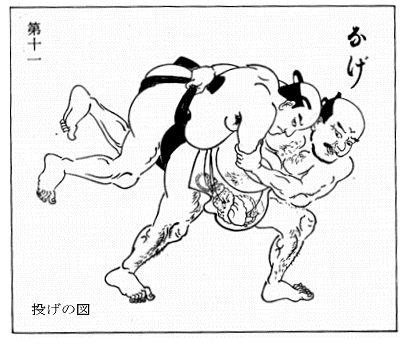
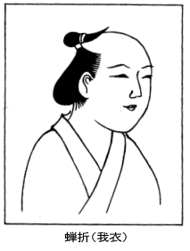

| 相撲の話 | |
| 三田村鳶魚 | |
| (2014) | |
目次
まず、商売人の相撲というものが出来ました時、それを区切りとして、近世の相撲の状況を述べるのが、適当であろうと思います。もともと相撲は営業的なものでなかったので、従って、商売人の相撲というものもなかったのですが、社会情勢もあり、幕府の社会政策とでも言いますか、いろいろな関係で、だんだん営業化するようになってまいったのです。
その興行ぶりはどんなであったかと申しますと、それまでのところ、大体奉納相撲と勧進相撲の二つに分れるので、これが相撲の主たるものでありました。そのほかに、大名の御前相撲でありますとか、大名衆が申し合せて、自分達だけ見るために催す相撲などもありましたが、これは一般公衆に関係ありません。一般のものとしては、奉納相撲と勧進相撲との二つだったのであります。
奉納相撲というものは、ずっと昔からありまして、ある社寺の年中行事として、日もきまっており、めいめい力自慢、腕自慢の連中が、そこへ出て相撲を取る。無論営業的なものではありません。勧進相撲のことは後で委しく申しますが、江戸の勧進相撲――おあしを取って見せる相撲は、いつ頃からあったかと言いますと、普通の説では、寛永元年（一六二四）に、明石志賀之助が、四谷塩町三丁目の笹寺で、晴天六日の興行をした、それがはじめということになっているのです。しかるに、喜多村※庭（※は笛の由に代えて「均」）は、志賀之助という力士の年代から考証して、寛文（一六六一～七二）の誤りである、ということを申しております。京都の方では、寛永元年より二十年ほどおくれた正保二年六月に、干菜寺八幡の再建のため、下鴨で十日間の興行をした、それが京都の勧進相撲のはじめということになっている。しかし、干菜寺の勧進相撲というものは、そこの八幡様の再建のために催したものなので、志賀之助が笹寺でやった方が、本当の勧進相撲――銭を取って見せたのです。寺社再建の名義でやったものとすれば、京都にはもっと古いところにある。正保が一番古いという説は成り立たない。志賀之助の方も、※庭の言ったように、寛永ということが成り立たぬのですから、この二つは通説ではありますけれども、どうも取ることが出来ないのです。
それなら、京都の話はさしおいて、寛永頃の江戸に相撲がなかったかどうか、ということになりますが、『そゞろ物語』の元吉原の条を見ると、「勧進舞、蛛舞、相撲、上るり」とあり、『色音論』にも、「禰宜町に左近が歌舞伎相撲」と書いてある。こういう興行地域で相撲を見せたので、これは銭を取って見せたのでしょう。慶長から寛永にかけて、こういうものがあったに相違ないのです。
しかしこの頃の相撲は、どういう形式で興行されていたか、それはわかりません。このことはあとで申しますが、元方〔主催者〕だけのもので、飛入り勝手次第であったか、今のようにちゃんと東西に分れて、相撲仲間だけで見せたものであったか、その辺のことは全くわからないのです。寺社の奉納相撲は、元方もなければ寄方もない、どちらも飛入りというのが通例でありました。後にはそんなことはありませんが、はじめのうちはそんなふうで、集った中で一番強いものが、その日の最手、すなわち大関ということになっておった。
木村庄之助の書上によりますと、元方すなわち主催者の側である相撲を出し、寄方すなわち相手方は、屋敷方に頼んで、大名の抱え相撲に出て貰って興行した、ということになっております。けれども、この庄之助の書上なるものは、大分いろいろな疑問のあるものでありまして、寛永時分に、大名の抱え相撲を一般の勧進相撲などに出したかどうか、これには何の証拠もないのです。慶長・寛永の間にかけて、相撲が興行地域のうちにあったことは、たしからしく思われますが、それがどういうふうに興行されたかは、わからぬのであります。
ところで、幕府の法令を見ますと、慶安元年二月、寛文元年十二月、同十三年五月、というように押しならべて、勧進相撲と辻相撲を禁じております。それから、貞享四年、元禄七年、同十六年、宝永四年と辻相撲を禁じている。寛文十三年の禁令は、よほど功を奏したものとみえまして、貞享には勧進相撲のことを言わず、辻相撲だけ禁じているのです。辻相撲というのは、素人が寄って勝手に取る相撲で、田舎なら草相撲というやつです。近頃この辺でもよくやっていますが、方々からいろんな人が集って来て、任意に、御道楽に、おもしろ半分で相撲を取る。勧進相撲は銭を取るのですが、その方を止めても、ただの辻相撲の方がなかなかやまぬとみえまして、その方だけを禁じているので、宝永の後に禁令がないところをみると、この辺を境として、その後はなくなったものと思われます。
何のためにこういうものを禁じたかといいますと、相撲風俗のことは別に話さなければなりませんが、概して言えば、無頼風俗、遊侠というような腕ッ節の強い連中が出て、良民を困らす悪風がある、勧進相撲や辻相撲があると、どうしてもそれを奨励するようになるから、しばしば法度が出るようになったのです。
ところが、おもしろいのは、一方にこういう禁止のある中で、また勧進相撲が許されているという事実がある。貞享元年正月、場所は深川八幡の境内、日数は晴天八日、勧進元は雷権太夫でありました。勿論寛文の禁令が出た後なのですが、この時勧進相撲を願い出て、許可せられているのです。風俗の上から、粗暴になり、遊侠無頼の徒が幅を利かして仕方がないので、二十四年間というもの、勧進相撲を興行させなかったわけですが、この貞享元年に許可される時は、どういう条件であったかと言いますと、相撲取であって、諸大名に抱えられもせず、部屋も持っておらぬというような者、すなわち、当時の言葉で浪人相撲と申しておった、そういう者どもの世渡りのために、勧進相撲を許可する、ということでありました。その代り、相撲の場及び相撲取の取締りのために、必ず一人の主催者を立てて取締りの責に任ずる。これは後々もそうですが、相撲場によく喧嘩が起ったもので、随分ひどい騒ぎになることがあったから、こういう条件がついたのです。相撲が好きで腕ッ節の強い、相撲でございと言って威張っているやつが、大名にも抱えられず、勧進相撲もなしでは飯が食えない。こういう手合が、悪いことをしたり、乱暴を働いたりしていけないから、営業的に相撲を取ることを許したので、その条件として、勧進元が出来てきたわけであります。
当時は素人が物数寄でやるのもあり、武家で相撲を取る者もあり、随分いろいろな相撲好きがありました。それが、二十四年もの長い間、辻相撲も勧進相撲も禁ぜられるとなると、力の見せ場がないわけでありますが、神社の年中行事として、お祭の時に相撲を取るという慣例の場所はありました。力自慢の連中は、その時に出て相撲を取る。公衆の相撲を見るのも、その時に限られている。その他は、寺社の再建のために金銭を集めるという理由で、勧進相撲をやるくらいのことだったのです。そういうことで二十四年も継続しましたから、その癖がついてしまって、従来一般の勧進相撲が許可される時がきましても、その方が見物に馴染があるので、やはり寺社の境域で勧進相撲をやる。またその関係から、相撲は町奉行の支配でなしに、寺社奉行の支配というようなことにもなりました。
貞享元年の冬になりまして、またぞろ、深川八幡で勧進相撲を催しました。今度は日数が延びて、晴天十日ということで、勧進元は鳥居権平でありました。この鳥居権平から五代目が、玉垣額之助ということになっております。雷・玉垣というものは、相撲年寄の中では最も有力な家で、玉垣の方は今は絶えておりますけれども、雷は今日まで続いている。久しく絶えていた勧進相撲を、貞享に願いおろした、この時の勧進元ですから、相撲の方では有力な家ということになっていたらしいのです。
この鳥居権平が二度目の許可を得ます時分に、更に勧進相撲をおりおりに催すことの出来る許可を得たいというので、奉行所の方へもいろいろ願立てをしまして、更に条件を加えるようになりました。その条件によりますと、いつでも勧進相撲を許可する、この時、四季の興行免許、すなわち四季のいつでも、興行することが出来る免許を得たので、一般の相撲の人達は、年に四回興行することを許可されたように申しておりますが、実際はそうでない、許可はやはりその都度都度に受けなければならぬのです。この時の条件として、相撲の中で年功の者を年寄として取り締らせる、ということになりました。取締りがなければ許可しない。興行ごとに定められた勧進元なるものは、興行中に出る相撲だけの取締りでありますが、今度は相撲取全体を一つの団体と見て、取締りがこれを統轄する、という意味合いになってきた。それですから、相撲部屋というほどではないが、その相撲団に対して、いつでも取締りが監督の位置に立つのです。
興行の主催者は勧進元でありますが、興行の時は、自分の手の相撲ばかりではない、勧進元に合体するものは皆元方であり、方々から寄せ集める寄方の方にしましても、そこに集って来ている間は、やはり取締りの指揮を受けなければならぬ。これがやがて西と東に立ち分れることになるのでありますが、古くは、元方だけあって、寄方は随時に集める方法が多かったようで、元禄期になってもまだ同様でありました。それも勝手に集まるのでなしに、元方の者が寄方を集めるのです。取締りの上から言いますと、寄方は元方の募りに応じたのだから、当然その支配を受けなければならぬことになる。
それが享保期になりますと、相撲の部屋というものが出来て、幾人もの年寄が組み合って元方を作る、寄方の方も、その年寄が世話をして集める。この時分には、元方・寄方のほかに、屋敷方から大名の抱え相撲を頼んでくるので、元方・寄方・屋敷の三つになっておりました。しかし大名から抱え相撲を借りてきたところで、やはり元方の年寄の支配を受けなければならぬのです。この屋敷方の相撲取を町の興行に貸して下さるということは、元禄の半ば以降にはじまったことで、享保以後はずっとそういうふうでありました。
京都の方でも、この方式に倣いまして、江戸から申せば、十六年おくれた元禄十二年に、岡崎村で興行いたしましたが、勧進元その他の名はわかりません。大坂では、元禄十五年四月三日から十日間、高木橋筋で興行致しました。江戸では、最初の貞享元年の深川八幡の興行が八日でありましたため、それから後もしばらくの間は、八日というのが興行のきまった日取りになっておりましたが、大坂では、頭から十日と打ち出しております。この大坂興行の時には、幕府の相撲取締りの精神が、いかにもよくその番付に現われているように思われる。東の大関が筑紫磯之助、西の大関が両国梶之助、勧進元大山治郎左衛門、願人袋屋伊右衛門とあります。大山というのは、貞享の頃になかなか名高い相撲取ですが、この人は商売人ではない、大坂の紺屋の亭主で、有名な吉岡兼房斎の後とか言われております。相撲は強いが町人です。しかし素人ではあるが名高い人ですから、相撲全体の取締りとして、責任者の地位に立ったのでしょう。願人の袋屋伊右衛門は全くの町人で、これが資本主、本当の興行主のわけであります。江戸では後にこれが指添という名義になっております。
この時の興行から、勧進元といって、相撲取締りの責任を持つ者と、資本主と二人名前を出すことになりました。江戸ではまだそういうふうにならぬうちに、大坂では、元禄十五年の高木橋筋の興行から、こういうふうに別れてきた。町人が出資して相撲を興行する。これより前にも相撲の金主はありましたが、利得を目的としたものではなかったが、これからのは儲けずくです。町人が相撲取を抱えておいたのにも両様あって、相撲好き、強がりからの物数寄と、興行者としての都合からのとある。後者は年寄に取り締らせる意味に背く、前者は風俗上おもしろくないから、双方とも制禁されたのです。
江戸の方を考えてみますと、享保七年四月二日、芝の大仏の興行から、二人署名になっております。それには、二十二人浪人相撲頭上林巻右衛門、指添出来山岸右衛門とあります。前にはただ勧進元とだけあったのが、二十二人浪人相撲頭というふうに書いてある。二十二人というのは、元方の手にある相撲の数ですから、今の言葉なら上林部屋とでもいうのでしょう。出来山は願人ですから、興行方面に当るわけです。もうここまでまいりますと、相撲というものは、仲間同士の競技ということになる。前には誰でも勝手に飛入りが出来たけれども、だんだん組織立ってくるに従って、そう手軽にはゆかない。元方にしろ、寄方にしろ、やはり職業力士でないと具合が悪い。寄方を待って興行するという暖気なわけにゆかなくなってまいりました。
ここでもう一つ注意しなければならぬのは、元禄の芸相撲ということです。前には、体力本位、腕力本位であったのが、新たに相撲術というものが興ってまいりますと、しばしばもって、素人や飛入先生の手に合わない、どうしても相撲の手を知っていなければ、取れなくなる道理であります。
ついでに相撲の日取りのことを申しておきますが、江戸では、安永七年（一七七八）三月二十八日から、深川八幡で十日興行したことがある。これが晴天十日興行のはじめのようにいわれております。江戸で相撲を十日にしたのは、これが最初でありますが、それからずっと十日興行だったわけではない。この時だけのことだったのです。それではいつから十日興行になったかと言うと、天明元年（一七八一）十一月の回向院の興行からで、それまでは八日であったのを、これ以後十日ということに改めた。それからつい先年まで、十日ずつの興行ということになっていたのであります。
それから場所です。文政期（一八一八～二九）に出来ました『東都遊覧年中行事』を見ますと、相撲は年に二回だったらしい。
春秋
角力晴天十日場所不定
芝神明、御蔵前八幡、両国回向院、茅場町薬師
此外折々花角力場所不定
深川八幡、西大久保八幡、神田明神
この花相撲の場所にも、深川八幡が挙げてありますが、一体、貞享の最初に、深川で勧進相撲を許したのはどういうわけであったか。深川には八幡様があったり、いろいろしまして、あすこを賑やかにしたいと考えたのは、三代将軍家光でありました。五代将軍綱吉が相続された時分には、幕府あって以来二度目の大改革といわれる天和の改革で、堀田正俊が思いきった緊縮政策を行った。家光の開きかけた深川も、たたき潰すくらいの勢いでありましたが、その政策が崇りをなして、ついに堀田は変死しました。五代将軍は親父が慕わしい心持から、親父の仕残しておいた仕事に、意を致されたように思われる。勧進相撲の許可なども、その辺の意味があって許可されたのでしょうし、深川方面のことも、元禄以来、だんだん繁昌するように仕向けられております。洲崎の弁天なども、以前はさほどのものでなかったのを、元禄初年に築立てて、かなりのお宮にしました。汐干狩も、古いところは、品川よりも洲崎の方が賑やかだったし、初日の出とか、月見とかいう場合にも、皆洲崎へ出かけるようになった。それでもまだあきたらず、元禄十四年には、護持院の隆光僧正を開山にして、別当吉祥寺をつけております。三十三間堂を深川に移したのも元禄年中ですし、新大橋の出来たのも元禄六年、大渡と申して船渡しであったところに、永代橋を架けたのが元禄十一年、綱吉が深川の繁昌を心がけられたことは、これらでほぼわかると思います。
それが文政期になりますと、もう深川はそっちのけになってしまいましたが、それでも回向院が本場所ときまったのは、大分新しい、天保四年（一八三三）の冬からのことです。あるいは、天明元年十一月以来という説もあるようですが、これは前申した四箇所のうちの一として、回向院をはじめて使ったので、この時から続けて、回向院ばかりで興行したわけではありません。
寛政三年（一七九一）というものは、相撲にとって最も記憶すべき年でありまして、吹上で上覧相撲がありました。将軍が親しく相撲を見物されるということは、江戸時代はじめてのことで、商売人の相撲を柳営に呼び上げられた一事は、大いに相撲の景気を煽りました。その景気から、相撲に関する事柄を寛政三年へもってゆきたがる。しかし、回向院だけで興行するようになったのは、天保四年からだと聞いております。
それはどういうわけでそうなったかと言いますと、両国橋は万治二年にはじめてかかり、天和元年にかけ替え工事が停頓しまして、元禄九年まで仮橋でありましたが、その時分の両国というものは、まだ賑やかなところではなかった。それが宝永年間に大川端に道路を設け、火除地を作るがいいということになりまして、広小路というものが出来、火事の時に火を防ぐための明地を作った。けれども、そういう火除地というものは、不断は明いておりますから、そこにいろいろな興行物がかかる。そのために、後々まで両国の広小路というものは繁昌いたしまして、私の幼年の頃まで残っておりましたが、殊に、文化・文政は大変なものでありました。そういうふうに両国の広小路が繁昌して、興行物が絶えぬようなありさまでありましたから、ついに向両国の回向院に、相撲場が据りつくようになったのであります。
江戸時代における相撲の組織、その日取り、本場所の変遷などは、大体そんなことであったのですが、近世の相撲を素人から引き離すについては、芸相撲という新たな相撲術が起っている。そのことからお話しようと思います。
一体相撲は、相撲の節会などということもあり、大変古い時代からあったので、その古い起源なるものは、とても私どもの調べ及ばぬところにあります。さし当りもっと近いところで、武士の間に相撲がはやりかけたのは、永禄以来のことでありますから、剣術より少し早い、槍術とほぼ時を同じゅうして起ったわけである。それがなかなか長く続きまして、戦国の半ば過ぎから寛永・正保の頃まで、相撲人というと、芸者組として召し抱えられました。元来あれは武芸のわけで、古くから取手というものがあって、取手居合と一口に申しました。だから相撲を取るというのです。組討ちの練習というようなことから取手は発達したのですが、次いで柔道が行われるようになってから、従来の取手だけでなしに、柔の方が入り込んできまして、それが混合して一種のものが出来た。新しい相撲術というのはこれであります。
諸大名が武芸の達者な者を召し抱える。大名のところにはこういう士が大勢おりますが、すべて家来として統轄しますから、風俗の方は心配がない。一方、戦争はなくなったけれども、強い強いの先生は、大分残っているので、名を弘めるために、町人どもまで相撲を抱える。勧進相撲が公許されてからは、営業的にも相撲を大勢抱えるようになって、町人抱えというものが多くなる。けれども、町人抱えではとても統轄出来ませんから、幕府が法令を出して禁じなければならぬことになったのです。この大名抱え・町人抱えのことは、別にまた申しましょう。
相撲風俗のことは後へ回して、技術の方から申しますと、相撲人が武芸者として扱われた元禄以前にあっては、無論相撲の術などというものはない。あくまでも体力本位、腕ずくのわけですが、この風は元禄頃まで残っておりまして、米二俵持つのが、相撲取の一番低い資格であったそうです。従って、相撲の勝負でも、身体の大きい、力の強いやつなら必ず勝つ。技術ではないのですから、番狂わせだの、おもしろい勝負だのというものはない。それが、取手、柔の手が入るようになってから、小男が大男を取って投げる、投げないまでも、負かすというふうになった。技術でゆくから、案外な勝負が出来るのです。土俵が出来たのは天正以来だといいますが、だんだん技術的になってまいりますと、相撲の勝負もいろいろな形式に現われてくる。いわゆる千変万化で、予想することが出来ない。これは、誰がはじめた、誰がどうしたということでなく、その頃起った柔道の手を取入れた結果でありますが、その中で一番著名なのが、紀州の抱え相撲であった鏡山沖之右衛門であります。
この鏡山は元禄頃の力士で、吉宗将軍のお父さんである光貞時代のお抱えだったらしい。紀州の関口流を習って、それをよく渾和した独特の相撲で、鏡山の相撲術は、当時においても名高いものでありました。紀州一般の相撲も、みな鏡山の流儀になって、紀州相撲というものが尊重されるようになりましたが、丁度その時分、堺に八角楯右衛門という力士がありまして、わざわざ紀州まで行って、紀州流の相撲術を学んだ。そうして気の練りということを発明した。気の練りなどというと、何だか禅問答みたいなことになってしまうのですが、この紀州流の相撲は下にいて仕切ります。今の相撲が仕切りの時に手を下におろすのは、紀州流の形であります。この新相撲術に対して、相撲の節会以来の形式を古風とすれば、ここにはじめて新古という名称が出てくる。古い相撲の作法といいますか、取口といいますか、これと新しい相撲の作法ないし取口とが立ち別れることになるのです。
それでは古い相撲の仕方はどうかといいますと、この方には手合ということがある。この型は今の相撲にも多少残っております。塵手水を使うとか、四股を踏むとかいう、あれがそうです。
古い手合は三段の手合といって、両手を高く上げて指が頭上にあるのが上段、両手の指が両眼の通りにあるを中段、両手を屈して臂が脾腹の辺にあるを下段、奇相の手合というのは、手を垂れて膝の辺にあるをいう。
陰陽の手合は、片手を曲げて頭上に、片手を伸べて前へ出す等をいう。それからヤアという大きな声をかけて、相撲を取る勢いを示す。両方それが出合うと、行司が団扇を引いて組合うことになるのです。この時分のは、腰を卸さずに、立ったままで取るので、そこで相撲を立合という。今のはしゃがみ合ですが、そんなところに古風な言葉が残っているのです。
貞享頃になりますと、こういう手合がやみまして、一声の手合というものが起った。一方がヤアッと声をかけると、相手がオオッと言って立つので、行司はいささかてれるわけです。そこで行司がその声を聞いて団扇を引く、というふうになって、行司の様子も前とは違ってまいりました。この一声の手合は、大体享保頃まで続きまして、やはり下に手をおろすことはなかった。鏡山一流の力士は、手を下へおろしましたが、一般の相撲は、立つか、あるいは中腰になっておった。手を両脇につけて構えるから中腰になるので、立眼相・居眼相というような言葉がありました。立眼相はその名の通り立っているので、居眼相は中腰に構えるのです。
そういうふうでありましたが、享保には鏡山一流の紀州の御流儀が成熟して、立派に新しい技術を完成しました。相撲の書類というものは、享保期にそっくり出ております。続いて宝暦期にもまた出ましたが、多くは享保期でありまして、元禄期に起った鏡山一流の技術が、享保に至って完成したことがわかるのであります。享保期に出た書物を見ますと、四十八手とか、八十八手とかいうふうに、一々名を挙げて書いてある。万治・寛文の間に出た金平浄瑠璃には、いろいろ相撲のことがあり、手の名前も出てきますが、どうしても二十以上数えることは出来ません。それが享保期には、四十八手、八十八手、合せて百四十いくつというものが、一々名を挙げてあるのですから、相撲の手もこまかくなったわけであります。
西沢一風が享保九年に書きました『昔米万石通』、あれは今芝居の方に残っているものとしては、最も古いのですが、新しい相撲術の完成期に出来たものであります。『昔米万石通』を眺めた眼で、今の相撲を見たのでは話になりませんが、あれを境として、金平浄瑠璃あたりを見ると、新古の差異がよくわかる。それから、竹田出雲が『双蝶々曲輪日記』を書きましたのは寛延二年（一七四九）ですが、もうこの時分には紀州流が横行しておりましたから、相撲は皆手をおろして仕切るようになってからのものであります。『昔米万石通』と『双蝶々曲輪日記』とを並べて、相撲の技術の方から見ますと、芝居ばかりの眼で見るのと違って、一種の興味があるように思います。
紀州流の流行によって、一声の手合が破れる。一声の手合が破れなければ、相撲全体が下にいて仕切るようになりませんし、紀州流が徹底したともいえない。この一声の手合が破れたのはいつ頃かと言いますと、前に鏡山のところへ修行に行った八角楯右衛門、※之助（※は格の「口」に代えて「田」）ともいったようですが、これが谷風市郎右衛門を破った時の話です。いくら谷風がヤアッと言って立っても、八角は「待った」と言う。「待ったの八角」と言われたくらいで、「待った」をはじめたのは八角だ、ということになっておりますが、何遍声をかけても、「待った」でやり直す。だから一声の立合が成り立たない。この八角については、随分悪口を書いたものがありますが、自分はかなり年を取っているし、谷風は盛りの時分ですから、正面から抵抗は出来ない。それを上方の金持手合が連合して、是非八角に勝てと言う。八角が言うには、私は弱いから、とても谷風の敵でない、これこそ相撲の術でゆくより仕方がない、ということで、しばしば土俵に上ると「待った」ばかりしている。幾度も幾度も仕切直しをしているうちに、片方は度々立つからくたびれるけれども、こちらは立つ気でなしに相手をしているのだから、一向くたびれない。さすがの谷風も気疲れがして、ひょろひょろになってきた。ここが気の練りということのつかまえどころで、一方は次第に気が餒えてしまう。ついに谷風がせき込んで、ヤアッと声をかけたのを、諸声で立つが早いか、直ぐ捻って倒した。さあ割れッ返るような騒ぎです。誰も勝てない谷風が、しかも老い込みかけている八角に負けてしまった。これは穢い相撲の行止りですが、それがために、後には化粧立ちをするようになった。立つ気もないのに、ヤアッという声だけかける。穢い上塗りのようだけれども、それは一声の立合が破れた結果として起ったのです。
この谷風と八角の相撲は、延享期であったといわれておりますが、実際は享保の末の話ではないかと思う。例によってたしかな文献はありませんが、八角と初代谷風との年代から考えると、どうも享保の末らしく思われるのです。八角のやり方は穢いに相違ないけれども、弱いやつが強いやつに勝つんだから、何か工夫がなければならぬ。気の練りということは、そこにあるのです。今日も相撲の仕切りはなかなか手間がかかるので、相撲の嫌いな人などは、余計厭気がさすものですが、あの立つ時の様子を見ると、一種の妙味がある。勝負はある程度まで立つ時にきまっているように思う。私も以前は「待った」が大嫌いだったが、この八角の話を聞いてから、そうでなくなった。勝負の七八分までは立際にある、気の餒えたやつが勝つことは滅多にない、と思っております。
しかし「待った」の性質がそういうものですから、上方の方では「待った」が盛んに流行しても、江戸の相撲はこれを嫌いました。もっともこれについては、大名抱えの話をしなければなりませんが、江戸の相撲が全国的に勢力があり、皆江戸修行と言って江戸へ出て来たのは、大名抱えの相撲があったためであります。従って、江戸の相撲は、安永頃まで「待った」を言いません。寛政三年六月十一日、近世相撲史の上において長く記憶さるべき吹上の上覧相撲があった時、三代目の谷風梶之助の声で立つのを、相手の小野川喜三郎が、どうしたものか「待った」と言った。そうしたら、行司が谷風に団扇を指してしまった。声を聞いて「待った」というのは、気負けであるというので、とうとうこの時の相撲は小野川の負けになりました。「待った」で儲けたやつもあるが、損をしたやつもある。江戸の方では、手を下げて仕切ることはあっても、「待った」をやるのは遅かったので、いい力士になるほどやらなかったようです。小野川が気負けをしたということも、書類の上から見て、なるほどそうであったかと思います。
芸相撲というものを大づかみに申せば、大体こんなことですが、元禄以来新しい相撲術が行われて、それ以前の相撲が大変化するようになった。この話をつづめて申しますと、正徳三年に出た『百姓盛衰記』というものに、
女郎にはあらで、勧進相撲の男共なり、傾城のやうな名をつけて、間違へしも科ならず、
風呂相撲芝居兵法男だて三味蕎麦切にばくち大酒
元禄に芸相撲が起ったのは、芝居に世話物が起ったのと似ております。元禄には横綱と千両役者がなかった。千両役者は、享保の団十郎がはじまりということになっていますが、この方は、実際千両出さなくっても、太夫元と役者とが話合いで出したことにすれば、それでも差支えはない。役者と太夫元との間の話で、一般見物と役者ないし太夫元との関係でないからまだいいが、相撲の方の横綱となると、どこに強いやつがいるかわかりません。飛入りに負けるような横綱では困る。相撲団がちゃんと出来てからにしても、横綱はその中の覇者ということに見物が見ているから、太夫元と役者が、ツウツウで千両役者を拵えるようなわけにはゆかない。従って、芝居よりは相撲の方がおくれるわけであります。明石志賀之助・丸山権太左衛門を横綱の先頭に置くのが定説のようになっておりますが、これは文献の上に何も証拠立てるものがない。文献の証拠の立派にあるのは、寛政元年十一月十九日の谷風梶之助の免状がはじめで、その後のものならあるけれども、それ以前には記録も何もありません。小野川喜三郎が横綱になったのは、それより後だとも言い、あるいは谷風と同時だとも言う。それさえ立証することが出来ぬありさまであります。
元文から宝暦までの間に、お抱え相撲というものがなくなりまして、安永・天明期に、またお抱え相撲が出来るようになりました。これから相撲の寂しくなりました享保・元文あたりから、相撲の土俵の上の話でない、少し横町へ入ったようなことを申し上げようと思うのです。
明暦二年（一六五六）十月に、吉原が今の新吉原に引越しました。幕府は相変らず公娼のために限地制度を取っておりましたから、限定された地域以外に娼婦のおることを禁じております。殊に、明暦の移転の際に、二百軒余もあった風呂屋というものを潰してしまった。これについてはいろいろ話もありますが、これは吉原の方で話すべきことですから、お預りにしておきます。そこで寛文五年（一六六五）十一月に、私娼掃蕩の意味で、吉原町の者に、私娼を見つけた場合には、そこの町役人に断った上で申告するように、ということを命じております。次いで延宝九年八月に、吉原町は今までも私娼を見つけたら申告することになっていたが、今度は自分から市街地を回って見て歩いて、その結果を報告するようにしたら、効果があるだろうと思います、ということを願い出て許可されている。それから、江戸の市街地を回って、私娼の吟味をやることになった。それについてもいろいろ話がありますが、これは江戸の私娼の方の話になって、ここでは不釣合になりますから申しません。
ところで、享保七年（一七二二）七月に、例の通り吉原から音羽町を改めにまいりました。その時、大塚坂下町吉右衛門店市兵衛という者のところに、私娼が十一人隠してあった。この音羽という場所は、護国寺が出来たために、元禄以来繁昌しているのですが、後々まで私娼地として有名なところです。そこでこの売女等を吟味してみると、どういう筋合のものでありましたか、音羽町一丁目の橘屋治兵衛なる者の抱え女であることがわかった。それから、吉原から回りに出た者が、坂下町の名主の三十郎のところへ断って、ただ今私娼を十一人だけ認めた、早速御番所へ申告する、追ってお呼出しがあるだろうから、さよう心得ろ、と言った。名主三十郎も、こうなると否やは言えない。委細承知致しました、ということになった。この時吉原町から使いに行った者は、江戸町二丁目藤兵衛、京町一丁目平八、同二丁目平兵衛、江戸町一丁目喜兵衛の四人でありましたが、名主に断りを言って引き返そうとしますと、青柳町と音羽町の者らしい連中から襲撃されました。そうして大分ひどい目に遭って、藤兵衛・平八・平兵衛の三人は、よほどの怪我を致しました。この時に、音羽八丁目に十右衛門という人がおりまして、そのうちの一人を捕えましたが、他の暴行者は皆逃げてしまった。何でも大分多人数であったらしいのです。
それからこの趣を奉行所の方へ申告しますと、御奉行様も打棄っておけませんから、坂下町の三十郎を喚び上げて詮議がある。この三十郎の申立てによって、青柳町の家持藤介なる者が、襲撃の事情を知っているはずだということでありましたから、いろいろ取り調べた結果、青柳町の三太郎・甚兵衛という二人が入牢、坂下町の番人二人と、伊右衛門という者が手錠でお預けになりました。この取調べによりまして、相撲取の藤巻巻之助という者が加わっていたことが明らかになりましたので、十一日の日に、藤巻が青柳町の湯屋にいるところへ、捕方が向いました。ところが、この藤巻が大変にあばれて、ついに取逃してしまった。その兄の上林巻右衛門なる者も、失踪して行方が知れない。そこで暴行者十四人が入牢、手錠二人、その他にお預けになった者が若干ありましたが、相撲取二人は駆落してしまったので、この両人は永のお尋ねということになりました。
こういう案配でありまして、この騒ぎの発頭人ではなかったけれども、暴行を加えた上からいえば、親方であった。相撲取はどうかすると、そういうところへ出て来て、おおげさに言えば、治安を妨害するふうがあったのです。古いところにも、相撲取が音頭取で喧嘩をした話がいろいろある。それはまた別段に申し上げますが、これは喧嘩というわけではない。私娼掃蕩のために、吉原から穿鑿に来る。そのために、土地が寂れるという意味合いからではありますけれども、それに対して無法無敵に乱暴する。そういう際に、よく相撲取が出て来る。その一例として、まずこれをお話し申さなければならぬと思うのです。
この時分の相撲取の住所というものは、今日のように両国の向うにかたまってはおりません。かつて『江戸読本』に少し出しました『若葉之梢』の中に、相撲取小柳藤兵衛が御用屋敷の東側に住んでいた、ということが書いてあります。これは元禄期の話と思いますが、その御用屋敷なるものが、後に清水家の屋敷になった。高田馬場の上のところ、只今で申したら相馬さんの屋敷の上あたりになりましょう。柳里恭の『独寝』だったかの中に、黒繻子の褌のことが書いてある松風瀬兵衛、あの人は音羽二丁目の西裏に住んでおりました。木村喜平次・同庄之助、これは相撲取ではない、行司の方ですが、これもその辺に住んでおった。この松風などは大変有名な男で、三箇津の大関になりました時分に、鬼子母神に額を納めた。それは正徳二年五月のことでありますが、『式亭雑記』を見ますと、その額に、
相撲大関松風瀬兵衛能忠
判者木村喜平次助正
音羽が繁昌し出したのは、先程も申した通り、元禄十年に護国寺が出来てからですが、相撲取が住んでいたのは、もっと前からのように思われます。綾川五郎治・七ッ森折右衛門などは、元文期の相撲のように思いますが、これらは音羽町二丁目に住んでおった。青柳町から音羽の西裏通に清水がありまして、それを青柳の滝とも言い、綾川の清水とも言ったのは、五郎治が住んでいたからだということです。その他、六丁目に、荒塩治太夫、九丁目に、山辺半左衛門・音羽山峰右衛門・立田山清太夫、東青柳町には、荒熊熊右衛門が住んでいたということも、やはり『若葉之梢』に書いてあります。
中町の金杉屋五左衛門、上町の腕の権右衛門、これは宝暦期だと思いますが、本当の相撲取ではない。草相撲として有名な男で、なかなか腕ッ節が強かったようです。雑司ヶ谷の草相撲なるものは、七月十五日から十八日まであって、江戸時代に名高い年中行事の一でありました。
一体、雑司ヶ谷方面には腕ッ節の強いやつが沢山いたと見えまして、吉宗将軍が鷹野に出られた時分には、腕自慢の勢子が沢山出たという話もある。あすこは浪人者の寄せ集まりのような場所でしたから、気持もほかとは違うし、江戸の初め以来、相撲が盛んで、随分いろいろな相撲が出ております。音羽が繁昌し出してからあすこへ来たのではない、前から地に着いた者が多かったのです。雑司ヶ谷付近は、江戸の相撲の産地でもあり、彼等が久しく居住していた土地でもあったわけであります。その相撲風俗を考えるのに、まことにいいと思う話が、宝暦七年（一七五七）の『当世武野俗談』に出ていますから、それをお話しておきましょう。
音羽の石見屋という茶屋の女房に、おしげという女がありました。もとその女は石見屋に勤めていたと言いますから、私娼だったのでしょう。女もまことに美しい、物静かなおとなしい女でありましたが、大変力が強い。慎しみ深い女だから、その大力を人に見せることもありませんでしたが、七丁目の蓮光寺に法要があって、大勢そこへ参る時分に、おしげも小女を一人連れて参詣に行った。当時相撲年寄の音羽山峰右衛門という者があって、その部屋には若い相撲取が沢山いる。これが二三人ずつ連れ立って、昼といわず夜といわず、その辺を押し回して騒いでおりましたが、それらの組が幾人か、この法要の場にも来ておった。おしげは蓮光寺の客殿の縁側に坐って、説法を聴いております。何しろ勤め上りの女で、様子もいいし、気が利いてもいるのですから、相撲取の一人がその側へ寄って、おしげの尻を撫でたりなんぞしていたずらをした。最初のうちは知らん顔をしていたけれども、ついには首に手をかけて、靠れかかるようなことをしてきた。こうなってはもう知らん顔をしてもいられない。いきなりその手を取って、膝の下に入れ、力を入れて押えつけた。そうすると、その相撲取の顔色が真蒼になってしまい、額から汗を流して、いかにも苦しそうである。涙まで出して、ものも言えなくなった。おしげは騒ぐ様子もなく、その手を膝で押えたまま、水晶の長房の数珠を取り出して、自我偈を唱えてすましている。とうとう講中の世話人が見かねて詫びに来た。お腹の立つのはもっともであるが、どうか勘弁して貰いたい。殊に法要の席でもありますから、と言って頼んだものですから、ようやく膝から手を放して貰って、ほうほうの体で逃げて帰った。それからおしげの大力の噂が高くなった、というのであります。
こういう話をみましても、宝暦期でさえ、若い相撲取の風儀がどんなであったか、よくわかるように思う。彼等は日常とにかく力業をしておりますから、どうも粗暴になりがちで困る。一時勧進相撲を禁じたことがありますが、それも彼らが粗暴で、風俗上おもしろからぬことをする、ということが根ッ子になっていたようであります。
相撲の職業化するに従って、風俗が改まり、部屋が出来て、諸般の統制も出来るようになった。大変昔とは気分が違っているようですが、それでまだこういうことがあったのです。同じ宝暦期の話で、この音羽山の若い弟子のようなことはありませんが、とにかく相撲風俗というものは手荒なもので、往々にして厄介なことを仕出来たす。その証拠として、『祇園祭礼信仰記』の中に、是斎住家というところがある。あすこで佐藤正清が、火の車小次兵衛という者の首を抜く。「足下にふまへ首に手を掛け、曳や吽、おのが自滅と白縫の手柄も斯くや」という文句のところです。これは、宝暦七年十二月から九年まで、三年越興行を続けたというほど、評判な浄瑠璃ですが、これにはまたいろいろな話がある。この時に人形の首を抜くことをはじめてやったので、それまでは人形芝居にそういうことはなかった。なかなか目新しいことだったわけですが、どういうことから起ったかと言いますと、この浄瑠璃は、宝暦四年十二月に書かれたもので、その前年の宝暦三年に、不知火光右衛門が上方から江戸へ帰る途中、馬子と喧嘩して、馬子の首を引き抜いてしまった。それが大変な評判になりまして、翌年の大坂興行の時には、見物が首を抜け抜けと言って、喝采したという有名な事実がある。それを取り込んで、一当て当てたものだそうです。相撲の喧嘩はいくらもありますが、その中で、最もわけもない、ただ喧嘩をして馬子の首を引き抜いたという簡単な事柄が、浄瑠璃に取り入れられたことは、江戸三百年を通じて、ほかに例がないと思います。これに類似のことは、あるいは捜したら出てくるかもしれませんが、ちょっと気がついたままをお話したわけであります。
明和・安永以後の、大名の抱え相撲が多くなりまして、それが江戸で顔合せをするものですから、どうしても、江戸の相撲の方が、上方よりいいのがいるようになる。修行するにしても、江戸へ出なければいい相撲になれない、というようなわけで、ますます江戸へ集まるようになり、民間でも、相撲を見物することも、ますます盛んになってまいりました。登場する力士の数も、だんだん殖えてくる。江戸では寛文以前には、大抵四日くらいしか興行しなかったのが、貞享期の芸相撲になりかけた頃から八日になり、安永期にはすっかりきまったわけではありませんけれども、時々晴天十日という興行日数がありました。上方では宝暦期にもう十日の興行をしておりますが、江戸でほとんど十日に一定したのは、天明期からのようです。これは、だんだんお抱え相撲が殖えて、江戸にいい力士が多くいるようになったためと思われます。
そうなってまいりますと、自然見物も多くなり、相撲の方でも、見物されるつもりになったから、自然と気風がおだやかになってきたらしい。女が相撲を見物するということは、上方ではいかがでありましたか。江戸では、寛政期に家斉将軍が相撲を見られた、吹上の上覧相撲は二度あるのですが、どうもそれ以来のことのように思います。上方の方のことはよくわかりませんけれども、宝永六年に出た浮世草子『子孫大黒柱』の中に、不釣合なもの、戒めなければならぬものとして、次のようなことが列挙してあります。
出家の身として金銀を利足
武士の刀脇指の売買
百姓の鞠楊弓茶香のあそび
町人の馬の稽古
医者の料理ごのみ
座頭の兵法
女の相撲見物
社人の仏学
今日は真葛が原の相撲の初日、七五郎、雷電が勝負、是は見ずにおかれまいと、内に金砂子に秋の野かきし乗物のりはしらかし、女のすまふ見るといふ事、昔は沙汰にもきかざりし。
相撲に見世物の気持が出てまいりましたのは、明和年間からのように存じます。この頃には女相撲も起り、盲人と女との相撲などというものも、大変はやっております。相撲が見世物じみた気分で眺められるということは、本当の相撲の場所へ女が見に行く、見世物小屋のようなつもりで、相撲を見に行くということは、明和以前にはなかったようであります。その気分を見るべきものに、今でも残っている相撲の一枚絵がある。
大童山文五郎、あれは寛政六年に出羽から来たので、十一歳で二十二貫あったといいますが、土俵入だけしたので、一人前の男になってからも、実際の相撲の方については、何も話がなかったらしい。
次は大空武左衛門、あるいは牛股又右衛門とも言った男です。これは大きな男で、牛が股くらいまでしかないというところから、牛股と称せられた。一枚絵も残っていますし、手の痕を捺したのも伝わっています。文政十年に肥前の矢部から来たので、二十三歳で七尺五寸、三十五貫目あった。これなんぞも本当に相撲を取ったのではない。わずかの間江戸におったので、本当の相撲取ということは出来ないのです。
天保七年に名高かったのが神通力国吉、これは信州川中島から来たので、七歳で二十貫目あった。これもやはり土俵入だけの連中で、本当に相撲取になった形跡はありません。
天保十四年に評判だった三楯山喜作、これも二十九歳で三十貫ありましたが、相撲はから下手で仕様がなかった。江戸にいたのは一場所だけで、その次の年は大坂へ行ってしまった、という話です。
弘化元年に肥前平戸から来た生月鯨太左衛門、これは十八歳で七尺五寸、あるいは七尺八寸あったと言います。目方は三十一貫、力は十八人力あったとか言われておりますが、相撲取としてどれだけの価値があったかというと、何も伝わっていない。身体の大きいことを見せただけの話です。
こういうものが相撲界に出たということは、ただ図体の大きいところを見物させるだけのもので、どうしても見世物になってしまう。見世物根性が出たと言ってよかろうと思います。この時分の話で伝わっているのに、鉄砲突きの緋威力弥が南部へ行った時、あの辺では小荷駄に女馬を使う。緋威は三十四貫あったそうで、女馬一匹じゃいけないから、二匹の馬に乗って行った。それでも十里もある道程になると、とても馬が堪えられないので、中途で四度乗り換えて八匹の馬を要した。この話が評判になって、江戸でも騒いでおりますが、緋威が相撲が上手だったというよりも、並の馬に乗れないで、八匹も乗り潰したということが喜ばれるというのは、見世物気分で、何か珍しいものを喜ぶようになっていたらしく思われるのです。
けれども、この時分には、相撲がだんだん小さくなっていたかもしれません。『真佐喜のかづら』に、享和・文化頃に形の小さくなったものを挙げて、「小判、品川海苔、浅草紙、豆腐、蝋燭、煎餅、角力取」と言っている。その小さくなったお陰で、ばかばかしい図体の人間が評判になった。相撲術を見るべき場所で、技術よりも、変に大きな子供などが見物されるようになったのじゃないかと思います。
相撲は見世物気分に傾いてまいりましたが、それでもまだ、全く穏やかな方に向ったわけではない。天保期に書かれた『愚者論記』の中にも、「今じやア見物も、ただ喧嘩の下稽古でもする気で見る様子だね」とあります。わずかこれだけの文句でありますが、相撲の見物が、腕肱を張って気込み凄まじく、互いに声援することから、とかく喧嘩になりやすい。昔は随分素刃抜などもやったものですが、天保あたりになりましても、まだ喧嘩腰で見物するもののようでありました。
文化頃に見世物気分になって、興行者の心持が変り、相撲そのものが武芸であることは、相撲取も見物も忘れてしまった。そうして残ったのは何かと言えば、見物の無法者と、勝ちさえすればいいという相撲取とである。その中にあって最も感服すべきものは、稲妻雷五郎の『相撲訓』であります。「青柳の風に倒れぬ力かな」という句は、誰も知っているものですが、この『相撲訓』というものは、すこぶる珍重なもので、この人は本当のいい力士だったように思います。人柄のいい力士としては、稲妻の前に三代目の谷風梶之助がありました。そういう柄のいい人もないではないが、一般にはおもしろくない力士が多かったのです。
殊に、相撲場の喧嘩ということについては、いろいろな話がありますが、中でおもしろいのは、渋谷の金王八幡に喧嘩御免の相撲というのがあった。渋谷には限りません、本場所の相撲でも、草相撲でも、相撲場に喧嘩が絶えなかったということは、宝暦頃まで例を引くに堪えぬほど沢山あります。金王八幡の草相撲というのは、八月十五日の祭礼の日にあるのですが、享和の何年でしたか、定例のお祭に相撲をやった。その時大変な喧嘩がありまして、負傷者を沢山出したのですが、土地の者ではどうもならない、社寺辺のことですから、寺社奉行の脇坂淡路守へ訴え出た。そうすると、寺社奉行の方からは、相撲を興行するのに、どういうわけで、こちらへ届けずにやったか、というお尋ねがある。これは江戸ばかりではありません。江戸回りにしましても、相撲の興行は一々お届けして、寺社奉行の許可を得ることになっているのです。そこで村方の者が、実はこれはお祭についての相撲で、永年お届けせずに興行する慣いになっております、と答えたところ、ああそうか、今まで届けをせずにやっておったか、そうか、そうかと言って、そのまま下げてしまった。それ以来、喧嘩があろうが、怪我人があろうが、死人があろうが、一切取り上げない。喧嘩御免ということになりました。
これは享和期の話でありますが、この脇坂は有名な寺社奉行です。村方なんぞの相撲の喧嘩について、一々の訴えを聞いていたら数限りもない、というところを押えて、こういう取計らいをしたのでしょう。とかく取締りの鈍いところで相撲を興行すれば、喧嘩が多いのは当り前だ、という意味合いで、こんなことをしたのです。それですから、八州取締りなどは、村落での相撲興行を禁じております。市街地なら格別、村落では許さない。こういうことから考えますと――まだほかにいくつもの事柄がありましたろうが、主としてその場所に起る喧嘩が厄介であり、取締りのついておらぬ場所ではなおさらのことですから、村落の相撲は許さなかったものと察せられます。
それから、ちょっとあとへ戻った話に、有名な「め組」の喧嘩があります。あれは芝神明の境内に起ったことですが、これなども、無論片方ばかり悪いわけじゃありません、相撲の根性というものがよく見えます。講釈や芝居で取り持って貰ったので、大変な事件のように扱われておりますが、その実大したことじゃないのです。伝説もいろいろあれば、書類もいろいろありますが、どうも信ぜられぬことが多い。妙にごて返しておりまして、中には話にもならぬような話がある。最もひどいのは、半鐘を島流しにしたという話で、先年も誰でしたか、ラジオで話をして、島から戻った半鐘の音をお聞かせ申します、なんて言って、半鐘を敲いていたことがありました。いくら徳川時代の者が馬鹿でも、半鐘を島流しなぞにするはずがない。まだそういう話さえ信ぜられている始末でありますが、それほどごて返した神明の喧嘩の中から、相撲風俗を覗いて見ようと思います。
一体あの事件を大変名高いものにした種子は何かといいますと、あの時の裁判は町奉行だけでない、三手捌きと言いまして、町奉行・寺社奉行・勘定奉行の三奉行を煩わした。これよりもっと上になれば、五手捌きというのがあって、更に、大目付・目付の加わるのがあります。神明の喧嘩は五手ではありませんが、三手掛りでした。民間の出来事に三手掛りなんていうことは、滅多にないから、それであんなに喧伝されたんじゃないかと思う。何故三手になるかと言いますと、相撲が寺社奉行の支配、鳶の者が町奉行の支配で、両方に関係のある事柄ですから、勘定奉行が立ち合ったのです。事件は小さいけれど、三手掛りになった。大概は手限りの捌きで済むのに、三手掛りであったということが、珍しく名高いこととして、披露されたものらしく考えられるのです。
事件そのものは下らないものだけれども、一通りはお話しなければなりますまい。私の言うところも、絶対に間違いないとは申せませんが、まず私の見た範囲で、一番信のおけそうな話をお取次することにします。
文化元年正月十六日、十日興行の相撲の七日目です。芝浜四丁目抱又右衛門の倅辰五郎と、同町の長次郎という二人が、柴井町の富士松という者を連れて、相撲場へやって来た。抱というのはその町内の頭のことだそうで、その下回りの者を、カケツケと申します。辰五郎は頭の息子ではあるが、カケツケで、あとの二人も無論そうです。そこでこの時分の仕癖としますと、興行する時分には、その興行場所の近所の鳶のところへ、付渡りといって挨拶する。挨拶に来られれば、こちらでも何がしかの祝儀を持って行かなければならない。ですから、近所の者の入場料は取りません。殊に鳶の者などは、その町についているものですから、一般の人とは違います。これは相撲に限りません、何の興行物でも同じことなのです。
「め組」というのは、二番組でありまして、桜田久保町・兼房町・二葉町辺・源助町・露月町・神明町・増上寺門前・浜松町・芝口町、これだけが「め組」の持場所になっている。この話もついでに言っておかなければならないが、江戸時代には消防が町役になっていましたから、各町で消防組合が拵えてある。各町の消防組合は、本所・深川・千住を除いて十あります。この十番の組を、またいろは分けにしまして、四十八組になっていました。いろは組は一組ごとに纏いが一本ずつある。この消防組から割り出して、明治の初めに何大区何小区というものを拵えたのです。
そこで、今言ったように、近所の者はただ見られるという慣例があるから、三人でやって来たのですが、柴井町の富士松は「め組」の者じゃない。他町の鳶の者だから、銭を払って行かなければならぬはずのところだ。もっともそう遠いところじゃないから、随分仲間を連れて来ないとも限りません。けれども、行き届いた人間とすれば、そういうところへ銭を払わずに行くというのは、妙なものです。僕なんぞが芝居から切符を貰って行くのは貧乏だからで、御招待ですか、なんて言われると、冷汗が出る。見倒すということはけしからんと思っている。そういう点から考えても、富士松なんぞは、苦しければ行かなけりゃいいので、しみったれたイヤなやつだ、とこの話を考える度に、いつもそう思うのです。相撲の方でも一人のことだから、そう厳重にしなくてもよさそうなものだが、いけないといえばいけないんだから、木戸を突いた。そうしてぐずぐず言っているところへ出て来たのが、柏戸宗五郎の弟子の九竜山扉平で、この体を見ると、何だい、ドブ浚いがごたごたするなら、つまみ出しちまえ、と言った。こいつも随分粗暴な話で、穏便に話が出来ないことでもないのを、いきなりこう言って罵倒した。
九竜山というのは、そういい相撲ではありません。二段目くらいのものです。それが木戸でごたごたしているのを見て、口を出したといえばそれまでだが、こいつが元来辰とよくない。神明の水茶屋の女を張り合っていたのですが、その形勢は九竜山の方が分が悪い。心中大いにむくれているところへ、辰が来てごたごた言っているものだから、早速出て来て悪口を利いた。この話が世間に伝わっていないので、この事件がよくわからないんじゃないかと思う。
けれども、辰の方は三人だし、向うは大勢いる按配だから、そこを引き揚げて、奥山喜太郎の芝居へ入ってしまった。江戸の三宮芝居といって、神明には芝居がある。いつでも奥山喜太郎という名前でやっていました。辰五郎等は、木戸を突かれたものですから、喧嘩でもしなければ納らないところを、我慢して芝居へ来た。ここの木戸では何も言わなかったのでしょう、入って見物していると、そんなことは知らない九竜山が、またぶらりと見物にやって来た。そいつを見たから堪らない。何だ、生れ損いの片輪が、女に惚れられようなんて凄まじい、茶代だけ取られて、あとで塩花を撒かれているのを知らねえで、いいザマだ、と言って悪口を浴びせかけた。こいつには九竜山も閉口した。とんだところで、火の粉が振りかかってきたから驚いたが、こいつがあばれ出して、桟敷にいた鳶の者を二三人投げ落した。鳶の連中は、芝居の中で喧嘩をしては済まないから、奴等の帰るのを待とうじゃないか、というので、友達や何かを語らって、大勢で待っている。その様子が甚だ不穏なので、神明社の抱え鳶万吉という者と、相撲の方からは揚羽という年寄が出て来て、これが仲裁しまして、何とかして帰すことにした。本当に済んだというわけではないが、とにかく両方へ引き分けて帰すことにいたしました。
九竜山も裏口へ出て、自分の部屋へ帰ろうとする。そこで出くわしたのが、四ッ車大八だ。四ッ車は九竜山と同じく柏戸の弟子で、東の幕内におりましたが、これが九竜山に向って、お前は、鳶の者なんぞに、悪口を言われたり、打たれたりして、それでオメオメと部屋へ帰って来るというのは、外聞が悪いじゃないか、仲間に聞えても面目ない、相手はどこへ行ったわけでもないのだから、引き返して死合え、骨はおれが拾ってやるぞ、と言ってけしかけた。九竜山もこうなると、それでも、私は部屋へ帰ります、というわけにはいかない。すぐに鳶の者のあとを追いかけて行く。九竜山が行くから助けてやれ、というので、四ッ車・藤の戸以下、柏戸部屋の者が十人、抜刀で追いかけた。鳶の者の方でも、じっとしてはいられない。屋根へ上って瓦を投げる、というような、大きな騒動になってしまった。一遍仲裁をしたんだけれども、再燃してこういう始末になったのです。
それから、社内のカケツケの長松というやつ――これは後に吟味中牢死しましたが、こいつが七軒町の番屋の火の見へ飛び上って、止める番人を蹴倒して、早バン木を続けざまに打つ。浜町二丁目の長吉、綽名を赤長というやつが、近所の火の見に上って、スリ半鐘を打つ、そら早鐘、早バン木が鳴る、というので、各町打ち継ぎで、ジャンジャンカチカチやりますから、「め組」三十六箇町の人足は、そら火事だとばかりに、社内へ押しかける。大変なえらいことになりまして、もう何とも仕様がない。とうとう富士松は疵で死に、芝口一丁目のカケツケ法華亀、浜松町四丁目抱善太郎の倅長治郎、この二人が大怪我をする。血を流すような騒ぎになりました。
これを見ました親方の柏戸は、「め組」の頭善太郎、浜松町四丁目の頭又右衛門とも相談して、何とか取り鎮めようとしたのですが、これより早く、雷権太夫は寺社奉行の松平右京亮に訴える。鳶の者の方では、誰だかわかりませんが、南の番所へ出て、根岸肥前守に訴える。一方では調停にかかろうとしたのですけれども、もう間に合わない。そのうちに、訴えによって、与力・同心が向いまして、社内で三十六人という者を縛らせてしまった。これで仲裁することが出来なくなったのです。
この時処分された者は、あまり多くありません。重いお仕置を受けたのは鳶の方ですが、それも喧嘩の方の罪ではなしに、非常警報を濫用したという罪であります。相撲取の方は、人を殺しているに相違ないが、それも最初から殺すつもりでやったのではないから、九竜山一人が江戸払い、四ッ車・藤の戸等は、友達が喧嘩するというので、同じ部屋から応援に出た分で、一切は四ッ車・藤の戸が背負いまして、他は沙汰無しで済みました。
半鐘をたたいた一件の方は、前言った長松が吟味中牢死、浜松町二丁目の長吉が中追放、辰五郎が喧嘩の発頭人だというので、吟味中御預けになっていましたが、自分の仲間の方が重い処分を受けるというのを聞いて、脱け出してお慈悲願に行った。御預け中謹慎していなければならぬのを、差越願をしたということで、これは敲きの上、中追放になりました。
この喧嘩が終ったのは、いつ頃だかわかりません。はじまったのは九ッ過ぎで、そう長い時間ではない。ようやく二時――今の四時間くらいかかったんじゃないかと思う。しっかりした記録がないから、委しいことはわかりません。
これらのことで見ましても、寛政以来相撲の心持が下って、何の矜持もない。天下の力士というけれども、心持にそういうところは少しもなく、素行の修らぬ者が多くなった。暴行・暴飲・暴食をやって、お大名の前へ出ても大胡坐だということが、自慢であったりする。その例として、もう一つ例を挙げておこうと思います。
文化九年二月十日、浅草観音の境内に花相撲があったときの話です。筑波山という年の若い相撲取が、大分御機嫌で厩河岸の渡船に乗っておりましたが、乗合士の鐺に障ったのを、文句を言われると思ったのでしょう、士だなんて、狭い船の中でこんな長いものをさしていると、乗り降りする者が迷惑する、とあべこべに悪口を言った。渡船の中ではありますし、腹を立てて酔った相撲取を相手にしたところで、何にもならない、と考えたので、士は船が着くのを待って、すぐ岸へ飛び上ってしまいました。
筑波山はそれを見てどう思ったか、あるいは、士でもおれを見れば恐れてこの通りだ、とでも思ったのかもしれません。素刃抜をして船の中で振り回していましたが、船が着くとそのまま駆け上って、路傍にいた担売りの天秤棒をたたき切った。担売りはびっくり仰天して逃げて行く。そこへ来かかったのが、飯田町の火消屋敷にいる伊東主膳の家来です。伊東主膳というのは十人火消なのですが、この家来はどこかへお使者に行った帰りと見えて、上下姿で恭しくやって来る。一方筑波山は、今の担売りを驚かしたあとで、おもしろ半分に刃物を振り回しているところだから、出くわしたはずみに、いきなり斬り付けた。相手は士でありますし、なかなか落ち着いた男だったのでしょう。静かに抜き合せて、斬り合せているうちに、筑波山の肩先へ斬り込んだ。今まで酔払っていた筑波山も、これで正気になりまして、埋堀の方へどんどん逃げる。武士は静かに鉢巻をして、そのあとを追い駆ける。ついに追いついて斬合いをしましたが、筑波山は右の肱から斬り落された。よろめくところを薙ぎ倒して、悠々と自身番へまいります。そうして、姓名・所書を出しまして、かくかくの次第で無礼討に致しましたからお届けする、と言う。筑波山は深手を負ってぶっ倒れているのですが、それでも悪口を言うのをやめない。聞き苦しい悪口を言って仕方がないから、士は自身番から出て行って、止めを刺して、そこを立ち去りました。
これは士に無礼をしたために殺されたのですが、こういうような話、町人どもを困らしたというような話は、ほかにもまだあったようです。この筑波山の話などは、こういう中では大きい方の事件だと思います。よほどおとなしくなったようでも、まだこんな調子のところがあった。それですから、天保十三年の「関八州取締触書」を見ますと、百姓の子供が相撲執心であった場合、次男・三男ならまだしも、相続者たる長男を相撲の弟子にしてはならぬ、ということがあります。つまり相撲になる者を制限したのですが、この制限はなかなか意味深長なものがある。俗に八州様と申した関八州取締出役なるものは、御代官手代が勤めるので、この役は文化二年から出来たのです。それまでは、御代官警察ともいうべきものは、備っていなかった。農村の状況も、宝暦以来次第に変化してまいりまして、化政期には、無頼の徒が目立って多くなっております。
近頃侠客と称せられる賭奕打、あの人達が殖えたのは天保期ですが、その他にも無頼の徒が多く、素行の修らぬやつが激増しました。相撲の落ちこぼれが村々へ行って、博徒の群に入って、強い者勝ちの姿になる。侠客の話の中に相撲が出て来るのは、化政期からの話で、それ以前には聞いたことがない。勿論、この手合が、どの地方でえらい親方になったということもありませんが、大兄哥程度の者になって、あばれたことはあるようです。
これはどういうことかといいますと、素行が修らず、人柄もよくないから、相撲仲間から排斥されるとか、破門されるとかいうやつが多い。江戸では暮せないから、故郷へ流れて来る。そうすると、腕力があるので、何もしないで威張っていられる。これが博徒の中に入ってゆく、ということになるのです。また一つには、相撲が見世物気分になったために、相撲の身入りが前よりよくなった。相撲の懐具合がよくなれば、自然下回りの者まで潤いますから、余計不身持になりやすい。そこで不人柄なものを追い出さなければならぬ、というようになったものと思われます。
帆足万里なんていう先生は、弘化元年に、勧進相撲禁止論を唱えております。それは、田舎の通り者〔侠客〕には相撲上りが多い、ということが眼目でありまして、相撲の弟子がいると地方の治安が保てない、その根ッ子であるから、勧進相撲を禁止しなければいけない、というのです。
深川潜蔵というのは、平田篤胤も大分閉口した男ですが、この人も、嘉永六年に、民間の武芸一切を禁止すべし、という議論を書いている。これは、武家に対して民間といったのですが、その中に相撲も入っていることは言うまでもありません。これ等の説を見ても、識者がこの時分から、ひどく心配していたことがよくわかります。その弊害の最も甚しかった例は、勢力富五郎の一件でありましょう。
芝居で致します勢力富五郎――実際の名は佐助――これは説経にもあり、祭文にもある。近頃の浪花節にもあったと思います。嘉永二年五月二十三日に、勘定奉行久須美佐渡守の掛りで、大変な騒動をやったのですが、このとき処分を受けたのは、下総国香取郡清滝村無宿佐吉、羽斗村の仙助の両人で、これは獄門になりました。その親分である勢力佐助は、雷権太夫の弟子になって、十両くらいまで進んだのですが、身持が悪いために、雷親方から破門されて、自分の生れ在所へ帰り、笹川村の繁蔵のところへころがり込んだのです。それから講釈でします通りあばれ回って、子分でさえ獄門になるようなことをやってのけた。その模様というものは、槍だの鉄砲だのを持って歩いて、大分ひどいことをやったようです。その顛末は、先年出しました『捕物の話』の中へ書いておきましたから、ここでは申し上げませんが、この勢力佐助が相撲上りであって、そうえらい勢力のある親分でもないのに、随分悪事を働いている。勢力というのは相撲の時の名ですから、その時分の番付を見ていただいたら、必ずあることと思います。
そういうふうでありますから、相撲上りの者が、何程これから害悪を貽すことか、といって、皆案じておりましたが、幸いに帆足万里や深川潜蔵の心配したほどのこともなく、江戸の模様が変りまして、明治の時代になりました。それとともに従来の悪風もやみ、今日では、あの人達も立派に相撲術をもって立ってゆけるようになった。けれども、江戸時代――享保以来のことを考えてみますと、相撲というものは、一方ではかなりの持余し者でありました。そのことを主として申し上げた次第であります。
一体相撲が営業化してまいりましたのは、前にも申しました通り、貞享元年正月、深川八幡の境内で、晴天八日の勧進相撲を致しました。久々の勧進相撲でありましたが、これから相撲が営業的のものになったのです。それから後八十年ばかりたって、また模様が変るのですが、その間に元禄時代の芸相撲というものが起りまして、相撲術というものがあるようになった。これから大変相撲に興味があるようになって、世間の耳目を集めるような傾向になりました。元禄の芸相撲なるものは、相撲の歴史の上に重大な事柄でありますが、それに注を入れるような意味で、これからお話を申し上げるつもりでおります。
相撲が営業化し、盛んになるにつれて、素人と商売人と、二分れになることになった。その時に相撲の風俗が大変かわったので、それがどんなに変ったかということについては、いろいろなお話がありますが、最も手短かに、わかりやすく申し上げるならば、第一に相撲の名前が違ってきました。前には、ぎごちない、きつい名前であったのが、元禄以降は柔かい綺麗な名前になっております。
従前はどういう名前であったかと言いますと、慶安四年（一六五一）七月に、
しこ名の異名を付候もの有之候はゞ早々可申上候、いにしへより相撲取候もの異名付候とも、向後は其名堅無用たるべく事
それから『好色万金丹』とわずかな年代を隔てて出た『千尋日本織』という浮世草子、これは宝永四年版ですが、この中に江戸の町男達の名が挙げてある。
白山伝兵衛、棹竹十兵衛、でくろく六兵衛、はつはうば兵三、てちびんの七蔵、発心の五郎兵衛、小五郎の八、業平孫三、くまたか三左衛門、椀箔左兵衛、ほつと清十郎、釣鐘弥三、腕の源三、蛇腹でうちん。
正徳三年版の『百姓太平記』、これは相撲気分が変った表徴に、名前がずっと柔かになっておりますが、その文章をここへ出しておきましょう。
障子の内に女の声して、扨も扨も浮舟様はうかぬ顔、有明様はけさ迄おきてゐたようなねぶたそうに、ちと十五夜さまのやうに、はつきりとさしやんせ、きり嶋さま、太夫さまさきにから待てじやにといへば、大之助さては此内に傾城が大ぜい有とみえしと、障子のあくをまてどもあけず、よしや情のらうぜき、しからばしかれ、それこそ恋のよすがならんと、石をひろい障子にはたとあつれば、神鳴のおつるような声をして、何やつじやほつこしもないと、とんで出るを見れば、仁王のような男共、おびとけひろげにどんすの下帯、女郎にあらで勧進ずもふの男共なり、傾城のやうな名をつけば、聞きちがへしもとがならず。
そこで、今八十年と申しましたが、この八十年の間に、相撲はすっかり営業風になりまして、玄人相撲が大変な興味のものになってきた。八十年経過しますと、宝暦前になるわけですが、その宝暦期になったところで、晴天十日興行になりました。本当に晴天十日ときまったわけではないけれども、十日興行のこともあるようになったのです。これは見物が多くなったために、相撲の興行が長くなったので、明和の頃から、相撲は見世物になっております。相撲が見世物になるというのは、どういうことかと言いますと、相撲の興味が相撲場の外に溢れ、世間の中に広がったから、そうなるのであります。
それとともに、世間はその調子合をはずすものでなく、その上に乗りかかってきますから、おどけ相撲というようなものも出てくる。これは、後々まで花相撲の時によくやる「しょっきり」というやつで、芝居で言えば「そそり」という調子合のものです。「しょっきり」は玄人相撲の話ですが、見世物の方でおどけ相撲と申しますと、盲人の相撲、女の相撲、盲人と女との相撲といったようなもので、それに続いて、かわいらしい子供相撲なども出てまいりました。
明和六年（一七六九）の三月十八日から、浅草寺の開帳がありました。日数は三十日でしたが、あまり繁昌するので、二十日間日延べを致しまして、六月八日まで続いたのです。その時に奥山の見世物が出来た。その目録を書いたものを見ますと、盲人と女の相撲、盲人ばかりの相撲があったようです。盲人ばかりの相撲、女ばかりの相撲は、前からありましたが、盲人と女の相撲というものは、この奥山の見世物がはじまりで、明和六年以降のことらしく思われる。少くとも江戸としては、この時がはじまりのようであります。
女ばかり、盲人ばかりで相撲を取る方になりますと、『俳諧時津風』というものがありまして、寛延から明和へかけての流行物が挙げてある。その中に、座頭相撲として、「のばす手はなでるやうなる柳かな」、女相撲として、「男より勝色ありや女郎花」という句が出ております。この本は延享三年版ですから、たしかに、それ以前に、盲人の相撲も女の相撲もあったことがわかります。また、宝暦期の俳書に『東土産』というものがありますが、この中に、女相撲の画があって、「柳より風に音なき瓢かな」という句が書いてある。これは画入りの俳書なので、女相撲のところばかりでなく、画が沢山入っております。座頭相撲は盲人同士で取るのですから、互いに手さぐりで相手をさがす。離れると相手がわからなくなってしまう。そこにたくらまぬ滑稽があって、お慰みになったもののようであります。
これらに続いて起った事柄に、力持というものがある。男の子供の大きいのですとか、大人でも図体の大きいやつを、相撲は取らせずにただ見せるので、そういうものを見世物に引きつけて行ったことは、前に申しました。力持が同じ分れでありまして、力の強い者を出してその力を見せる。これは江戸では古くからあるのです。延宝二年に堺町で、四歳の子が、石臼に銭二貫載せたのを持ち上げて見せた。これが力持を見世物にしたはじまりのようですが、上方の方はもう少し早いかもしれません。
女の力持は、安永五年五月に、堺町の楽屋新道で、柳川ともよという女が、大八車に米五俵載せて差し上げる。それから仰向けに寝て、腹の上へ臼を載せて米を搗かせる。碁盤を片手で持って百目蝋燭を消す。女の力持は、江戸ではこれがはじまりだったらしいのです。このともよという女のことは、画に書いて版にしたものが好事家の手にあるくらいで、当時大分評判だったようであります。この女は越後高田の百姓の娘で、親が貧乏のために、六箇年十両で、大根畑の柳屋という私娼の家に売られて来た。ばかに大きい女ではあったが、女ぶりも悪くなく、色白で肌がまことに綺麗な女であったそうです。大根畑というのは岡場所ですが、そこでも大分評判の女だったらしい。それは、ある日男子のいない時に、どこからか酒樽を持って来て、しまい込むのに困っていたのを、この女が見て、ちょいちょいと抱えて、わけもなく台所へ持ち込んでしまった。こんな物は重くも何ともありゃしません、と言って、手玉に取るようにして見せた。どうも今度抱えた女は恐しい力がある、というところから、そこの亭主が考えついた。どうせ私娼を置くところの亭主ですから、利を見ることに敏い。早速香具師に相談して、見世物に出すことにした。その代り、三箇月力持をしてくれれば、年季証文を返して国へ帰ってよろしい、ということになったのです。
女の方も、私娼をやるより時間が短いし、力を出しさえすればいいんだから、かえってこの方がいいと思ったのでしょう。安永五年五月から江戸中を歩いて、しまいには大坂辺へも行ったらしい。その模様は風来山人が『力婦伝』というものに書いておりますし、黄表紙などにも沢山出ております。ともよも大力のお陰で、大変有名な女になったわけです。
それから大分間をおきまして、文化六年正月に、浅草柳稲荷向うの中茶屋から、淀滝という女の力持が出ました。この間にもいろいろ力持の話はありますが、女の力持としては、前のともよと淀滝が名高いようです。この淀滝もやはり私娼出身で、大分委しく記録されたものがある。はじめは品川本宿二丁目にいたので、品川の女郎は橋手前の方が上等、橋向うの方が下等なのですが、これは橋向うの方です。橋手前が十匁くらい、橋向うは四六といって、昼四百、夜六百の相場ですから、ごく安い女なのです。その橋向うの鶴屋という家の抱えで、蔦野という名でしたが、本当の名は「つた」と言いました。
この女は下総小金の百姓新七という者の娘で、文化四年二月から鶴屋の見世へ出たのですが、力持になったのは二十三歳の時でありました。身の丈五尺八寸五分、着物の着丈が六尺二寸、手形などもいろいろなものに出ておりますが、長七寸二分、幅五寸といいますから、大変大きな手です。だから、客の前へ出ても、手足を見せるのがいやで、懐手をしていたといいます。自分の身体や手足の大きいことを、恥しがっていたのでしょう。それが見世物に出ると、釣鐘を持ち上げる。五斗俵の先へ筆を結びつけて字を書く。この女はちょっと字を書くことができたので、筆跡なども残っておりますが、とにかく江戸で評判の女になったのです。
力持というものは、大分前から男の芸人があって、その興行もありました。女の力持が取り囃されるようになったのは、男の方に沢山あるから、その余波でこうなったのですが、一方にはまた、相撲の人気が強くなればなるほど、こういうものがはやってくる。こういうものがはやるのは、相撲の繁昌する傍証とも見ることが出来ます。
芸人としての力持が繁昌したほかに、新川新河岸の酒屋の若い者、米河岸の若い者、農村の若い者などの中には、随分力自慢がありまして、よく神社やお寺の境内に、力石というものがあります。玉石に目方とそれを差し上げた者の名が彫ってあって、誰は何十貫持ち上げた、誰は何十貫持ち上げた、ということがわかるようになっている。現に中野の氷川神社などへまいりますと、そういう石が幾つか残っております。農村などには、今日も沢山残っているところが多いのですが、その年号を見ますと、安永・天明にかけたのが多い。江戸では素人の力持は、宝暦以後に多いようであります。大坂には仲仕という者があって、なかなか元気のいいのがおりましたから、力持も前からあったでしょう。
前には力持にも素人と玄人とありまして、素人は興行しなかったのですが、化政期からは両方とも盛んになって、対抗するような気味合を生じました。玄人筋は多く上方で、素人は地の者が多かった。もっとも商売人でもなければ、わざわざ江戸まで来る者はなかったでしょう。江戸で巡業もせず、見世物になるようなこともなかったので、化政期になってからも、江戸は素人、上方は玄人というふうになって対抗したのですが、江戸の方に力の強いやつはあったようです。
化政期に名高い力持としては、神田明神下の内田屋の金蔵、鎌倉河岸の豊島屋の清蔵なんていうのが、江戸で両大関と言われるほど強かった。嘉永・安政期に名高いのは、鎌倉河岸の豊島屋に熊吉というのがおりまして、神田に鬼熊横町という俚名を残しております。この鬼熊は、晩年柳原の土手下のところに住んでおったものとみえまして、あすこの飯屋の門口に力石が残っておりました。私どもは当人は知りませんが、その石の残っている飯屋は知っております。相撲が盛んになったために、引っ張られて力持というものも人気が立ち、こういう素人が取り囃されて、ついに俚称を残すくらい有名になった。相撲がだんだん商売じみてきたことは前に申し上げましたが、その時代とこの力持の時代とを、引き合せていただきたい。男の力持でさえそうなのですから、女がやると更に人気が立つのは、当然の話であります。
それから女相撲、これは宝永・正徳頃の浮世草子の中に、物好みから女を裸にして相撲を取らせる、という趣向を書いたものがいくらもあります。実際はそういうことをやって、笑い興じていたものらしいので、近松の『関八州繋馬』の中にも、頼光が病気の時に、四天王の女房が話し合っているところがあり、お慰みにわれわれどもが相撲を取るのもよかろうが云々、というようなことが書いてあります。これは享保期のものですが、それより後に、平賀源内の書いた『長枕褥合戦』、あれは、田沼主殿頭の息子山城守という人がある、あの人は随分いろいろなことをやった人ですが、神田橋の屋敷の内で、座敷へ天鵞絨の土俵を拵え、毎晩奥女中に相撲を取らせた。それには勝たなくてもいい、負けるにもおもしろく負けろ、ということで、おもしろく勝った者には褒美をくれる。随分過分な褒美が出たそうです。
『長枕褥合戦』はけしからぬもので、本も幾種類か出ておりますが、源内は田沼さんにお世辞のつもりで差し上げた。それが本になっているのです。田沼の話は動かぬ証拠があるので、私の祖母などが語り伝えていたのを申し上げたわけですが、どうも事実らしいのです。だから、浮世草子にある女相撲の話なども、嘘ではなかろうと思う。無論これは見世物じゃありません。そういう物好みが世間にあったから、そういうものの上へはみ出してきたのでしょう。
喜多村※庭（※は竹かんむりに「均」）などは、女と盲人の相撲は明和六年が最初だと言っているけれども、事実はそうでない、延享二年に両国で興行したのが初めだ、と言っております。これはどちらが先か、はっきり申し上げるだけの資料を私も持ちません。宝暦二年版の『世間母親容気』の中に「両国橋の女相撲も相変らぬ孔雀ほどにはなし」と書いてありますから、明和六年がはじまりだということは、いかがかと思います。いずれにしても、明和年間に女相撲が大変流行したということは、ほかにも証拠があるようです。
女相撲というものは、明治の初年まで残っておりましたが、女と盲人の相撲は、文久あたりからないようです。大坂の方には委しく書いたものがあるのでわかりますが、『摂陽奇観』の中に、「明和六年五月、坂町裏に晴天十五日間、諸国より盲人并に女をあつめ、相撲取合并土俵入の体をなす」と書いてある。大坂の方は、二つともこの時がはじめてであったらしいのです。これは番付が二重になっておりますが、その名前だけ見ましても、ふざけたものであることがわかります。
西之方盲人
サツマ...大霞滝十郎、九州...一目嶋左膳、兵庫...月不見山常勝、大サカ...袖之浦久多、同...一津尾糸七、九州...悟リ山常品。
東之方盲人
奥州...無向嶋喜代鶴、京...探リ山亀右衛門、南部...両隠友五郎、越後...片目嶋他吉、サカイ...鈴の音喜六、河内...杖の里林八。
大坂...出水山お喜代、同...大獄おくみ、同...渡舟おせん、サカイ...磯岩おしな、大和...繁ヶ松おつな、南部...横霞小巻、かわち...滝之音おきし。
京...洞ヶ谷おくり、江州...大灘おなみ、大津...太リ獅子おはな、京...床之海小糸、同...玉葛おつる、同...大嵐おさん、伏見...大町小てう。
同じ年に難波の曲馬の前で、諸方から盲人を大勢寄せて、おどけ角觝というのをやらせた、それが大繁昌であったともありますが、この方は盲人ばかりで、明らかに「おどけ角觝」と書いてある。前の番付を見ましても、一目嶋だの、月不見山だの、探リ山だの、両隠だのというように、いかにも盲人らしい、いささかおかしいような名前をつけて取らせたのですから、この相撲は強い弱いでない、おもしろずくであったことがよくわかるのです。
江戸のものですが、寛政二年版の『玉磨青砥銭』という黄表紙がありまして、その中に座頭と女の相撲のことが書いてある。その組合せも、目無川にかさの海、杖が竹に鮫が橋、向見ずに骨がらみ、というような名前になっております。この名前だけでもおわかりでしょうが、盲人の相手になるような女は、いずれも切見世というようなひどいところの者で、瘡かきなどが多かったと見える。行司が渋団扇を持って立ち合ったということが書いてあり、そういう画も入っております。なおおもしろいのは「按摩の三十二文に切見世の五十文を加へて、札銭は一日八十文なり」とあることで、これで相撲に出る人間の様子もわかりますし、真面目な人間でない、怪しげな者であることもわかる。また、そういうことが江戸の人の興味に適っていたということも、大いに考えてみなければならぬところで、こんなばかばかしい慰みを、八十文も出して、江戸のつまらぬ人間が見ておられた時世であることも、考えなければならぬ。相撲が盛んなために、こういうふうになって、割合に高い銭を出して下らぬものを楽しむ、そういう庶民の生活も、あわせて考えてみなければならぬと思います。
子供相撲は、明和の浅草の開帳の時、見世物として子供相撲が出ている。この時はあまり繁昌しなかったらしいのですが、見世物でない方の子供相撲は、駒込竹町に越中屋というかなり裕福な町人がありまして、雲林という相撲を世話しておった。この雲林が近所――根津・谷中辺の子供、十歳から十四五歳までの者を四五十人集めて、これに相撲の取り方、作法というようなものを教え込んだ。ですから、子供ではありますけれども、本式に相撲が取れたのです。それに越中屋の尻押しもあり、木戸銭を取るわけではないが、白山権現の境内で子供相撲を取らせた。それ以前にも子供相撲はありましたが、本当の相撲を教えて、本場所の通りやらせたのは、これが初めだろうと思います。後々までもそうでしたが、子供相撲でもなかなか仕切りに時間がかかる。これは天明時代にはないことです。私どもがおぼえてからでも、土俵入もすれば、化粧回しの立派なのも拵える、幟も沢山立てるというふうで、見たところは、本場所と同じような具合でありました。明治の初めまで、百両も二百両もかけて回しを作る。まるでお祭へ出すような騒ぎをやって、神社の境内などで相撲を取らせることがあったのです。
その時は、丁度家斉将軍が西丸においでの頃で、七八月頃であったと申しますが、代官町で、根津・谷中辺の子供を集めて、子供相撲の上覧がありました。この子供相撲上覧ということが、後来子供相撲を盛んにすることになり、それからはいつも盛んだったのです。その時、家斉将軍は十四歳でありました。
その後享和二年九月十八日、家斉が三十歳になられた時です、この時は江戸中の子供相撲の優越した者を召し寄せられて、吹上の苑中で相撲をお取らせになった。これに参与した全部の者の名前はわかりませんが、優勝相撲の名はわかっております。
竜王十四、呉羽鳥十二、福鼠十、乱獅子十四、玉の井十、玉芙蓉十二、汐衣十三、待乳山十二、舞扇十二、初瀬山九、川千鳥八、出世奴十。
江戸では、相撲上覧ということが前後四度もありました。すなわち、寛政三年六月十一日、文政六年四月三日、同十四年三月二十三日、天保十四年閏九月二十五日、ということになっておりますが、そのうち三回までは、家斉将軍の上覧であります。そのほかに子供相撲が二回ありますから、家斉将軍の上覧は、都合五回あったわけです。
最後の天保十四年のは、家斉でなしに家慶で、家慶五十一歳の時でありました。この家慶もまた、西丸におられる頃、十歳の時に浅草へ出て行かれて、観音堂の脇に土俵を拵え、あの辺の子供を集めて、子供相撲を御覧になりましたが、その時、米百俵と銀百枚を一同に下されました。この時の行司が芝村源之助といって十三歳、呼出しは追儺金太郎といって九歳、相撲の名と年齢は、次のようなものであります。
虎王十四、朝日山十、山彦十、赤兎馬十四、花の傘十、稲妻十二、友鶴十二、角田川八、大酒盛十一、喜見城十、金簾八、酒中花十一。
今の酒井伯爵は、宝暦以後の相撲の歴史を書くと言っておいでだそうですが、宝暦以後の景気は民間景気でありまして、諸大名が相撲に力瘤を入れたのは、宝暦以後ではない。元禄以前の方が、大名のお抱えにえらい相撲もおり、大名衆の力の入れ方も強かったように思います。民間景気が最も強くなり、盛んになったことは、十一代、十二代と、将軍が二代続いて相撲を御覧になったことによるので、それがためにいい相撲も出来れば、民間にひろがる上にも大きな力になったのです。
子供相撲のごときも、最初雲林が稽古をつけてやったため、根津・谷中辺の子供相撲は筋がよかったものと見えまして、その後文政五年五月二十六日、田安家・清水家お揃いで根津辺を見回られ、駒込の御鷹部屋を御覧になるというのにかこつけて、日暮里の浄光寺で子供相撲を御覧になった。この時も、子供相撲が三四十人集まった模様であります。
その後諸大名ともに、町の子供を引き入れて相撲を取らせることがありましたが、こういう調子になるというのは、先程から申す通り、本当の相撲の人気が盛んであったため、余計そうなったのです。
『相撲大鑑』に、『相撲鬼拳』を引いて、雲州侯御抱力士箕の島権太左衛門（前名、相州鎌倉十七）が、六十五歳で明石志賀之助と立ち合い、お国と江戸とで両度ともに勝ったとあります。この鎌倉十七という名が、いつまでも私の記憶に残っておりましたのは、力士の年齢ということを考えているために、まことに、究竟の資料でもありますから、忘れずにいるのです。
さる先年鳥取に出遊した時、市内の広徳寺に逗留するようになり、その寺に鎌倉十七の墓石がありました。その墓は大きな自然石の碑で、表面に「元禄十一年十月十六日、心庵浄空禅定門、俗名鎌倉生縁清水六左衛門尉重長」とあり、裏には「南無観世音菩薩、貞享三年八月念日」とある。この石を生前に袋川から担いで来て、立てて置いたと伝えられております。正確には知れませんが、袋川からこの寺までは、約二十町あったように思われ、石の目方も、二十貫や三十貫とは思えない。幾歳であったか知れないが、あの重量のものを程遠い距離の所から、老後の彼が担いで来たというのは、実に意外な話です。『因伯大年表』の寛文六年のところに、清水五六左衛門・畔柳また鎌倉十七という力士、河南杢兵衛・小柴某とともに、鳥取家のお抱えになったことが見えます。広徳寺の「過去帳」に、
元禄十一年四月十日、養室寿※禅定尼、清水浄空妻（※は竹かんむりに「均」）
高原市兵衛（後市入）物語りの由、昔鎌倉十七といふ御相撲の役は、興祥院様（池田光仲）御秘蔵に思召たる御相撲なり、地取するをば見て参れとの御意にて、参て見たりしに、いつも十七相手は小柴と云ふ相撲取なり、手に手を取る事なく、十七は土俵の上に立て居り、小柴は土俵の内にありて両手に力限り土俵の外へ突出すと見えたり、世に稀なる大力の小柴に胸を突かれては、如何なる十七にても堪るまじく見るに、踏はだかりし両の足を、烏飛びに土俵の上を横に走る、二十辺の余りになりては、小柴は息切れて、其内に小柴は行余りて、土俵の外に出る事数回なり、十七は少しも其足の土俵の外に出たる事なし、小柴に追立られずば、相撲に於ては天下に恐ろしき者なし、と常に云ひけるとぞ、小柴が力は十七よりは抜群勝れたれども、相撲になりては十七に勝つ事思ひも寄らず、十七は御知行百石下され（一説に、百五十石）、御相撲頭八人格畔柳茂右衛門と云ふ、小柴も後には侍分になり、河南杢兵衛と云ふと（一説に、小柴は内田伝右衛門と云ひ、大筒役仰付けらると云ふ）、一貫目の大砲を抱へて、平人の小筒を打つ様に打ちたりし大力量の者なり（一説に、河南杢兵衛は別の人とす、是も御相撲）、河南杢兵衛の弟は同名九歩右衛門と云ふ、兄よりは小さく、力も劣りしと雖も、荒木九歩の弓にて百射を致し、巻藁を射ても更に労れ倦むことなし、其中りも細かなり、其名を九歩右衛門と自称す、後に河内守様へ召出され後、老死せり、荒木兵一郎倅代九郎、一寸の弓を自由に引て的を射たれども、其父子共に剛兵にて力を入て射たるなり、何の苦もなく我が物にして射る者は九歩右衛門なりと、父子共に常に誉めけるとなり。
築田衛士の物語りの由、昔日の下開山〔現在の横綱にあたる呼称〕鎌倉十七と名乗たる者は、元来奥州育ちと聞えたり、御知行下され八人格に召出されけるとぞ、江戸にて御客来の時は、絹布新しき麻上下にて諸士の跡に列座したり、時々御座敷へ御呼出し成され、御目見仰付られたる上にて、其方が相撲を見申度旨、相模守様（池田光仲）へ御所望申たれば、御同心にて大慶なり、太儀ながら一番取て見せ申されよと、御直の御意承り、夫より支度して屋形に出ける事もありしと云へり、彼を鎌倉十七と名乗る、仔細は其以前相州鎌倉にて天下に名を顕はせる相撲取を撰み集めて、勧進相撲を興行しける、其時に本方に名を得たる者多く有て、勝の名乗を揚げゝれば、寄の方負色付いて、見物の者ども歯を咬みて、誰人か出る者なきやと喚き立たる時に、茂右衛門十七歳なりしが、寄の屋形より出て、片端から取ひしぎければ、一人も手に立つものなかりしなり、是より天下に其名を揚げたり、年十七歳にて鎌倉の勧進相撲に手柄を顕せる者なれば、本名を称せずして、世上の人、日の下開山鎌倉十七と呼びたりしが、後には名乗の様にはなりたるなり、実名は畔柳茂右衛門と云ける也。
鎌倉十七は元禄の芸角觝にならない以前の力士で、いまだ角觝術の発達しなかった時代にあっては、もっぱら膂力と身幹とを要素としてのみ、力士になれた。もし二つの天稟を持たぬものは、力士になれなかった。それには鍛錬がないのではないが、まずもって、天稟を第一条件としていました。技術をもって立つ元禄以後の力士は、鍛錬が第一条件でありますから、稽古ということが大切になり、天稟だけではありませんから、素人と力士とは勝負にならない。元禄以前にあっては、素人の飛入りが目覚ましく勝てもしました。芸角觝になっては、元方、寄方という興行の方式がついになくなったのも、鍛錬して力士になった元方に対して、素養のない力自慢や大男が寄り集まって来ても、決して物になりません。それ故に元方・寄方という名称さえ維持し得られず、今日に残っている番付で御覧の通り、宝暦以後は、東方・西方ということになっております。これは、幕府が力士取締りのために、職業化するように誘導したので、部屋部屋が成立し、ひたすらに稽古を励み、鍛錬の功を積んで、全く素人ばなれしたものになってしまいもしたのではあるけれども、そこまで仕上げるのには、その際に角觝術の成立があったからです。
およそ相撲書類のほとんどすべてが、享保期に作製されております。これを何とみましょう。おそらく、この時芸相撲の規模が確立したものと見えます。角觝術が成立して、天稟の幹躯、力量本位と、技術本位とが截然として分離し、力士は全く鍛錬によることになり、非力も大力に勝ち、大男が小男に負ける、芸相撲の妙味、おもしろさが発揮されました。それ故に、元禄を経界として、享保を画期として、宝暦を限度として、近世の相撲を考えなければならないのでしょう。鎌倉十七の話などは、芸相撲以前、天稟本位の時代の力士の伝説として聞かないと、請け取れないようになります。
しかし、宝暦以後の力士にも、藤島のような人もあります。御存知の通り、平戸の殿様松浦静山の書かれた『甲子夜話』、藤島の話は文政七年に書かれたのであります。
浪花の相撲年寄に藤島岩右衛門といふあり、若き時角力取にて、後に年寄となる、角力は上手にて、諸手も心得たるものなり、今年七十四なるが、気体健かにして、今に裸になりて、弟子にとり方を教ゆとなり、予が角力（平戸の御抱）朝雪は、もと此藤島が弟子なり、因て去夏これも予が角力（平戸の御抱）錦、黒柳が上京の後、浪花に抵りしときも大に悦て、日々に習慣せしめ、彼角力はかくすれば勝つなど云聞かせたりしが、両人とも其如くして勝を得しこと多かりしとぞ、其錬達斯の如し、この藤島が云しは、総じて角力取の浴するとき、弟子にからだを洗はすること、角力人は肥大肉満にして、手、肩に及ばず、又身を洗ふに不自由なれば、止むことを得ず、人を頼んで汗沙の汚を洗はしむ、然るを、今の角力は、はや弟子の一二人も持つに至れば、其者をして、手足までこれに洗はしめ、己はたゞ安坐するのみ、其人はこれ関取の所為と思ふべけれども、我が目より見ては、死人の人の洗ふに同じと云へりとぞ、真に钁鑠たる老夫なり。
藤島の話から、鎌倉十七の老後の様子は推察されます。寛政期からは考えられなくても、宝暦からは考えられるのです。だが何とも考えられないのは、宝暦以前、芸相撲になった頃の力士でしょう。
関取に名高く聞へし大山治郎右衛門は、大坂梶木町心斎橋角にて出生なす、身の丈六尺余（『相撲今昔物語」には六尺二寸九分）目方三十四貫目余あつて美男なり、若年の時、牧野備後守（成貞）様より御召出しなされしに、大山思ふ子細有て、御願申上候に付、相撲御構ひなされ、三十一歳迄相止居たる時、此年牧野様御死去遊ばされ（成貞卒去は宝永六年なり）候により、相撲を御赦免あり、其年より堀江立山利太夫方へ、相撲稽古に来りて、出精すること外々よりは三人前也、夫より程なくも、三十二歳より関取となる、或年南紀へ寒取に行しが、其内に大山に勝たるものには、金子五両づつ、紀州様より御褒美下され、五両男と唱へたり。（『筆拍子』）
元禄歳中（十一年七月）堀江川出来るにつき、所繁昌のため、堀江の町人袋屋伊右衛門といふ者御願申上、高木屋橋橘通にて、勧進相撲興行せしが最初なり、其後大山次郎右衛門興行す、三度目享保八歳、二代弟大山次郎右衛門御願申上、それより毎歳極月廿日揉鬮となる。（『相撲今昔物語』）
元禄歳中、大山時代は、人気あらく小気味の悪ひ時分にて、諸国へ行くに、体術者ありて、往々大敵といへば心味る事多しとなり、大山病発も、原は箇様のことより夭死せしといふ人あり、死後六骨一枚折れてありしといへり。
此大山次郎右衛門故障の事は、津国長柄渡場にて、堀田弥五兵衛といへる体術者と出会ひ、風と、弥五兵衛、刀の小尻、大山にあたる事あり、大山、弥五兵衛をとがめたり、此弥五兵衛は五尺に足らぬ小男なり、互に口論に及び、船着くと、大山こらへず、彼弥五兵衛を引つかみ、砂地へ打込と見えけるが、大山は逆様に砂場へ落ちたり、弥五兵衛は無事にして其場を帰りける、大山は漸く起上り、互に無言にして帰りけり、宜哉、此弥五兵衛は気当流の元祖なるよし、取方の名人なり、天満一統の流儀なりといへり、其後、大山六骨痛むといへり、或人のいふ、此流儀に当るといふ事なし、変は変を以てふせぎ、不自由なき流儀といへり、まさか戦場にて組打になりては、此流儀、敵の気先をば取り、たゞ幾度も投げて置く流儀と見えたり、当時の相撲、用ひ然るべき流儀なりといふ人あり、水をよくをよぐ者かならず水におぼれ、馬に能乗る者かならず落るとなり、各々好所よりして禍をもとむるとなり、是大山が生界のあやまりといはん、残念の事なり。
勧進相撲は元禄十五年に始る、是歳正月、袋屋伊右衛門なる者、春秋二季の相撲興行を出願し、上前金二千両を納め、四月三日より晴天十日、貰日三日、合して十三日間、橘通り三丁目にて興行せり、場所は四十間四面にして、四方に出入口各々一ヶ所を設け、堀江町々より、年寄、町代、下役三人宛出張して堀内を制し、力士は、東方大関筑紫磯之助、西方大関両国梶之助にして、勧進元大山次郎右衛門なり、木戸札、元禄銀にて三匁、桟敷四十三匁、畳一金百匹なりしに、大坂最初の相撲なりしかば、看客早天より雲集し、十日間の収入銀百八十六貫目余なりしといふ、相撲上前金は、同年八月第二回興行には千三百両、翌年三月第三回興行には七百両といふ如く、漸次金額を減少し、遂に全く之を要せざるに至り、元文三年鬮取を以て、翌年の勧進元を決定し、其法久しく行はれたり。（「大阪市史』）
......大山次郎右衛門二度目の勧進相撲御免を蒙り興行し、暫く中絶せしに、享保八癸卯年、二代目大山次郎右衛門願上るにより、揉鬮にて勧進元を定め給ふ。
全体に江戸稽古は執行違ひしことにて、達者になる筈の事なり、横根を発れば稽古にて踏きらせ、邪気は稽古にて発表させ、腹痛すれば捕て稽古させ、跡へよれば割竹にて尻をたゝき、執行させる事かくのごとく、左程にはあらずとも、全体執行の違ふたる事なり。
当時藤島のごとく仕込めば、江戸執行はいらぬ事なり。
この藤島が稽古場ほど慥なるはなし、大山次郎右衛門以来の稽古場なり、嗚呼、此時代は江戸は勿論、諸国より大山が稽古場へ執行に来りし者也、当時（安永）とはきつい違ひなるべし、思ふに、江戸執行は江戸出世なるべし、爰にても達者になれば、どこからでも抱へに来るなり。
行司の役目
相撲と浄瑠璃、妙な取り合せで、釣りあわないようでもありますが、あの金平浄瑠璃と概称されております、義太夫や近松門左衛門以前の古い浄瑠璃に、『いかづち論』というのがあって、敵役の越後五郎左衛門忠広が、鎌倉平太郎景久の屋敷を襲撃するところに、景久の後見は山長兵衛尉竹さとが武勇を奮う、偶然そこを読んで、すこぶる興味を覚えました。
かゝりける所に、寄手の陣よりも、かたのゝ四郎と名のつて出、竹さとゝむずと組む、長兵衛の尉ほゝえみて、やあこゝなやつは何をするぞ、すもふばし望みか、此は山は年寄つておくれ相撲のことなれ共、手はひと手覚えたり、習ひたくばおしゑんと、弓手の肱をさしのべ、鎧の揚まきをかいつかみ、宙に引下げ、味方の陣へ引かんとす、兄のたかはる弟を敵にとらせじと、太刀打ふつて駈出る、は山打笑ひ、やあ御辺は相撲の行司せんためか、取組みたる相撲に行司はいらぬ也、是が御所望ならば参らんと差出せば、たかはる太刀抛捨てゝ、太股を押握り、ゑいやゑいやと引きければ、は山ちつ共騒がず、是は珍しや、首引といふことこそあれ、是は股ひき候な、さあ引きたまへ引きたまへと、扇をひらき打あふぎ、さあらぬ体にて居たりけり、かゝりける処に、外山の弥源次駈出で、如何に殿原、人ひとりとらまへ、どちへ貰うか、貰はるゝか、兎角それがしわけて参らせんと、弱腰二つに切はなせば、左右へもつてぞ退きにける。
相撲は、軍陣の時、組打の為に、武士たる者は習ひ得べき事なり、やわらも武芸なれども、是は太平の時、鎧着ざる人をとらへ、こぶしを以てあてみをして、人をいためて勝つ術なり、軍陣には鎧きる故、あて身をしてもいたむことなし、相撲はいためずして、表裏を以て人を取りてなげる故、戦場の用に立つなり、されば、河津、股野を初め、古の武士は相撲を取りしなり、やわらと云ふ事は、京都将軍時代まではなき事なり、相撲は上古よりありしなり、古は、禁中にて、相撲の節会とて、毎年諸国の防人を召して、七月廿八日、廿九日の間、天子相撲を御覧ぜられしことあり、江家次第〔平安時代後期の有職故実書〕に其の儀式見えたり（相撲の節会に、相撲とりは、立ゑぼしをかぶり布の狩衣に短き袴を着たり、年中行事の絵にみえたり、土佐光長が筆なり、鎌倉時代、俣野、河津などが相撲はだかになり、手づな計にて取りたり、曾我物語に見えたり）、東鑑の中、所々に武士相撲をとりし事見えたり、同巻二十五にも、弓馬、相撲ノ達者とあり、同巻十九にも、弓馬、相撲達者とあり、弓馬に並びたる芸なり。（『貞丈雑記』）
そこで、天文年中に僧日義の書きました『大石寺本真字曾我物語』には、河津・股野の相撲を詳しく述べながら、行司が出ておりません、文禄五年に愚賢という人の書きました『義残後覚』には、太閤が聚楽での相撲見物、久留米侍従秀包の相撲には、行司が出ております。ただ行司の役目が何であったか書いてありません。行司の役目は何であったか、鷺流の狂言本の『文相撲』を見ますと、
......シテ「ヤイヤイ、汝は床几をとつて行司をせうず、相撲取に用意がよくば、これへ出よといへ。太郎「畏て御座る（と床几をとり取手に向き）のふのふ用意がよくば、あれへお出やれ。取手「心得ました（といひ出る）（シテ同じく出る。太郎、両人の真中に立ち、両人片ひざにて）シテ「太郎冠者、行司をせい。太郎「畏て御座る（扇開き差出し、双方見合）ヲテツ（といひ、太郎冠者扇引きとる）（両人手をひろげあげて）両人「イヤア。取手「ヤツトナヤツトナ（と言ひ、シテの右の手握りこぼしにして打叩き、ワキ――座の方へ追ひ行、橋掛りへ走り行く）（シテ叩かれ目廻す体にてヒヨロつく、太郎シテの右のかひなをかけてとらへながら）太郎「申し申し、これは何んと成されました、気をはつたりと持たせられい。シテ「たれぢや誰ぢや。太郎「太郎冠者で御座る、何とせられた。シテ「今気がついた、扨も早い手をとりおつた、汝がヤツトいうて扇をひらくと、其の目のあたりを、はつしはつしと打ち居たれば、目がくるくると廻うた。
今日の相撲は仕切るのですが、芸相撲以前は手合せでした。木村守直の『相撲伝書』（享保十九年の作か）に、
近年手合なく、声も掛合はず、力足も化粧に踏て、古法をもどく、是等勇気を発すること弁へず、全く角力の勢にあらず。
私も相撲はおもしろいものと存じております。殊にその妙味は起ち上がるまでにあると眺め、勝負などはそれよりはるかに低い興趣にしかありません。その鋭い機、その満ちた気は、力士の呼吸によって微細に測定される。これがために、行司の団扇は両者の間に介在しなければなりません。それはまた、やや遠い見物席からよく知れます。気息は見えませんけれども、機はよく見えます。あれで起つか起たないか、アア起ったか、行司は行司にして、私は私で眺めます。ここに無限のおもしろさを覚え、言い知れぬ妙味を感じもいたします。行司の役目も、ここでは甚深に考えさせられもいたせば、『いかづち論』の一句も存分玩味されます。
また、最後の股引も、古い相撲にはああいう手があったのではなかろうか。たとえば、景清・三尾谷の錏びき、朝比奈・時致の草摺引のように、引くと引かれるとで、勇敢な勝負があったのでないか。今日多く見る相撲書類は、大抵享保以後のもので、芸相撲以前の様子の知れるものでない。著者が力相撲の成行きを知らせようとして書いたのでないから、知れないのが当然でもある。従って、相撲の手に今古の沿革が、尋ねられるはずもありません。こうしたことから、古浄瑠璃、わけても金平浄瑠璃に興味を感じて、そのいくつかを見てまいりますうちに、だんだんおもしろさが加わってまいりました。
相撲の手
『渡辺三田合戦』（寛文三年九月）に、頼義の鎌倉攻めに、四天王の働きを書いて、
......金平みて、是是なにと言葉にもあはぬ人人かな、爰になま公卿の事存たるが残つたり、ついでに首取たまへ、次郎もりとし立帰り、しれたる若物がいゝ事や、扨汝は如何なる物ぞ、金平聞もあへず、おゝさ、それは力くらべの後なのつて聞かせんと、走り掛つてむずと組み、こし車に引かけ取てなぐる、あいばら透さず、金平がたぶさを取、引退けんとせし所を、馬手にて小肱取て引伏せ、上帯取て二人共に引括り、何となま公卿の働きも、ちつとは手ごはき物なり、某が名を冥土迄も忘るな、公卿の中にも坂田の金平くげといふ物ぞ。
大将清秋怺へかね、大太刀提げ駆出、我こそ余吾将軍に十代の後胤高階左京の大夫清蔵が嫡子修理の大夫清秋なり、扨もいさぎよき働きな、如何に清秋、我こそは渡辺の綱が嫡子三田の源次郎竹綱と云ふ物なり、いざ勝負を決せん。清秋につこと打笑ひ、おゝ千騎万騎の敵より汝親子を待受けたり、いざいざ組まん尤とて、押並べてむんずと組む、竹綱剛の者なれ共、清秋事共せず、内がらみに引しめ、四五間ぐはらりとなぐる、ひらりと返り中にずんと立たるは、飛鳥なんどの如くなり、足を踏み直す其隙には、ほうめい透さず、むずと組んだ、是をも事共せず、肩をこさせ、大もたしになげ倒す、渡辺とびとり、弓手の肱をむずと取、ほうめい馬手よりしとゞ抱く、清秋二人共に、弓手馬手に引挟み、城中に入らんとす、所へ公平はせ来り、清秋がたぶさを取て、後へゑやつと引伏せ、高手小手にいましむる。
南無三宝と、一文字に組む、観音坊は七尺ゆたかな大の法師、三浦は今年十六歳、大木に小鳥のとまる如くにて、捨てんとすれば捨てられず、投ぐれば開き、撥れば結ぶし相撲の手、大力の観音坊持て扱ひ、たゞ一揉みにひしぎつけんとするを、脇の下よりつゝと抜け、首、水も溜らず打落し、三浦の和田左衛門、年積つて十六歳、源氏の手並たしかに見つらんと、しづしづと引返へす。
『四天王若ざかり』には、筑紫から上って来た大男四人と頼光の四天王とが、禁庭で力だめしから相撲に移る件、まず鉄棒を捩じ切り、松の木二本を縄に綯ったりして、
四天王随一渡辺の綱、ゆらりゆらり罷出、なにを持て勝負をせんと、鬼を欺く力、腕を撫で擦り、さらぬ体にていたりけり、然るに黒金の盾二枚かさね、七八十人にて舁き出、内よりの宣旨也、是を踏み抜き給へ方々、綱承り、何と某仕らふか、らくいの道くわん（大男四人の中の一人）いや某先をせんと、するすると走りより、弓手の足をふり上、力にまかせ二つ三つ、どうどうと踏みけれど、ちつとも抜ける様もなし、其時渡辺立上り、其処退き給へと云まゝに、馬手の足をふりあげ、天地も抜けよと、だうだうと踏めば、二枚の盾を踏み抜きたり、庭上の人々、あはや名誉の渡辺と、同音に呼ばゝる声、しばしは鳴りも鎮まらず、どうくわん大きに腹を立、只今のは某が大かた踏み抜き候を、跡より綱が踏み抜くは、それは我が荒ごなししたる故と申す、やすかげ（赤はし治部大夫安かげ、大男四人の尻持）聞て、尤それはさぞあらんと、大きに欺く、頼光御覧じ、綱が力で踏み抜きしは隠れなしと申せば、左様にあれば力なし。
とかうは入らず、力ずもふ一番取れと有ければ、渡辺辞するに及ず、相撲にせん、道くわん悦び、望は是にて候と、渡辺に握み付、綱笑つて、なふ卑怯者めが、未だ用意もせず、出し抜きたる振舞と、上帯つかみ、ぐるりぐるりと振廻し、大地へいれと取てなげ、走り掛りこうべ微塵に踏み砕く。
こゝに筑紫鎮西の住人天のや兵内宗しげとて、大力の男おどり出で申様、たとへ四天王にてもおはしませ、我九州にて常に相撲を好みしに、九が国が其内に、又手に立つ者なきぞかし、此宗しげを打て後、四天王とは名乗られよと、憎げにぞ罵りける、定光聞て、あふ優しき男の言葉や、いで見参と走りより、諸膝はたと蹴、真逆様に撥倒し、乗り掛つて首を打つ、彼が郎等前後より三人おり合しを、左右の脇に挟み、是をば生けて帰り、君のみやげにいたさんと、高言吐いて立帰る、てつしん、大かう是を見て、是等は余人かなふまじ、いで二つとなき命、安かげ奉らん、見物せよや人々と、大かう一陣に進み出、夥しの人々の振舞や、どなたにても出たまへ、晴れいくさして慰まんとて、鉄棒を振廻し、二王立に立たりける、金時見て、あふ己等は内裡にて不覚をかき、面目有て、只今出で有けるぞと、かな棒おつ取打合ひしが、寄れ組まん大かうと、押並べむずと組み、かしこどうど転び、上になり下になり、えい声を出し組みけるが、遂に金時上に也、大かうが左右の腕をつかみ、弓手にてそばなる岩石を曳と云て引よせ、其下に押入て、かうべ少出たるを、割れよ砕けよと鉄棒に打程に、微塵になつて失せにけり、てつしん今は怺へかね、そこを引なと駆け寄るを、渡辺透かさず走り寄り、是は某請取と、てつしんとだうど組み、しばし捏合たりけるが、内搦みに引掛けて、かしこへはたと投げ倒し......
難波の八郎是を見て、あゝ切つたりと駆寄るを、竹綱頻つて制し、年寄たり共、流石名を得し勇士ぞかし、御辺達か大刀先にはかなふまじと、するすると立出、ひろ綱殿にてましますか、是ぞ渡辺の竹綱なり、かうげん所存に相叶へりと云ふもあへず、つつと入て引組む、され共竹綱心きいて大力、老体のひろ綱を物の数ともせず、かしこへとうど組み伏せ、首を舁かんとしたりしが、流石隔だてぬ叔父甥の中、悲しみの涙、眼にみち、打太刀も弱り果、如何にひろ綱殿、所存今は是迄ぞ、いざとをりへんし降参あれ、某が一命に掛けても、此度のあやまりをば申免し奉らん、ひろ綱聞いて、此体になる降参な近比以て恥しけれ共、他人に組敷かれたる身にもあらずしてより後は、悪意を翻し、一筋に誠の道に入、打死したる子供が後世菩提を弔ひ得させん間、万事和殿を頼なり、竹綱悦、其儀ならば、こなたへ同道いたさんと、馬手の方へ向く隙にひろ綱、たぶさを取て引倒す、上に乗掛り首を掻かんとするを、さしつたりと左右の手を、てうど止め、足を搦んで撥返し、実にも御分な、貧欲無道の侍かな、其心体にてこそは兄弟と不和になり、筋なき謀反起したり、叔父甥きうりもい今は是迄ぞ、現在の甥の手にかゝる、因果は後の世迄も南無三宝と、首ふつゝと掻落し、切先に貫き、味方の陣へ引かへす。
......公平見てことごとしの有様やと走り寄るを、竹綱取ておさへ、よりちかの勇力は兼て聞たる如くなり、粗忽に寄て怪我するな、先づ暫くと諫言す、公平きいて、左様の人を組止めてこそ、公平とは云はれめ、よも仕損じ致さじ、かまはで落合たまふなと、走掛つてむずと組む、互に名に負ふ大力、押しかへれば押し戻し、撥ぬれば開く相撲の手、桃花の節会鶏の羽を合はするに異ならず、掛くれば外し、両方の力足は只地震などの如くなり、されども公平まさる力のしるしには、よりちかの上てになりて、浮く足を曳といゝて引と真逆様に蹴倒し、ちつ共更に働かせず、是は如何仕らんと申せば、大将を初め、あゝせられたり、せられたり、其のまゝ都へ引申さんと、牢輿に打乗せ、帝都へ凱陣なされ、天下一統に治りけり。
古い角觝術語
『公平剣の立花』でも、組討を相撲に扱ってあります。これは平の兵衛てるもとが遺恨によって、源の頼吉を襲撃する件で、
......荒川らいけんは、てるもとの御前にかしこまり申やう、わが君の思召たるには、はらりと違ひ申候、此上は某、公平と引組んで、首取て、君の御腹いさせ申さんと、公平を待所に、金平楊枝をくわへ、のさのさ出でゝ申けるは、聞けば今度寄せられたる中に、出羽の頼じゆんが孫、頼けんが有と聞く、日頃某と力ためしありたき由、聞いてあり、よきついでなれば、ちと力をためされぬかと呼ばゝつたり、頼けん聞いて走り出で、金平殿か珍しや、内々より少し力をもくらべみ申たき所に、かやうの事いでき候こそ、幸ひ也、いざさら組み申さん、金平聞いて、汝は出羽の国あら川けんくわうが子なれば蛇の孫よ、それがし事も聞およばん、山姥の孫にてあり、鬼神と蛇との孫どしの組打は例すくなき御事也、人々見給へと云まゝに、押並べて、むんずと組んだ、互に一しめ、しつとゝしめた、しめざまに金平、頼けんが差したる太刀を上帯共に押切つて、かしこへがらりとなげ捨て、力は知れたと云まゝに、諸手を放つて、仁王立にずんと立て、打笑いてぞいたりける、頼けん無念に思ひ、後へくるりと廻りて、さし上げんとする所を、左右の手を伸べ、らいけんがほうかいをしつかと掴みて、足の甲をしつと踏まへて、曳やつと引きければ、胴は後に残り、首は前へぞ来りける。
『公平入道山めぐり』には、金平が足高山中で贋金平を取って押える件。
......童共集りて相撲取て遊びける。公平とある岩屋に腰を掛け、天晴よく取る子供哉、取れや褒美をとらせんと、あなたこなたに下知をなし、東西忘れて見物なす、斯る所にせい高き鬼と斉しき男の子共、左右に立わかり見物してゐたりしが、何時となく子共の相撲は事竟り、彼の男の子共立いでゝ、次第に大勢なりかさ也、やがて相撲を始けり、西の方よりせい高き男の子四人、四天王と名乗つて出、東の方の大相撲、さんざんに投げ倒す、公平嬉し気に笑を含み、余念なく見物なす所に、又東より其たけ一丈ばかりの大山伏四人、しづしづと現れ出、より吉の御内の竹綱、公平、臼井、卜部を名乗る、御すまふ出て、ひねり給へと、力足をどうどうと踏んで待掛けたり、西の方より我は竹綱、我は金平、臼井、卜部と立出て同じく力足を踏み揃へ、臼井と名乗るすまふ、悪道坊と、やつと合なしとつたりける。
力足を踏む事、逆上の気を下に止めて、両足に筋力顕す、是発強の勢、相撲古法の教なり。
さて、「とつたりける」という六字も、疎忽に看過するわけにまいりません。ここには全く相撲を取ったというまでの心持でありますけれども、元来相撲を取るといい、力士を相撲取と申すことは、力相撲が芸相撲になるべき経路を示したらしくも聞けます。
捕手を知りて柔を知らざる事（『八水随筆』）
捕手と柔とは二個の武芸なのです。『嬉遊笑覧』に、土御門泰邦の『東行話説』を引いて、
市場村の橋を渡り、山中村を通りて見れば、苧縄あるは縄、早縄買くされ、銭さしは入ぬかとすゝむ、此方は取たの術をしらねば早縄の入目なく、おあしそへても召されがたし。
トツタリ、劇場にて捕人の役人をトツタリといへり、これ戦国の言葉の遺れるなり、簑輪軍記「在る所の取伝の侍共呼出し」とあり、この書は永禄六年甲子二月廿日の奥書あり、この頃記載する所のもの也。（『海録』）
楢林長教が永禄年中の文書によって書きました『室町殿物語』に、高橋作右衛門光範を賞美いたして、
爰に高橋作右衛門光範といふ人あり、器量骨柄厳めしく力ありて、一心の至剛なる事、凡そ世に類なし、兵法は我朝にある程の家々の奥儀を伝へ、取手は竹内の極意を極め、此外十文字、長刀、鎌、琴柱など、家々の秘奥をからせり、大の男と雖、大なる両腰を帯し乍ら、八尺の築土を、彼方此方へ自由に飛越ゆる、水の底には定まつて半日は耐へたり、相撲に於いては、大坂、堺、伏見、京都にも其隠れなかりけり、誠に一道の達者、万事に渡るとは、此人にもあるべきと、羨まざるはなかりけり、さる程に此節浪人して、大坂に宿取りてありけるに、世に隠れなき士なれば、彼方此方より許容せらるべき由ありけれども、兎角いひて未だ何方へも出ざりけり。
さる程に高橋は、我が打太刀に、山内新六、小者二人、以上三人召連れ、道具には、十文字、筋金渡したる八尺の棒などを持たせたりけり、さて、弟子衆も二三人、供廻り、或は五十人百人ほど、強き者共を召連れて、遥後よりいかにも静におはしけり、自然仕落〔手抜かり〕もあらば折合ふやうに、何れも心得て連れられけり、斯く高橋三人の者共を召連れて、天満橋筋をいかにも心静に、左右の店など見廻して通りける、案の如く喧嘩買共、今日は人百ばかりを五所に中を仕切つて歩ませ、天満橋の方へ、喧嘩を買はんと触れて通りける、高橋、彼奴原にこそと思ひて、軈て尻をいかにも高く紮げ、両腰の反をかけ、喧嘩買の主人と覚しき者に、十文字に行違ひ立戻つて、つと差寄り、胸がらみに緊と掴み、さて御辺に、某、喧嘩売るべきか、一定買ふべきかといふ、此者相好青くなりて、中々買はんといふ所を、さらばこれ買へといふ儘に、取付くより早く取つて伏せ、引仰けて、眉間を砕けよと打つ程に、眼昏み、鼻より血流れ出でゝ絶入せり、扨備前兼光の三尺一寸、抜けば玉散る計なるを、持つて開いて丁と打ち、鏈着籠を着たる大の男を、茶臼切といふものか、腰の番を一文字に切つて伏せたり、其働手早き事、言語道断類なし、之を見て百計りの徒党等、東西へ算を乱して逃げたりけり。
小具足、捕縛は其伝来久し、専ら小具足を以て世に鳴る者は竹内なり、今（正徳年中）之を腰廻と謂ふ。
竹内中務大夫は、作州津山の城下波賀村の人にして、小具足の達人なり、今之を竹内流腰廻といふ、其末流諸州に在り、伝書に曰く、天文元壬辰年六月廿四日、修験者忽然として竹内の館に来り、捕縛五つを教へて去る、其の帰へる所を知らず、竹内常に阿太古（愛宕）の神を祈ること篤し、憶ふに彼の修験は阿太古の神か、弥々之を敬之を信ず云々、其子常陸助、其子加賀助、箕裘の芸を継ぎ、家名を墜さず、其名、日域に遍し。
公平、心の内におかしく、爰に誠の四天王公平あるを知らず、遠国とて我々を学び、名乗るこそおかしけれ、此にせ四天王が取なす相撲見物おもしろけれど、さあらぬ体にて見たりける、悪道は同じく定かげと取組、二人よつがいに入組んで、臼井は悪道が腰板に己が首をとつくと押付、四つでなかしにひねらんとなしぬれば、悪道は嵩にかゝつて押潰さんと、二人ゑいやゑいやと捻合しが、遂には定かげ投げられける、それよりト部と名乗て、又とつて投げらるゝ、竹綱と名乗て出、是も取て投げらるゝ、今は公平となのる相撲只一人ありける、坂田是を見て、我名を名乗る相撲覚束なさよと、堅唾を呑んで見物する所に、公平と名乗る相撲、例の山伏二人つゞけさまに投げ出す、坂田ゑみを含んで嬉し気に、誠にわが名を名のる程ありけるよと、心の内に頼母しく、さらぬ体にて見る所に、南無三宝、にせ公平、一人の山伏に其まゝに投げらればこそ、二三間蹴とびをくい、よろりよろりと連飛して、真逆様に踏み倒さるゝ、見物の子共を初みなみな声をあげ、公平は目を廻されたり、さんざん不首尾の公平、何公平もやくには立たぬもの哉と、声々に笑ひける、坂田は大にせき、ゑゝ憎き奴原かな、我名におくれをつくる腹たちさよ、此上は我出づべしと、衣も太刀もぬぎ捨てて、大勢が中に出ける、かの山伏、此由を見るよりも、ゑゝ是なる執行者は、さきより見物して有けるが、すきの道とて、いらぬ御奉加、腕立かな、目のまはる程投出さん、四天王は投げられたり、今出る御坊は一人武者とも申なんといへば、坂田聞いて、いやいや我は百千のいかつちぼうと合給へと云、山伏聞て神鳴のなげられ給はば、今の公平よりおかしからん、さぞいかづち坊を物見せんと、やつとてあはしてむずと組む。
かの山伏、事共せず、公平既に危く見ゆる所に、坂田金剛力を出し、ゑいやつと声を掛け、例の山伏、真逆様に投げ倒し、踏み潰さんとする所に、残三人飛かゝりて、取あし取り組合ひける、公平最前の力を得、気を計らつて押倒せば、二人一所に、己が力に呑まれ、屏風をかへすに事ならず、真仰けに倒れける、公平大に悦、如何に悪僧、にせ公平と抜群に変らん、我こそ誠の坂田なりと、大きに高言吐いて立つたりける、四人の山伏、きもを消し、其義ならば、深山の北谷の猿丸大太夫を呼びて来れ、此猿田王には叶ふまじと、猿王をよびつかはす、公平聞て、譬へば仁王なり共よびぬべし、手並の程を見すへしと、腕を擦つて待かけたり、かゝる間に猿田王と打見え、つらは猿の如く、せいは九尺ゆたかにして、大小十文字に横たへ、藤の根を持て鉢巻して、坂田が前にぞ出にける、公平見て、きやつは如何さま猿の年を累ねし曲物ならん、掴みひしぎて捨つべし、飛で掛れば、猿田王無二無三にたぐり付、ゑいやゑいやとねぢ合ける、公平は会釈もなく引掴み、嵩に掛つて押附くれば、猿田王はちつとも動かず、よこ様に投げんと、さしもの公平を二三度振廻し、既に危く見へにける、され共公平は数度の軍に慣し、組打の上手にて、かしこにひねり、よこ様十方打搦みに、ゑいと云ておつ伏せける、猿田王歯咬みをなし、下より公平が耳を捉へ※（てへん＋劣）りつく、坂田見て、こは変れる相撲かな、さらば手並を見すべしと、首の骨ちぎれてのけと押附くれば、まなこをみだし、口をあき、せつぢし、今を最中なる、例の山伏是を見て、今のはわれなり、取なをせと無体に取て引分くれば、猿田王かぶりを振つて相撲は最早いやと云。
浄瑠璃の文句をそのままに受け容れるでもありますまいが、こうした模様も、実際に決してないとも申されますまい。「われ」という言葉も珍しく聞かれます。
取手の影響
相撲が武芸であることは、組討を鍛錬するわけだからです。それ故に、勝負は取って投げるか、押し伏せるかにある。武家の相撲に土俵がなかったのは、公事の相撲に引き続いているからではありますまい。従って、取手は角觝術の根本になるべきはずだと存じますのに、芸相撲は柔の影響を受けた方が多く、取手の方から収得したものが、ほとんどないかとさえ見えます。しかし、古浄瑠璃の相撲の様子は、組討を忘れてはおりません。芸相撲は組討と離隔しております。そこに力相撲との差異がありましょう。力相撲と申したところが、天稟の膂力だけのものではありません。稽古もすれば鍛錬もするのでみれば、いうまでもなく、技術がないはずはありません。
古浄瑠璃の相撲は、投げるよりも押し伏せる方が多い。押し伏せて首を掻くので勝負がつく。投げただけでは首は取れません。そこで押し伏せる方が多い。それが決勝の捷径だからです。投げると押し伏せるとは、ともに取手の得意なところですから、組討の演習ならば、自然に取手に依頼する順序でもあり、影響されるところも多くなるのに、無理はありますまい。
斯る所へト部の季春、独武者は、禁裡に君を守護し、大裡を守り有けるが、御使を蒙り、二条の御所へ飛車香車といへる立物して来りしが、れんまん坊、てつへき入道が、卜部、平井を討つたる高言吐くを聞より、ゑゝ城内より、我々と名乗つて出、討たれたると覚へたり、こゝは我名をすゝがん、尤と、二人一文字にかけ出、何をうろたへ、御坊は知れぬ寝ごとをの給ふぞ、卜部、独武者とは我事也、本より香車飛車のさし物は、敵と見るより敵陣さして飛入る也と、無二無三に飛かかれば、れんまん、鉄壁、扨は我名ちがいて候な、尤と、引組んで押伏せんとするに、最前とは大きにかはり、聞しにまさる四天王、あしく取損じては叶はじと、額に汗を流しつゝ、ゑいやゑいやと捏じ合ひける、ト部見て、いでいで暇参らせんと、弓手でひねり、馬手がへしに、はたと蹴倒し、透かさず首を掻落せば、独武者は鉄壁入道をかしこに取ておつふせ、首ふつゝとねぢ切......（『公平武者修行』）
すでに『頼義金剛山合戦』に、
扨公平、嵩に掛つて拉ぎ付んとしたりしが、大臣聞ゆる勇士にて、掛くれば外し、投ぐれば飛び、しばしが程こそ揉み合ひけれ、公平ほうどあぐみ果てゝいたりしが、実に思ひ出したり、りんごの玉とて竹綱授かりし秘術は爰なりと、やはらにほぐれて取てふせ、己に骨を折りたりと首をふつゝと捏ぢ切つて、君の御目にかくる。
それとともに、この浄瑠璃には、寛文三癸卯年正月吉日とある。この浄瑠璃のみならず、前に挙げました諸作品にいたしましても、その製作の年代を考えてみなければなりません。慶安元年二月に勧進相撲が禁止され、その禁令は寛文元年十二月、同十五年五月に繰り返されております。その解停されましたのは、貞享元年正月なので、約二十年間は職業相撲はありません。ただわずかに、寺社の祭事に催される法禁興行が、年中行事として続いていただけです。
この相撲の一般興行が禁止されております間が、金平浄瑠璃の刊行が一番多かった時のように存じます。
寛文以前の刊行と推定されるのも、貞享・元禄の出板と推定されるものもありますけれども、現存する物で見ると、寛文・延宝のものが多く残っております。相撲の一般興行が禁止されておった時のことを記録したものがない。
相撲記録は概して少いのに、この際のものは殊更に見付かりません。しかるに、金平浄瑠璃によって、幾分の消息が知れる。特に金平浄瑠璃は大衆向きのもので、誰彼なしに興味を持っておりました。その中に相撲のことが割合に多い。別段に相撲に関する知識がなくても、読んだり聞いたりして、一般世間の人に諒解されたとすれば、その頃の世間並みの相撲知識も推察し得られ、またかく繰り返してもあかれなかったのを見れば、相撲が当時に喜ばれていたのも知れます。
大好きな相撲の一般興行が禁止されていて、自由に存分に見物出来ないので、かえって金平浄瑠璃で繰り返していたのでないかとさえ思われます。これは浮世草子と照し合せて見れば、いよいよ確実になってもまいりましょう。
それ故に、金平浄瑠璃は、相撲の歴史について、注意を欠き難いものと存じます、差し当って『頼義金剛山合戦』の中に、柔と角觝術の交渉を洩しました。まことにそれは片言であっても、決して決して見遁せないのであります。
ヤワラの開祖
井沢蟠竜子の『武士訓』に、トリテとヤワラとを分別して、
中華の書に拳法手搏とあるを、俗間やはらと訓するは大に非也、拳法手搏は中華より出、今の世の搏縛なり、柔術は本朝にて近世紀州の関口氏より初る。
元禄の末、正徳の頃、巻の尾曾津之助といへる紀州の御角力あり、丈長六尺三寸、力量、衆に越たり、此巻の尾未だ角力前かたの頃にや、荒砂といへる、是も丈六尺余の相撲にて、強き事なかなかに相人なし、夫がはねの強き、各三ツと受ける者なく、はねつけられたり、対山様（大納言光貞、吉宗将軍の父）、或時関口八郎右衛門（流祖弥六左衛門氏心、号柔心の長子、名は氏業）に仰せて、荒砂がはねを誰でも受る事能はず、何卒巻の尾に勝せて見たきもの也、如何にぞして勝べきやうは有まじきやと、氏業御答へ申て、仰付られ候はゞ、勝せ申べきと申しゝかば、氏業に命ぜらる、氏業帰宿して巻の尾を呼て、扨斯く斯くの仰せ蒙りたり、汝明日より来て三日稽古せよとて、荒砂がはねのうけを教へたり、さて、二日稽古して、最早勝べしといふ、魯伯（八郎右衛門号魯伯）かぶりをふつて、いやいや未だ勝れず、明日も来るべしと云、扨、三日稽古して、汝たしかに勝るやと、巻の尾急度勝申すべしといふ、氏業いはく、汝覚悟してとるべしとて、御前へ出、巻の尾はや荒砂に勝申すべしと申上る、然らばとて、則明日御相撲仰付られたり、さて、当日土俵へ、氏業出て、砂を東高に敷せたり、御角力奉行何某、後刻見廻て、是誰が仕業ぞといふ、八郎右衛門殿御指図也と答ふ、何某、今日の角力は、荒砂と巻の尾との角力也、是にては荒砂に徳有て、巻の尾が損也とて、又敷ならせたり、又氏業見廻て砂ならせしを見て、など直したりといふ、何某差図故といふ、氏業怒て、今日は我に仰付られたる相撲なりとて、又前の如く砂片低にしたり、人々荒砂に強みあるを気遣ひけれど、八郎右衛門差図故、其如にて過し、扨、此両人の取組と成しかば、各片唾を呑て見物したり、荒砂例のはねしたりしが、巻の尾稽古熟したりければ、其はねを事なく二ツ迄受、左をさしたり（この巻の尾常に左を差す時は鬼にも負けじという）、夫のみならず右をもさして、荒砂をひたと引付たり、荒砂ははね計にて、手者にあらざりしかば、引付られ、嗚と踏張て動かず、巻の尾漸くあふりかけにして、曳声出して、真中に打倒しぬ、君を始め各どつと声を上げたり、巻の尾此時もし負るものならば、忽討捨らるる処也、相人の荒砂よりは先生（八郎右衛門のこと）が恐しく、誠に一生懸命の場をしたりと、巻の尾物語せしむとぞ、此後遥過て、或時巻の尾、島田幸右衛門（安藤帯刀の家来、当時関口の伴頭、四天王といわれし内の一人）方へ来り咄しける頃、巻の尾が強力に誇り、力さへあれば、柔は入らぬものゝ様に思しを、幸右衛門曰、汝先に八郎右衛門殿に習て、荒砂に勝たり、然れば、力よりは業は増りたる事を知るべし、汝が其力に此柔を稽古せば、実に諺にいふ鬼に金棒といふ類成べし、稽古せよといへど、余り諾はざるやうすなれば、幸右衛門曰、然らば、角力に四つに組て押出すこと有、我汝と組て見ん、押して見よといひければ、巻の尾いとやすらかなる様に思ひ、立合て押に、何なく押付られ押付られしければ、幸右衛門曰、なんと汝は当時の関取也、それが我等に此の如き事、当流の柔いかんといひければ、巻の尾実に頓首再拝して、今日より御弟子となし給るべしと、実に心服の様子なれば、然らば、万五郎殿（関口氏心の次男万右衛門氏英、号了住の嗣子氏一、号定光）へ申べし、日を撰みて門入せよとて、幸右衛門引て関口家に入、誓約の神文へ、姓名は、巻の尾未だ無筆なりしかば、西山曾津之助と書て貰ひ、其上を曾津之助筆とてなすつて、花押を書き血判す、時は正徳三年巳六月也、此神文、我父東行の時（享保六年召されて紀州より江戸へ出る）、定光先生（関口万五郎）、江戸人に見せよとて、是を賜て今我家に有。
稽古が専一
扨、夫より巻の尾、島田の稽古場へ日々出て稽古し、後は上達して、関口稽古場の伴頭と成て、諸生を導き世話したり、曾津之助は大兵、力も衆に超たりしが、心だてはやさしき実意の者にて、我父長山翁は、全く此曾津之助が世話に成られしとぞ、或時父翁、巻の尾は大兵大力の上に上手なれば、何をしても叶はざるは知れしこと也、然れども、何とぞ四手押などして一度勝て見たしと、折々押しても押してもならず、依て幸右衛門に斯くといへば、夫は中々及ばぬ事也、然れども、渠が癖は斯く斯く、工夫して押すべしと教へられしかば、宿に帰り工夫しては行、工夫しては幸右衛門に見て貰ひつゝ、習へども習へども、未だ未だとて日を積みたり、さて、口惜しき事に思ひ、工夫をこらし、或時ふと思ひ当り、是にては鬼にも組むべしと思ひければ、いでや島田に行て習はんと、夜中に起き、帯締直し、袴はきなどせしが、いやいや未だ夜半過ぎ也、今是の如しと行ていはゞ、きやつ乱心したりなど、師の思ひなば、如何なるめにや逢はんと、臆病分別いでゝ、夜の明るを遅しと行て、島田師を起し、斯くしては如何と押すに、師の曰、是にてはよし、曾津之助が来らば押して見よと云はれしかば、待ちたりしに、巻の尾来りければ、島田曰、斧治（亡父の先名）が四ッ手押習はんとて、今朝疾くより来て待居たり、押してとらせよとあれば、巻の尾さあとて出て、例の如く押させしが、ふとさし込で、ふいと押勝たり、巻の尾是は是はと感じ、島田も悦びたり、今一つと巻の尾が押させしが、流石上手、段違なれば、もはや勝つ事はならねど、其取かたよしと、両人に誉められたり、且、我稽古上達したりしは、人は力が宝なれど、力ばかりにて勝たれねばこそ、巻の尾が稽古すれば、巻の尾を目当に稽古したる也、然れば、我稽古は、島田の深切、巻の尾が世話にて成しと、常に語り給ひし、巻の尾其はじめ魯伯の教をうけ、又幸右衛門に屈服して此道に入りたり、扨、幸右衛門の四ッ手押に巻の尾を屈せしは、たとへ柔上手にても、容易人の勝れるべき事かは、幸右衛門は関口にての一人上手也、躬の丈五尺八寸余、力も強く、よて巻の尾を扱ひし也、若し庸人の稽古立して、少ばかりの稽古出来たりと己に誇り、此事など聞はつりて、いでしてやらんと、大兵大力などに出会てせば、大なる不覚をとる事有べし。
勝人希 相引森右衛門
同 矢島沖右衛門
同 鏡山沖之右衛門
同 荒砂長太夫
紀州に鏡山沖野右衛門、荒砂長太夫等、御前相撲の地取を見物したる老人の咄に、一向すさまじく恐ろしき稽古なりといへり、刎合ひ踏み張り、力声凄じき事なりといへり、此鏡山沖野右衛門は名人にて、石槌が師なり、是も劣らぬ相撲なりけり、荒砂長太夫は鏡山より少し劣れり、然れども、此荒砂は裏取の上手にて、上殊外柔にて綿の如く、腰以下よく、腕に力ある相撲なり、また、奇妙に足の大指に金剛力ありて、土俵際にて大指にて踏留り、裏を取事を得たる相撲なり、若し留まれば、石槌といへども、容易に押出す事能はずと云へり、今は、荒砂が爪どめと、紀州に名誉を残せり、又其比に、鏡山隣家に大石小石の二つあり、小石は七十貫目あり、力者此所に参会して、殊の外騒しくいへり、依て此石を三町ばかり脇道へ持行くとなり、此小石を、長太夫上げて腰をきるとなり、此石、紀州荒内といふ所にあり、今に長太夫が力石といへり、一年如何したりけん、誤りて焔硝蔵へ火入し事あり、此荒砂聞付、只独りして是を叩き消すとなり、其身大に悩むとなり、一向に人力に及ばぬ事なり、此鏡山沖野右衛門、荒砂長太夫両家、五十石にて今紀州に連綿たり、荒砂の家は川隅長太夫、鏡山は塩見忠右衛門といへり。
ヤワラを採り入れた鏡山
更に興味を引くのは、鏡山沖之右衛門が関口流を角觝術に採り入れて、紀州相撲の新境地を開いた記事です。
今の角力取には、自然関口の柔の手残り居る也、そは、鏡山といへりし者は古今相撲名人也、其鏡山（巻の尾は前也、巻の尾初めは鏡山が弟子成らん）常に関口の許に来り、内々は其教をも学びて、是をもて相撲の手を工夫し、今迄の四十八手の裏をかへし、九十六手となし、人に施し、自己は亦其裏をもとりて、誠に古今相撲の名人にて、今世迄も角力熱心の者の此鏡山を知らざるはなし、鏡山は一体小兵にて、力も強力といふにはあらざりし、されど、其名手、大兵大力へも対して誉れをとりし也、今世迄小兵の角力とらるゝは、此鏡山より始るといふ。
竹内守次郎は柔術の名人也、又、松平三五郎は大力無双の人也、三五郎思ひけるは、守次郎何程柔術上手なり共、首か腕を我攫みなば、其儘攫み殺さんと、常々広言しけるが、或時守次郎を招きける節、三五郎の家僕に大力なる者あるを呼出して、御手合せ拝見申たしと乞ふ、家僕は主人より兼て内意有て、合手を殺しても苦しからずと云事なれば、守次郎を攫み殺さんと思ひて、仁王立に立て待ける、三五郎は家僕を先へ出して試みける也、守次郎やがて立合けるに、其大力なる家僕を、何の手もなく傍へ投出しけるに、一旦気絶しける、是は自分が力入れし故、却て気絶したる也、三五郎驚入り、扨々聞しに増さる御手ぎは哉、感じ入申候、柔術には活を入るとか申事これ有る由聞及び居候、何卒あの者を御活し給はるべしと云、守次郎左様なる事は存じ申さず候へ共、殺さんとて投げしには之れ無く候へば、死には致べからずと云ながら、気絶したる家僕に寄添ひ、躯に手を掛ると見へしが、忽ち家僕気が付きける、されども、此僕背骨を痛め、一人前の業できず相成りける故、三五郎一生扶持し置きけると也、三五郎此時より守次郎が弟子に成りしとぞ、此守次郎は小男にて平生の事は至て手ぬるき者也といへり。
角觝古今の境界
此鏡山、紀州にて金碇とかいひし、諸国遍歴の関相撲、国々勝ち付けて世に相手なしとて紀州に来り、鏡山名人の聞へ有、勝負を乞、其時鏡山妙手をもて是に勝たり、且此鏡山の流を学ばざるはなし、此後予州の者に白山新三郎（後石鋏島之助という）、身の丈六尺五寸、大力にて上手也、是等も常に関口家に入びたりて教をうく、巻の尾に習て、誠に大丈夫也き、是より後、此鏡山が流を学び、巻の尾が教をうけしより、古への相撲には違ひ、和らかに成たりと。
中にも、八角といふは、巻の尾に習ひ、鏡山流を能く学びて上手也し、古より享保のはじめ迄は、相撲両人、土俵の中に中腰に立居て、行司団扇を引て取組し事也、然るに、其団扇の引かたに依怙も有ける事などありしより、此八角、気の練といふ事を工夫し、両人とも下に居て、互の心の相逢ふ所にて取結ぶ事に成し。
されば、綾川、七ッ森、源氏山の類ひ、八角が流を学んで一時に名あり、木村庄之助も八角に学んで行司の法を能く仕たりと、されば、今の相撲は、皆鏡山、巻の尾、八角が流にして、いにしへの相撲の取り方にはあらじかしと、父翁噺し給ひし、予若年の頃見たる頃は、前角力などは皆立かゝり居て捕たりしが、近頃は皆下に居て捕かゝる也、されば、此下に居て捕るより、相撲の心きたなくなり、幾度も幾度もまだまだと立合ざる者多し、殊に近頃小野川などは、谷風との取組、いついつにても隙どりて、いと見苦しかりし、さればにや、其取組の清きは、宮城野といへるは、向よりかゝれば、待といはず、直に立合し、其弟子の錦之助もしかしたりしかば、其立合を宮城野流といひし也、されば取口損ありて、毎度負に成し事あれど、其心は清くこそありけらし。
相撲の儀は元来武芸にして、組討の利方を手練する業なり。
『柔話』に教えられて、取手とヤワラとの関係を申し添えておきましょう。ヤワラは取手の変化したもの、成熟したものと言ってよろしいでしょう。ヤワラが陳元贇もしくは王一元から伝来したというのは、時間からも間違いであるし、技術も別段なのであります。いかにも『柔話』の記載がよろしかろうと見ました。従って、相撲は取手の影響よりも、それの成熟したヤワラに育まれたのです。『柔話』には、
紀州の士関口弥六左衛門源氏心入道柔心翁は......慶長三年の誕生也、清池院夫人築山の御方（家康の夫人関口氏）の甥にして、岡崎清竜君（信康、徳川家康の長子）、盛徳院加納姫君（徳川家康の長女亀姫）には御従弟也、母は同姓肥後守氏義女と云、成長して武芸修行に心を入、専ら刀槍の業に達しければ、天下の良師に逢て学び稽古し、猶琢磨の功を積まんと国々遍歴し、肥前国長崎に到りけるに、もろこしの拳法に習ひ、捕手といふ業する老人有、是に従ひ、是を学びき、嘗て此老人捕手よりして、柔の捕方を工夫いたされしが、未此工夫の業を他には施さゞりければ、世には発せず、然るに、師（氏心をいう）の上達、凡手ならざるをもて、工夫の柔を師に授学せしむ、よて形数等実に少し、さして替る習はなく、奥の堅めなど習てより、長崎相門の壮士等、中々師に及ばず、師匠は老人故、相人にならず、茲に於て、是よりして此新心流の盤銘の日新に従ひ、基本を立て、老子の、惟天下至柔、能く天下至剛を制すの語により、水の至弱にして能く堅を攻むるをもて、神心の扱ひ、二六時中の工夫に成て、初めて柔と云事を発せし也、よて志を尚ぶの士、束脩もてし、礼もてし、志をあらはし、道を尊ぶの者は門に入て是を導く、さらに惜む事なく、是を以て友を会し、是をもて武を輔く、茲におゐて四方競望して、天下の諸侯大夫、師を招かんとす、江州膳所侯に客たるの折から、南竜大君（紀藩の祖頼宣、徳川家康の八男）師実に清池院夫人の御由縁ある、殊に国士無双をもて、強て礼聘して来らしむ。
時代を超えた櫓落し
能や狂言の地アタマ〔かつらを用いない頭〕を気にする人は、今日はないようですけれども、実は随分不釣合なもので、私はあの地アタマのために、折角の名技の興味を全く喪失することが往々あります。そこで妙に嬉しくなるものは、力士の頭です。依然として、昔ながらの結髪型を続けている。世間にチョン髷の絶えたのも、存外に新しく、現に大正の初めに、碑文谷の経王寺を尋ねた時、たまたまチョン髷の老人を見掛けました。東京の中心から何程の距離でもないここに、一般に江戸の遺物のチョン髷は、もう見られないものだと思っているだろうに、鼻の先に絶世の珍品を見せ付けられて、びっくり仰天いたしました。それほど珍しいものを、力士は決して今日だけではない、明日、明後日どころか、まだまだいつまでともなく、頭上に櫓落しを頂いて、あの豪壮雄大な幹躯を粧飾するでしょうか。もし、あの櫓落しを力士の頭上に失ったならば、あの豪壮雄大な風采を、何程損傷するでしょうか。巍々堂々たる威容も、たちまちシミッタレたものに見えるのでしょう。取出来のオケッコウさえ、彼等を美しく見せるものではありません。ましてザンギリ頭の内は、いかに著しい将来を属望される新人にしても、ただ貧弱千万な、気の毒なものにしか見えません。能舞台で失望させられるよりも、土俵の上は極めて単純ですから、彼に失うところに幾増倍したものを、ここに失うようになりましょう。
世間一般の風俗から見れば、立派な時代錯誤である力士の結髪は、何の躊躇もなく、土俵の上の立派な存在であるのみならず、土俵以外においても、決して遜色のある容儀ではありません。思えば、取り回しが元禄前後のところでは、どれだけ綺麗に華美を尽すだろうかと、その前途が測られなかったが、それはついに美化するのを停止して、かえって簡素な方へ転じました。そうして、化粧回しがその美を擅して、豪勢を独占するようになりました。その沿革に多大な理由があった通りに、今日の力士の髷が、時世に臆せず、平気で大々と結われているのにも、必然ないわれがありましょう。とともに、私どもは一往その沿革を眺めましょう。
力士の髪容は、武家相撲の初めから櫓落しではありません。先年櫓落しがいつからのものであるかを、詮議してみたことがありましたが、ハッキリと画期することが出来ませんでした。畢竟穿鑿が足らないからであります。無論、あまり古くない、新しいものであることは、言うまでもありません。ようやく天保頃を押えて、男子の結髪型を眺めますと、ほぼ銀杏と丸髷とに二別され、その名称も『髪結由来』によれば、
大銀杏 小銀杏 細銀杏 清元銀杏 平銀杏 三角銀杏 下馬銀杏 銀杏
丸髷 丸髷崩し 小髷 栗髷 加賀鳶髷 大将髷 冠り下
髪の結ぶり、昔の角力とりの髪のさま、今は歌舞伎狂言のかつらに残れり、髻するに、元結多く巻、曲を立たる、又髪そぎしたる形さまざま、又前髪あるは額の小鬢さきをそぎて、左右へ鳥の羽をひろげたるやうなる、又耳の際にて髪を切たる種々なり（此風、今武家の手子の者、水子などに残りたり）、これも貞享頃迄は鳥の羽ひろげたるやうなものは絵にもみえず、元禄このかた也、〔類柑子〕闘難句合（宝永元年三月）、名乗せん三枚朱冠をみつの山、と云句の判に云、鬢切、左右へこきあげ、大前髪つかみたてたる有様、三枚さかの見参と也、〔新竹斎〕（貞享四年刻）、爰に八月始の日、松の尾の神わざにて、鳥居のもとに相撲をとる、昼よりすまふの場ならしに、十一十二四五六迄の小すまひを始れば、次第次第に大きになる、仁王をそねむ大兵ども、どんすひざやの三重まはり、大なで上げに半かう剃、其外、丹波、津の国、伏見、大津のうはきもの、所せき迄並居たり、この撫であげ、半かう剃の形容、さまざまになれるなり。（『嬉遊笑覧』）
区々たる結髪型
さて、その以前の力士の結髪型式は、と尋ねましょう。貞享元年正月、条件付で相撲興行が許可されました。その条件は、年寄をもって力士を取り締まることであって、これが部屋部屋というものの興る根元になり、そこに所属する力士に限って上場する成行にもなり、職業相撲に到着する発程でありました。それ故に、腕ぶしを鳴らして、強いが自慢の若い人達が、競って登場するのでみれば、別に力士というものがあるのではなかった。従って、結髪の型式も、それぞれの好むままなので、力士ときまった人がないのだから、力士の髪型というもののあろうはずもありません。游侠無頼の徒が、好んで角力に出ました。『色道大鏡』（延宝六年）に「悪性」と題する落首の中に、
風呂相撲芝居兵法男だて三味蕎麦切にばくち大酒
いづれも馬鹿の骨張、あるひは立髪、せみおれ、後家しまだ、抱便、いとびん、手先さがり、大ばり、小ばり、唐犬びたい、二十六人くるま座にならべば......
これらを棟梁として六十三人、かくれもなきあたまつき、蝉おれに鬢切して、左さがりの衣紋つき、筋違になつて往来するに、闇の夜もまがひなく、懐中剣と名づけて尺八をさし込、吹も吹かぬも身をはなさず。
半剃と大若衆
伴蕎蹊の『相撲行粧考』を見ますと、古い力士の頭つきが書いてあります。
相撲の絵巻物、おのが見しうつしには、藤原基光（土佐家の祖）息男阿闍梨巨勢公持（或は公望とあるは非なりとぞ、金岡の孫金忠の子とかや）等画く所と記せり、同図を田中納言生もてるのは、土佐光吉（光信の孫光茂の二男剃髪久夢と云）粉本のうつしなりといふ、光吉は慶長ころの人なれば、彼古本をもて画ける成べし、今田中氏の縮図をこゝに挙、またこの図により頭を半剃ことも、古きならひなりといふをさとりぬ。
此男立の悪風俗、室町将軍の頃より盛也、其頃、悪徒さまざま異風をしたり、半頭などもあり、是は若き武士にも多くあり、古画に見ゆ、常の奴あたまの中程に横に毛を剃り残して、俗にこれを障子（或は塩路ともあり）と云、此障子の処迄そりて、後の方はそらで置、是半頭也、今も武家の軽き者に、障子の髪を鬢と同じ長さにして結込は、常の様也、是を短く切て半かうと名づくる者あり、又半かう剃とも云も相撲にあり。（『守貞漫稿』）
それと違って、角前髪は、美しくもあり、凛としたところもあって、若衆姿は立派なものでありました。
長崎に丸屋と言ひし油屋の次男に、庄平といふ息子、角前髪の比より喧嘩を好み、名を放駒とつけて......（元禄十六年刊『傾城仕送大臣』）
木戸口よりも、濡髪長五郎、評判の角前髪、大群内のふとりじゝ、鮫鞘さすが関取と（寛延二年『双蝶々曲輪日記』）
前髪立の角力取が多いから、前髪の乱れるのを嫌って、櫛を用います、果ては櫛を差したまま上場する力士もありました。ここで考えたいのは、大若衆は時の流行であったから、年長けても前髪立でいる力士が多かったとのみ解すべきでもなく、
古往四十八手の中に、相合頭捫あり、互に髻を取り、頭と頭とを合せ、髻を曳て、頭にてひねり返す手也、中興より相撲に髻をとらせず。（『相撲強弱理合書』）
女房の後見
力士の差櫛は、両国梶之助が一枚、鬼勝象之助は二枚差して上場したといい、『相撲大全』は、その他にも力士の差櫛は盛んであったというのを、喜多村※庭は押えて、覚束ない〔いぶかしい〕と申しました。しかし、私どもは※庭の説には服しません。力士の差櫛は、両国・鬼勝両人だけでは決してなく、その他にも少くなかったと存じます、※庭は、
五元集、闘鶏句合、素琴が句「勝鬨に毛なみを直す櫛もがな、「判云、中入して手はじめなるに、女房の後見とは心得ぬ業なり、富士の烟のかひやなからん、力かひなく歯がみせらるゝぞかし、牝鶏晨すればわざはひ有とこそ伝へ侍れ、象もよくつながれ、鹿必よると云へる詞をしらば、さしぐしも心を付てつゝしむべし、力の出る最中なるぞとあり、古き相撲人の図うつし伝るものあり、古へ相撲の節会ありし時の画なり、其内にも、相撲人自ら櫛もて髪の乱れをつくらふ処あり、これ必持てあるべき具なり、両国梶之助がさし初めたるも理はり也、されども女らしきやうなればにや、行はれたりとも聞えず、たまたま象之助ごとき者は、只異風を事としたりし也、もし元禄中此風盛りならんには、其角が件の判詞に、さは云べからず、但し、其角が其判、当時にはかなへりやしらず、彼梶之助がことなどをば知らざりしと見ゆ、殊に女房の後見などいへること、其句の上にも見えざる事なり、発句作者冤なるべし。
其角の判詞に比べて、新しいだけに、なおさら気の毒らしいのは、あの『関取千両幟』は明和四年八月の新浄瑠璃、
コレ岩川殿、ソレ髪がきつう乱けて有ぞへ、人中へ見ぐるしい、結て上ふと取出す櫛箱、イヤ結てゐたら隙が入、つい撫付ておいてたも、ヲヽお前もこんな髪して、行かしやんしたことはないが、いつそのこと、何もかもいふて聞して下さんせぬか、ヤいへとは何を、サイナお前の心のナ、それもつれ髪、撫付ておこふより、いつそさつぱりいはしやんせぬか、といふこといな、イヤいふまいいふまい、何ぼわしに云へと云やつても、高が女の手業、いふたら大分おくれが出よふ、つい撫付ておいてたもと、傍に直れば、女房もおしては云はぬもつれ髪、鬢のほつれを撫付る、櫛のむねより夫の胸、写して見たき鏡立、サアよいか見さしやんせと、向ふ鏡のふた取て、写せば写る顔と顔、
諸芸人にしても、これは変りがない。その中にも力士は町人臭くないもの、稼業柄で身祝いを厳重にいたしましたから、カカア束ねなどは決してありません。夢にも『千両幟』の稲川内の段のような情景が見られるものでない。
其角は※庭から叱られました。それと同じ筋合から、私も『関取千両幟』を叱ります。生活の様式は些細なようであっても、実は各自の人柄の出ているものでありますから、容易に看過することは出来ません。前髪のことのみならず、差し櫛のことのごとき、直ちに人物人品の的確な表現なので、両国梶之助は角觝術の優者長者たるのみならず、稀有な人格を持っておりました。先年差し櫛のことは多少弁明いたしたことがありましたから、それを繰り返すでもありますまい。けれども、その時知らなかった彼の逸話を聞きましたから、ここへ書き付けておくことにいたしましょう。
両国梶之助の人物
※庭は、鬼勝象之助の二枚櫛は、粧飾に過ぎぬと申しました。彼の角觝術は優れたものでしたが、白粉を塗って上場するなどと言えば、※庭の指摘を拒めないかもしれません。しかし、両国梶之助は、等類に立ち越えた人柄であったように存じます。鳥取藩に伝わる旧話を輯録いたしました『雪窓夜話』に、立派な談柄を二つまで留めております。
槙勘右衛門（後に小松主馬）も年若より相撲好きなれば、両国梶之助を度々呼んで咄ども聞きたり、勘右衛門の子与三右衛門の物語りに、或る時梶之助に問ひたるは、其方が相撲を見るに、手らしきわざをして勝ちたる事なし、是如何なる事ぞや、相手に足らざる敵にて、手を取るに及ばざる故か、と云ひければ、梶之助返答に、相撲に手は御坐なきものにて候、手を取つて相撲に勝つと申すは前簾の穿鑿にて御座候、向ふより相手の土俵へ出る時は、此者を何として勝たんと思ふこと、鏡にかけて見る様に、手前の心の中に、其機の知らるゝもの故に、相手の心を我が心になして、少しもさからはず、向ふより仕掛くる調略に乗らざる様に、手前の用心をして、向ふの者の仕て見度と思ふ事を仕尽させたる後には、自然と向ふより負けて呉る様になるなれば、相手に手は入らぬものなり、と答へたりとなり。
松井番右衛門とやら、在方御役儀相勤め、郡県村々を廻りたる時、両国梶之助重病にて既に大切なりとの風聞しければ、兼て不便に思ふ者なれば、母木の病家に立寄りしに、梶之助打臥しけるが、番右衛門の来れるを見て、骨髄に徹し、忝しと思ふ心顔色に顕れて、礼謝を述べたり、時に番右衛門云ひけるは、其方が病気未だ快復せざるよし、御家老中御聞に達したれば、療養として、御米十二俵遣はさるとの儀なり、と申渡しければ、梶之助苦しげなる枕をもたげて、感涙を流して云ひけるは、偖々有り難き御意を承はり、生前の大慶此外なく候、去りながら、私儀、相撲を取つて、天下に名を評せられし時、諸大名様方、殊に紀州様より御当家様へ召抱へられ度由、御所望遊ばされたる事、世上隠れも御坐なく候、然れども、御領内、私式の者あるが、御国の飾りなりとて、他国へ御出し成されずとの御事の由にて、殿方様へも御断りにて、御暇下されず、然らば、御国に於て相応の御扶助をも成し下さるゝ儀かと存ずれば、何の御心附も頂戴仕らず、如何にも末の賤しき者とても、是は余り御情もなき事と存じ奉り候、今此節になりて、さばかりの物を頂戴仕りても、二三日の内に死する身なれば、是を頂戴仕りては、梶之助が名折なれば、憚りながら御断り、宜しく御取成し遊ばされ下され候へ、と詞を残さず云ひ切つて、はらはらと落涙したりけり、下臈に似合なき稀代の剛の者かなと思ひたれば、覚えず感涙に及びたるとなり、如何様にも、梶之助が分として、時の権威ある御役人に向ひて申し難き詞なり、さすが、天下にも誉を顕す程の者は、通例の下賤の者と魂に変りあるなり、梶之助が相撲の手は云ふに及ばず、力も普通に越えたりと、人皆知る所なり、昔より大将の力量の士卒を寵賞し給ふも、大力量の者は必ず其心も亦剛強なる故に、心の剛を愛し給ひての儀也と云へり、今梶之助が末期の志にても知れ侍る。
光貞卿の物数寄
先年稀書複製会で、『相撲之図式』（表四十八手）を出した時に、原本に刊年がありません、同会は推定して、
その刊行は多分元禄期なるべし、綾緞子の締込みもて、裸一貫を飾れる風俗などに徴して、天和・貞享に遡るまじきもの歟と臆測す。
『俳諧いかりづな』（元禄十六年刊、前句附）
でかしたりどんすをなげた青下帯
などを見て、早速に得心するわけにはまいりません。その前後を見回せば、西鶴が書きました『三鉄輪』（延宝六年刊）の序文に、
阿蘭陀流といへる俳諧は、其姿すぐれてけだかく、心ふかし、詞新しく、よき所を今世間に是を聞覚えて、たとへば唐にしきにふんどしを結び、相撲と云はずに、其句に聞え侍るは、一作一座の興にありやなしや、
爰に元禄正徳之比、大きに相撲流行れて、勧進相撲に御構なく御暇を給はり、三都会の相撲に出るなり、かの時の御拝領の下帯、金銀にあかせて御物好あつて織せられ、花美眼をおどろかす、結構言語に延べがたし、世に紀州下帯と称するなり、当時阿波小もち、筑後下帯と称する類なり、是より次第に我おとらじと、風流を尽すやうになりたり、是より前は緋純子に切付紋の類なり、下皆是にならへり、当時は食を喰通ひにして、上取の褌持の小児までが織物惣縫、あるひは狸々緋等のまはしをする時節なり。
元禄の頃を盛りに経たる両国梶之助と云ふ相撲取、櫛をさし始しより、其頃、前髪ある相撲取、櫛をさす事はやりて、鬼勝象之助、面に白粉をぬり、二枚櫛をさしけるよし、相撲大全に見ゆ、何のゆゑにしかせしかと云に、其頃前つけと云手をとる事はやりけるが、彼等それをつたなき事とし、其手をとらざる証とて、櫛をさしけるとぞ。（『近世奇跡考』）
差し櫛の理由
『相撲之図式』四十八面の内に、差し櫛の力士が五つ描いてあります。これによって、前髪のある力士が櫛を差したという説を覆しました。すなわち、
第一、前髪があり、中剃もあって、櫛を差しております。第二、第三、第四は第一と同じですが、第五、前髪のない、月代あたまで櫛を差し、第六、前髪がなく、櫛もありません。
前髪立の少年力士だけが櫛を差したのでないことは、知れましょう。前髪がなくても櫛を差すことのあるのをみれば、髪の乱れるのを梳ずるためとか、化粧のためとかいう理由で櫛を差したのでなく、京伝が何によって言ったのか知れませんけれども、当時流行の前つけという手を嫌って、綺麗に取る表徴に櫛を差したという説が肯われます。それに両国は勿論、鬼勝にいたしても、少年力士ではありません。前髪立の若衆姿なはずはない。月代あたまであっても、前つけを嫌うからなのが知れます。この『図式』に、前髪のない力士でも、櫛を差したことを教えられました。それとともに、櫛を差す力士の多かったことや、前髪立の力士が相応の数であったこと、そうして、前髪の執り方が二通り三通りではなく、多種多様なのを珍しく眺めました。
第七、第八、第九は立髪、第十は五分立髪です。
立髪は遊侠の徒の好んだものだそうで、浮世草子に『伊達髪五人男』というのがあります。喜多村※庭は、諸書に挙証して、
古へおつかみといへるは、今立髪といふとひとし......おつかみは怕ろしき義にや、今もおぞ毛振ふなどいふことあり、髪毛久しく剃らで長う延たるをいふ、是はおふし立るにはあらで、かくなりたる也、立髪はことさらにおふし立るなれど、是も初め故ありて久しくそらずのびたるをもいふ、......世に勤むる者などは、なりがたき体相なれば、是を用ゆる人すくなし、病気保養の内など云より外なし、相撲とりなどは、平生かくもあらん。
 第十一、白地の下帯せし方の髪型が蝉折なんです、『我衣』の挿画にあるので知れました。
蝉折は前に抄出いたしました浮世草子の中にも書いてあります。『我衣』は、
蝉折とてはやる、○元禄頃御旗本は何れも合せ鬢なり、○貞享の頃すき油にすき、毛を通して綺麗に結、そりなし、入髪もなし。

近松門左衛門作加増曾我といへる浄瑠璃節に、少将が男子の髪ゆひにやつしゝ事を載せたり、其少将の詞に「但しおぐしの御用なら、大いちやう、中いちやう、立かけ、なげかけ、千松わけ、五分一、せみをれ、かものはし......」とあり、是は宝永頃の作にて、のちに引し種々の草子よりは、近きものなるべけれど、百年前よりいひきたりし髪の風は、おほかたこゝに尽したり。（『柳亭筆記』）
『天和笑委集』（天和年記）八の巻、上野の花見の事をいえる条に、「よしや風俗、つかみざし、熊谷編笠、丸ぐけの帯、せみをれ、いてう、五体つけ（五体つけは髪を引っつめて髻を高く結ったのですが、『図式』にあるのは引っつめて結ってはありません）、たんぜん元結、四角まげ、長刀ぞりの長刀、いきぢをみがく長わきざし云々」、又『吉原草摺引』（元禄七年印本）、「女郎はいかなる男にも心よくあふとおもひしに、色より色にうつるにぞ、せみをれ、こうろぎにも髪をゆひ、あら櫛にてなでまはすも云々、按に、うらみの助のさうしに、こうろぎの墨と云事あり、黒き事を竈馬の色にたとへていふか、烏漆の髻などいふ類なるべし」、又『好色万金丹』（元禄七年印本）に男だてのことをいう条に、「あるひは立髪、せみをれ、後家しまだ、抱鬢、糸びん、手さきさがり、大ばり、小ばり、唐犬額」ということあり、また『傾城七堂伽藍』にいう、宝永頃のかぶきの狂言本に、「けいせゐおどり歌」という小唄に「色の山路のわげのよい風、せみ折れ、たてかけ、などにお江戸元結まきたてまきたて、くるくるくるわばおりのはつぱ大小つかみざし」、『新色五巻書』（元禄十一年印本）一の巻、「今やうのせみをれ、角ぎはのうつくしきは、二ツ毛抜のひまなきからなり」、『歳旦帳』（元禄十四年、尾陽名護屋）、「歳旦、せみをれも脇向髪や年の暮 山家」、『いなが鳥』（宝永年間印本）、「（前句）薄墨の怪我に落ても要め符 加世、（附句）青葉や腰に蝉折の髪 雪丸」、『熊坂今物語』（享保十四年、西沢一風作）、「前髪ざん切とし、いかにも月代大ぶりに、当世せみをれ、碁盤島のきる物」（これは角力に姿をやつす条）、『俳諧豊の露』（宝暦中前句附、京知石点）、「（前句）ほんに実にほんにそれそれ、髪結の蝉折に鳴髪小言 （信州仁科）竹子」
天和以前のものがありません。蝉折は天和以来の新しい髪型であったと存じます。
鬢つき・額つき
第十二は穣栗で、これは結髪型ではありませんが、力士の頭つきには珍しく、殆ど絶品と申してもよいでしょう。
このほかに髷のない頭つきが、古い相撲図には描いてありますが、この『相撲之図式』には見えません。それは、がっそうと大なでつけ半こうです。
我まづがつさうにやつし、奉公をやめ隠居せり、然るに、今刀わきざしをさしはたり、無用の俗気（『可笑記』）
流石うき世を捨ぬ牢人、がつそうも油を付つなでつけつ（『正章独吟十句』）
※児（※は虫へんに「牟」）や喝僧の秋果もなし（『自悦洛陽集』）
がそうといふは僧価にや、有髪僧よりいふ歟、また喝僧とも書けり、和爾雅には贋僧、今俗に蓬髪の者を称して贋僧と為す、俗に似たる故に爾りといへり。
がつそう、昔の喝食を喝僧と云ふなるべし、初芥子をおかざる小児七八歳に至り、髪を長す風也、前に中剃をそる。
爰に八月始の日、松の尾の神わざにて、鳥居のもとに相撲をとる、昼よりすまふの場ならしに、十一、十二、四五六迄の小すまひを始れば、次第次第に大きになる、仁王をそねむ大兵ども、どんすやひざやの三重まはり、大なで上ゲに半かう剃、其外、丹波、津の国、伏見、大津のうはきもの、所せき迄並居たり。（貞享四年刊『新竹斎』）
常の奴あたまの中程に、横に毛を剃り残して、俗にこれを障子と云（また塩路とも書く）、当世風俗通に、五分下りに障子を描いた図あり、時雨草紙は新しきものながら、障子を説明して、頂上に隔ての毛、少許を残しおきて、剃りたるものにて、その隔ての毛を障子といひ、同じく束ねし故、弛みて髷は後に落ちたりとも、後頭の中剃と称ふる処は、見えざりし也、此障子の処迄そりて置、後の方はそらで置、是半頭也、今も武家の軽き者に、障子の髪を鬢と同じ長さにして結ひ込むは常の様也、是を短く切て、半かうと名づくる者あり、又半頭剃と云も相撲にあり。（『守貞漫稿』）
第十三、第十四は、合鬢なっています。合鬢は左右の鬢の髪を髻の下へ合せて、髱が出ています。
大額と申して、額を広く抜き上げて、前から見れば坊主かと思うほどにしてあります。深見十左衛門の「名月や来て見よがしの額ぎは」という句は、後々までも、世間に忘れられません。額を拵えますので、いろいろな型が出来、名称も様々ある中に、唐犬額は顕著なもの、また額を四角にすることは、越前の力士追手が始めたことで、相撲取には多かったと申します。額の拵え方、月代の形で、髪容は同型のものでも、大変違って見えます。まだその上に鬢つき、ただ鬢の厚い薄いだけでなく、沢山な型式がありました。この両図にあるような鬢の低いのを上方では撥鬢といい、江戸では糸鬢と申しました。『我衣』には、撥鬢は、浄瑠璃語りの江戸半太夫が宝永年中から始めたので、はけの長いのをたてかけという、糸鬢は伝九郎鬢ともいう、元禄の初めに中村伝九郎の好みだ、と申してあります。けれども、糸鬢と申しますと、坊主小兵衛が異名に呼ばれた話を思い出し、『近世奇跡考』の小兵衛人形の挿画が浮かんでまいります。彼は、延宝・天和・貞享に掛けて名高い道化役者でした。この両図では小兵衛のようではないけれども、鬢は耳の上に何程も残っておりません。
なお、髷の型についても申したいのですが、只今の私には知れないことが多く、早速に分ることだけを申し上げてみました。
一
播州めぐりにでも来たかと思う五人連れ、旅を急ぐ様子もなく、悠長に見えましたが、明石から船に乗るつもりで、便船を求めましたが、今日は番所の人丸大明神のお祭り、町中はザワザワとしていて、船を出すなどというどころではありません。処の者は、今日御逗留よりほかに仕方はありますまい、土地の者は誰かれなしに皆遊んでいます、一年中の楽しみを、この人丸様のお祭りで満腹しようとしているのです、それに当所の草角力、草角力とは言いながら、大坂からお出でになった、あなた方にお目に掛けても恥かしくない、三箇津へ持ち出しても、見栄えはしても見劣りはしまいと土地の自慢、わけても御祭礼の相撲には、時々の興行とは違って、一同の気込みも引き立ち、播州名うての関相撲五人が、きっと打ち揃って登場する例でもありますから、実に凄じいものです、関相撲五人の名は、申しましたら御存知でしょう、随分鳴り響いたものです、大坂へも無論聞えているはずですと、引き留めるだけではなく、とんだ土地の自慢を聞かせる。口々に、関相撲五人を見てくれ、これほどな力士が何国にあろうと、誇りかに言う。彼等は、人丸様のお祭りの相撲を、日本一とでも言いたいらしい。
大坂から来た五人連れは、多寡は括ってはいるものの、急ぐ旅ではなし、あれほど土地の者が自慢する、無敵な角力取を見物するのも一興だと、元来好きな角觝だけに、逗留してお祭りの相撲を見物する心持になりました。
土地で口喧しくいう五人の関相撲は、明石潟・播磨潟・淡路島・一ノ谷・高砂といって、丈はいずれも六尺に近く、力あくまで強く、播州にはほかにこの五人に続く者はなく、五人が出なければ相撲は繁昌しない。それゆえ、土地の者が、しきりに名物にして取囃しはするものの、実は関相撲五人は高慢になり、天下に敵なしと思い込み、強い強いが込み上げて、無理でも無法でも通す、誰をも小児のように見掠めて、世間中を弱い者と侮って、酒が飲みたくなれば、喧嘩を売って対手に買わせるなどは、毎日のこと、そうなると、隣郷近在で憎まない者もないが、彼等の強暴に恐れて、物を言う人もない。彼等五人は横行闊歩してはいるが、拍手喝采の中を通過しているのではありません。土地の人々にも表裏がある、褒めるのと憎むのと、心持は二つです。今日相撲の木戸口に群れ集う大勢の中に、無敵の彼等に勝つ者はあるまい、それでももし一番でも彼等に土を付ける者があったら、と思う者も沢山ありました。
大坂から来た五人連れは、不慮な逗留に、明石の草相撲を見物する。この五人は当時の大坂三郷に隠れもない遊侠の頭目、誰あろう、黒船忠右衛門・根津四郎右衛門・朝比奈藤兵衛・鐘の太兵衛・船越の十右衛門でした。名前を言えば、明石の人々も先刻知っているはずですけれども、名前は申しません、無名な旅客でいました。勿論見知った者もなかったとみえて、並々の旅人にして扱っておりました。けれども、五人の侠客は、明石潟等の振舞いが肝癪にさわらずにはおりません。なんだいい気になって、多寡の知れた草相撲の癖に、世間知らずの田舎根性、図に乗って法外な乱暴を働く奴めが、と聞き腹も立ちましたが、また、大海知らぬ井の中の蛙の哀れさを、気の毒にも思いました。が、そんな様子は些少も見せずに、相撲場の桟敷へ旅宿から取り寄せた酒肴で、各々三盃機嫌で見物しておりました。
二
だんだん相撲の番組が進んで、早や中入前になって、一ノ谷と磯浪と名乗りを挙げて、立つや否や、磯浪は遮二無二、一ノ谷を押し立ててまいります。見物は、負かして見たい一ノ谷だけに、「そこだそこだ」と八方から声を掛けます。その喚呼の隙に、一ノ谷が引き外したかと見る間に、磯浪は土俵の外へ転び出ました。その時、鐘の太兵衛は思わずも声を挙げて、あのはずすことは知れ切ったことだのに、その心得もなく負けるとは何事だ、と申しました。すぐその傍らに明石潟がおりまして、太兵衛をハッタと睨み、おのれ毛二才、だまりおれ、わいらの知ったことじゃない、と大声で叱りました。これは、増長した気持から、明石潟が、磯浪を贔屓して自分の仲間の一ノ谷に不利な声援を与えたのに、激したのです。こうなっては黙っていない太兵衛、怺えてはおりません。黙っていなければならない相撲見物がどこにある、物の言えない不義理はしてないぞ、こちらはこちらで勝手に物をいうのだ、わいらこそ黙れ、と怒鳴り返す。事あれかしと待ち兼ねた無法の者ども、バラバラと立ち寄り、何をいう、早く掴み出せ、と息巻き立ち、すでに喧嘩になろうといたしました。
そこで船越の十右衛門が出て、神事の角力に喧嘩口論があっては神前への恐れ、相撲には贔屓のあるのが一興、別にお前達が腹を立つにも及ぶまい、この方どもも、少しは相撲を好み、一手の覚えもあれば、この者も思わず批判いたしたまでのことゆえ、何分了簡しなさい、と挨拶いたしますと、高砂・播磨潟が口を揃えて、客人達が角力好きで、一手を嗜むとはおもしろい、我々五人、例年この神事角力に出場するが、五人ながら一年も負けたことがなくて、甚だもって不興千万、たまには負けてもみたい、客人達は大坂と見受けた、いかにも覚えがあろう、サア立ち会いなさい、と十右衛門の手を取って引き立てました。成行きが面倒になったと見て、黒船忠右衛門が出て、私どもは大坂者であっても、角力の心掛けなどのある者ではない、何としても関取衆の相手になれるはずはありません、なにとぞ御用捨に預りたい、と詫言を申しました。先方の淡路島は合点せず、貴公等が相撲の手を知らないなら、最初のような批判が出来るものではない、困ったからとても、虚言を吐いて相手を欺こうとするのはけしからぬ、とむつかしく言い掛けてきました。
今まで応対を黙って聞いておりました朝比奈藤兵衛・根津四郎右衛門は、わけて相撲好きでもあり、その上に小腹も立ってきたので、ヤレ面倒な、一番取って見せるまでよ、と黒船と淡路島の間へ割って入り、なるほどごもっともなこと、我等所詮お相手は出来まいが、とにかく一番仕りましょう、と言いも果てず、両人は赤裸になりました。十右衛門・忠右衛門は、折角押し止めましたけれども、両人は土俵へ上がりました。
土俵へ現われた朝比奈藤兵衛、背の高さ五尺八寸、色白く髭青く、肉づき豊かに、髪は三寸ばかり巻き立て、緋繻子に金糸で、嵐という字を縫ったふんどしを締め、揺ぎ出たありさまは、あっぱれ関取と見えました。明石の五人の者は、案に相違した大坂者の容体を見て、驚きはしたものの、見た目には立派であっても、何程のことがあろうと、早速播磨潟五六兵衛を出しました。
三
播磨潟は、色の黒い、眼玉の大きな、胸毛が蓬々と左右へ分れ、見るから恐ろしげな男、見物はさてさて思いもよらぬ相撲、なにとぞあの白い大坂者に勝たせて見たい、と囁き合いました。行司は団扇を取り直し、名乗りを上げ、サッと団扇を引く。播磨潟はこともなく投げつけようと、嵩に掛って押すところを、朝比奈は高無双を打ったので、播磨潟は土俵の直中へ真逆さまに埋りました。日頃の広言もどこへやら、播磨潟はコソコソと土俵を去りましたが、満場の鯨波の声はしばらくやみません。
根津四郎右衛門も、同じ下帯で、しずしずと土俵へ上りました。この度の相手は高砂富右衛門、播磨潟の復仇、先度の恥を雪ぐつもりか、四股踏み鳴らし、入念に仕切って立向う。根津は小兵の方ゆえ、下手に組んで働かせず、隙を計らって小腕を取り引き回して、土俵の外へ突き出しました。高砂は面目なげに逃げるように引き込む。
一ノ谷峰右衛門は六尺余りの大男、両人が脆い負けを見て、十二分の怒りを発し、歯噛みをなし、おのれ一掴みに拉いでくれんと、腕を摩って出て来ました。その相手の黒船は、身長五尺八寸、面体美しく、清く健やかな男振り、見物は黒船の男振りを褒めて、やんやの声も暫時絶えませんでした。四ッに組み、いずれ劣らぬ大力の相撲、いつ勝負の果てそうもない。黒船、二足三足ワザと押させ、一ノ谷が嵩に掛って押すところを、首に手を掛け、素首おとしにして投げ付けました。見物は仰天して、さてもさても名人かな、と響動が止みません。
鐘の太兵衛は快い勝負を眺めて、怺えられません。ムズムズしておりましたが、ようやく自分の番が回ってきた。太兵衛は柔術の名人だけに、悪く働けば肋骨を蹴挫いてくれんずものをと、意気込んで出て来ました。その相手になる淡路島沖八は、元来力あくまで強く、明石の五人の中でも、わけて淡路島の力量が立ち勝っておりました。黒船なども太兵衛を覚束なく思い、もしやと危うんでもみましたが、当人の太兵衛は一向平気で、呼吸を考えて立ち上がるよと見る間に、敵の手を取って二間ばかり投げ出しました。その早さといったら電光石火、それは目に見えますが、これは目にも見えませんでした。
最後に残ったは明石潟浪之助、これは巧者第一のもの、四人の負けを一番に取り返そうと、心を鎮め、おとなしやかに、土俵へ徐々と入って来ました。その相手の船越十右衛門は、今は浪人しているが、かつて男つきがよいので召し抱えられた程の、立派な人品骨柄、これこそ今日の大関と、見物も勝負いかがと片唾を飲んで見詰めています。船越も物静かに立上り、互いに隙を伺い、しばし撥ね合って組合いましたが、双方とも手取りの名人、迂闊に手を出しません。ただ隙を覘っておりました。その間に明石潟は一計を案じ、片手を延べて下帯の三つを取る振りをいたし、敵が取らせまいとするところで、投げようと注文をつけました。船越は明石潟の手が延びると、すぐにその意を悟って、わざわざ三ッを取らせるように、ズッと寄り、両手を明石潟の脇へ差し込み、目よりも高く差し上げ、ぐるりぐるりと三返回り、土俵のまん中へ投げ落したので、見物は一同に胆を潰し、何様この人達は人間ではあるまい、彼五人の者どもの我慢増長を憎み、天狗・鬼神等のなさるることではあるまいかと、様々に噂をしながら、おのおの家路をたどりました。
明石の相撲五人も夢に夢みし心地で、おのれおのれが相撲を取り始めてから、こうまで見苦しい引けを取ったことはない、何様あの人達はただものではなかろうと、相撲場からすぐに五人連れ立って、大坂者五人連れの旅宿へ出てまいりました。
四
明石潟以下五人の者は、旅宿へ尋ねてまいり、我々は先刻の角力取どもでございますが、あなた方はいかなる御人でおありなさるのか、かくも不覚を取りまして、未熟の段を今更に感心仕りました、重ねてのため、お近付に相成りたく、粗末ながら酒肴を持参いたしました、と通じました。大坂の客は、もしや彼等が遺恨をはさむようなこともあろうかと思ったのに、案外に打ち揃って来たのを悦び、早速座敷へ請じ入れました。明石の五人は恐れ入った体で、まず心得のために御姓名を承りたいと申す、大坂の五人は只今までも名乗りませんでしたが、聞かれては隠しもされません、よんどころなく氏名を告げますと、大きに驚き、さればこそ並々の御人体ではなし、かねがねお名前は聞き及んでおりましたが、只今それと知らず御無礼の段、幾重にも恐れ入りました、この後ともお見捨てなく、諸事御教導に預りたい、と申し述べる。聞き渡して、大坂の五人は言葉を揃えて、お前達はこの辺で腕ずく力ずくが増長して、傍若無人の振舞いをする由だが、向後はきっと慎しむがよい、我々どもが男伊達をするにも、常々人を恐れ、事に慎しむ用心深し、さるによって物言いに負けることなし、恐れ慎しまずば勝つことなし、負けたくば恐れず慎しまずにおれ、勝ちたくば恐れよ慎しめよ、何程強くとも、勝負をそこでするものと思えば、今日のお身達の通りだ、と教えました。明石の五人は、教えられて大いに悦び、唯今の仰せを蒙り、初めて日頃の誤りを知り、不覚を発明いたしました、といい、それから一同に行跡を改め、更に所在の悪漢を制して、良民を安堵させました。彼等五人の改悛の著しさにいや増して、大坂の男伊達五人を豪儀なものに噂いたしました。
五
これは『五人男伊達相撲』と申す実録体小説を要約いたしたのです。勝ち誇って近所近辺を迷惑させていた明石の草相撲を懲誡して、ついに改悛に導いた話、侠客という者に、ある道徳性を発揮させる。通り一遍の強きを挫き、柔きを扶けるだけでなく、真に人間の落着を与えようとするところに注目したい。
大坂に侠客が盛んだったのは、元禄・享保間と、元文・明和間とでありました。こう画期されるのは、北浜の景気によるのでしょう。両期ともに、侠客の大体が、大坂でいう仲仕、江戸でいう小揚、いずれにも、荷役に従事する人達から出ています。この人達が腕力に富んでいるのは申すまでもなく、腰も強く脚も達者なので、自然と相撲に向う。大坂の侠客が他の武芸を嗜む者よりも、相撲に傾倒する連中の多かったのは、当然の成行きなのです。ここへ出て来る五人の侠客は、元文・明和間の尤物で、実録体小説が相撲を趣向にしたのも、否めない方途でしょう。しかし、実録体小説には、お定まりの脚色として、事実らしい虚設架設をやってのけます。嘘らしくなく聞けても、鵜呑みには出来ません。従って、この明石の男伊達相撲の話も、容易に請け取れますまい。差し当って、五人の男伊達を吟味してみましょう。
黒船忠右衛門は、寛保三年正月二十八日中の芝居で、『黒船一代男』というこの狂言の開場から、世間に知られました。当時座頭座元で自作もある姉川新四郎が、北浜加島屋の丁稚のことについて、根津四郎右衛門が、片町の馬子がしら庄兵衛という悪漢との達引が大評判であったのを、脚本に書いたのですから、虚設の人物です。その後、歌舞伎にも人形にも、『黒船忠右衛門当世姿』だとか、『容競出入湊』だとか、いろいろ出来まして、顕著なものにはなりましたが、実は根津四郎右衛門の影法師であって、黒船忠右衛門という人間がいたのではありません。
根津四郎右衛門は実際の人物で、おもしろ味もあった男のようです。
五月二日（宝暦十三年）、侠夫根津ノ四郎右衛門死、行年六十八歳。
北野神明鳥居の南、伏見屋の借屋に住居なせし住吉屋四郎右衛門といへる者、綽号根津の四郎右衛門と呼ぶ、生質穏和にして侠気あるゆへ、富める人とて諂はず、貧しとて侮らず、家業は浜方の出しもの仲仕といふものなれ共、幼年より諸事の立引を好み、如何なる六ヶ敷出入とても、正道の筋だに立てば、身に引受けて事を判談し、互に和順なす事を専要とす、実に浪花の一人物也、四郎右衛門還暦の賀の時、其頃世上に時めきし俳家の宗匠半時庵淡々より祝吟を送り、門人佳方、舎鳳両人使ひにて、京羽二重一匹、樽肴を添へて祝ひければ、根津持参の品を見て大に憤りて、其儘右の品を差戻す、其後北在所寺門の観音寺に開帳あり、此寺は淡々の由縁あるよし聞て、先年の発句の返礼せんとて、若き者共に申付、大八車に夥しき積物をなし、皆々揃への衣装にて囃子を入れ、勇み進んで行ければ、夫より右観音寺の開帳大きに繁昌し、大坂より、幾組となく、思ひ思ひの寄附物有て、廿日の日延をなせし事、ひとへに、根津と淡々、奇人の両人が世話ありしゆへそかし、かゝる浪花の名物も、いつしか此地にとゞまらず、半時庵は去年の朝霜と消え、四郎右衛門は今年五月に死す、梅田へ葬式の日は野送りの人数夥しく、別して相撲仲間は一人も残らず出る、歌舞伎役者は遠慮有て送らず。
或人云、天王寺庚申堂の正面に、俵物を曲持の絵馬あり、今に変らず、五年目毎に新調す、曲持の傍に根津ノ四郎右衛門見物なす図也、紋所は亀甲に源氏車、替紋は中村鯉長丈の紋のよし、今に芝居狂言に取組、北浜の侠夫黒船の忠右衛門といへるは、此四郎右衛門が事跡にして、世俗によく知れたる新町橋の出入をはじめ、其外諸方にて立引の奇話多し。（『摂陽奇観』）
朝比奈藤兵衛は、藤兵衛でなく、宗兵衛なのを、わざと書き替えたらしい、『極彩色娘扇』で名高く、延享三年八月八日に没し、墓所も千日の竹林寺にある。
元文の頃、大坂新靱に朝比奈宗兵衛と云者ありしが、如何なる宿業にや、若き時湿を煩ひ、長病のうへ聾となりけれ共、筆談、仕方等にて、事を弁ずる事速也、生質侠気有て義を立てる事、俗に珍し、爰を以て、無頼の者も恐怖なして随ひける。（『浪華雑傑集』）
鐘の太兵衛は、元文・明和の際に、上町は鉄の太兵衛という侠客がいたと伝えられております。これも鐘と鉄と文字は違うものの、読みはカネで同じです。
船越十右衛門は浪人らしい。講釈師の方ではいろいろ話があるようですが、みんな張扇子で叩き出したので、根拠らしいものはありません。大坂の元禄八年の町触の中に、西伊勢町越前屋角兵衛借家、船越勝右衛門、これも浪人らしいのですが、さる冬、京街道で江戸三度飛脚を銃殺し、托送の金子を奪った盗賊一件について、数人捕えられて吟味に掛っている、その中の勝右衛門だけは失踪して、いまだ縛につかない、見付け次第に訴え出うとあります。この船越だとすると、根津四郎右衛門等よりは先口です。
こういう案配に材料を吟味いたしますと、『五人男伊達相撲』もすこぶるトンチンカンなものになってしまう。船越をのけて、根津四郎右衛門・朝比奈藤兵衛・鐘の太兵衛の三人だけにしても、連れ立って押し回せたか否かが怪しいものです。明石の方にしても、元文には相撲の景気がやや衰えましたが、間もなく寛延・延享には盛り返してまいり、三箇津の大相撲のみならず、遠国僻境の草相撲でも、景気立ってきたのではありますが、果して明石潟等のごときものがおりましたろうか。
この実録体小説で動きのないことは、大坂の侠客に相撲の得意な者の多かったこと、これは関東その他の侠客には見られないのです。その大坂の伊達衆に、最も得意なところを、巧みに利用した手際がおもしろい。関東では、勢力富五郎のようなのが多少ありますけれども、それは脚色ではなく、実に悪い方へばかり動いております。従って、関東方面の侠客には、相撲ばなしがありません。脚色にもそうした趣向が出て来ないのも、まことによんどころないことと存じます。そうすると、拵えた話にしても、この『五人男伊達相撲』が多分な興味を持つようになります。
江戸で最初の力持
一直線なコンモンセンスで、力士や角觝術を追い駆けたとても、それだけで相撲の歴史が諒約されるとは思えません。雪を画くのに空地を染め、月を画くのに旁天を※（さんずい＋宣）ますということがある。すこぶるおもしろ味のある言葉だと存じます。これを画家のいわゆる反托の法であって、この反托の法によって、力相撲が芸相撲に成り切ってしまいました容体を、よく存分に眺められるように存じます。
江戸では、明暦前後のところで、鎌田又八の大力がしきりと評判されました。それがただ一つ、ほかには噂もなかったようです。浅草の観音堂の左の二本目の大柱に、大きな節穴があるのを、鎌田又八の指の跡だと言い伝えて、今日も珍しそうに眺めている人があります。この又八について、山東京伝の『近世奇跡考』に、
伊勢松坂の産にて、江戸本町に住し町人、鎌田又八と云者、世に希有の大力也、新著聞集に（寛延二年板本）にいふ、鎌田又八江戸にありし時、幅一間に、おくへ三尺の戸棚をこしらへ、ふとき緒綱と、一握ある橿の棒をそへおきしが、明暦三年の回禄の時、くだんの戸棚に、絹るいをかぎりにつめ、着物いれし葛籠二ッうへにゆひつけ、連著にてせおひ、橿の棒をつき、道のさまたげになるものあれば、左右へ投げやりつゝ、群集をおしわけ、車長持のうへをふみ越て、浅草にのがれ去りしよしをしるせり、此一事を以て強力のほどをおしてはかるべし。
浅草観音仏殿の柱に、又八がおよびの跡と云伝ふる、くぼかなる所あり、実は、柱にものゝあたりて、自然とくぼみたるものなるべけれど、又八が大力のきこえ高きゆゑに、ふといひ出したる、ふるき伝へとおぼし。
廿五日、鎌田屋ト云、大力町人参、御前ニテ力持、御将基盤三ッ之上二碁盤一ッ重、其上に※（金へん＋引）三貫目置、両手並テ上ル、碁盤を執返ニモスル、二ッ指ニテモ上ル、後ニハテクロ奴ニテ本之力ハナキ由ニ候。
とあります。この記載で、又八が江戸では最初の力持であるのが知れました。会津侯は、江戸の自邸へ又八を呼んで、彼の力持を御覧なすったのです。これは会津侯のみのこととは思われません、お大名には限らず、先様の御所望次第、又八は罷り出でて、力持を御覧に入れたのでしょう。見世物といえば、小屋掛けをして、一般の看衆を受け入れる。力持は小屋芸の方ばかりが覚えられておりますけれども、又八のはお座敷芸の力持で、移動見世物とでも申すべきでしょう。それとても、江戸時代に突発したのではなく、会津侯の客分になっておりました竜造寺白庵、その白庵のおお叔父江上家種に、こういう話があります。
三男（竜造寺隆信の）江上家種、大力量の人也、著る所の鎧、鉄の厚さ五分に鍛はせ、刀は四尺八寸、脇差二尺六寸也、鎗の柄三間半鉄を延べて付けたれば、恰も羊侃が折樹梢に共云ひつべし、此鎗を以て敵を突貫いては抛げ、突貫いては投げられけるに、或軍場に鋒折れたれば、柄ばかり振りて薙廻られ、数十人打倒されけるとかや、常に樫の棒を一尺周り八角に作り、筋金を伏せ拵え、之を以て薙倒さるゝに、側に近付く者はなし、或時秀吉公、力量の程を御覧ぜんとて召されたり、家種六尺許り有りける鉄の棒を杖に策いて赴き、玄関の前なる庭に押込み、頭を手一束ほど余して置かれしを、跡にて小姓衆など寄り合ひ抜かんとするに、動くべくもなかりけり、秀吉公、力量を著はされよ、と宣ひければ、御前に在りける碁石を取つて、柱に幾等も推込まれたり、又碁盤の隅を片手に執つて、百目掛の蝋燭の火を扇ぎて消されけるにぞ、秀吉公を初め満座胆を寒しける、さて、御辺は国に帰りて、心のまゝに休息せらるべし、遠路なれば重ねて上洛に及ばず、とて下されけり、其後秀吉公、安国寺に向ひて、彼が如き大力をば大将の近辺には置かざる物也、と宣ひけるとかや、家種朝鮮に於て、彼の国の一番の相撲の上手と勝負を試むべき約を作しけるに、朝鮮人は籐を以て腹を巻きて出けるが、家種大竹を挫ぎて腹を巻き、足踏せられしに、大地震動せしを見て、恐懼して角力せずとかや。（『陰徳太平記』）
鎌田又八も相撲を取ろうとはいたしません。その頃は力相撲の時代であって、天賦の力量は、直ちにその人を無敵の力士にいたしました。しかし、相手になれない、勝負にならない相撲は、取れたものじゃありますまい。さてそれが芸相撲になりましては、いかに天賦の膂力が人に超えておったところが、それだけで対抗が出来ません。
貞享元年に、久々で勧進相撲が許可されて、同時に力士取締りが規定され、ようやく年寄制度が立ちました。それからだんだんと職業相撲になってはまいりますものの、寄方・元方という編成では、決して非職業力士を断絶するはずはありません。非職業力士が集って来る寄方が相手である以上、寄方に天賦の膂力に豊かな者があれば、必然優勝します。一団の半分が元方で、元方は職業力士なのだが、勝負は天賦の力量次第なのでみれば、対抗の上からみて、職業と非職業と、力士に何の隔差はない。それが芸相撲になって、技術でゆくようになる。天賦の膂力を抛却したわけではないけれども、もっぱら天賦に依頼した勝負でなくなる。角觝術の発達、その修行には、是非とも修錬を必要とする。天賦と修錬と二つ持たなければならないようになると、力士は明確に素人と玄人とが立ち別れます。修錬のない、もしくは修錬の乏しい素人は、優に二つ持っている玄人には、寄ってもつけません。芸相撲は元禄以来と概説されておりますが、享保となり、宝暦となり、晴天八日の興行であったものが、十日の興行になった安永期は、天津風・谷風等の名力士が出て、天明・寛政と上景気が続きました。この際に角觝術の成熟は、際立って見えたと申します。芸相撲が歓呼されました元禄から、安永までは八十余年、いかにも進歩発展の時間に不足はありません。この時たとえ鎌田又八が土俵へ踊り上っても、その天賦だけで、安永の名力士と何程の対抗が出来ましょうか。勿論、享保以後は、元方・寄方という二本立てでなくなり、一本立ての編成になっております。これは素人を全く土俵から排除してしまったので、畢竟玄人の相手にもなれず、なろうともしなかったのが知れます。
風来山人の『力婦伝』
鎌田又八の後に、百二十年ぶりで、力持が現われました。それが若い女性であるのみならず、見世物に出たのです。見世物としては、男性よりも女性の方がいいに違いない。見た眼にも柔和なはずの女性が、荒くれ男に立ち勝った強力なのは、珍しがらせるのを条件とする見世物には、もってこいです。しかし、力持はそこを覘うよりほかに、出かたがなかったろうか。雄壮豪快を売物に出来なかったとみえる。それが安永の時勢なのです。力業といえば、相撲も同じではあっても、芸相撲が早くすでに成熟した時、何の修養錬磨もない天賦のままでは、堂々と世間の賞玩に対するには足らないのでした。それほど角觝術が進み、力士が錬成されていたのです。そこで、天賦のままで持ち出すには、グッと安手に見世物と出掛けなければならなかった。そうすると、好奇心を唆る究竟条件は、若い美しい女性ということになる。かくて柳川ともよが出て来ることになりました。その頃大評判の風来山人平賀源内の新文体、「平賀ぶり」と言って持て囃されていた流行ッ子、早速に『力婦伝』を書きました。
境、葺屋の両町も、今年は五月雨と共に、垂れこめて、曾我祭の沙汰もなく、土用休に続けて、いと寂寞たるさま也、それが中に楽屋新道の賑ひ、いかなる事かと見れば、大坂下り女ちからわざ、ともよと染ぬきの大幟、木戸口のやつさもつさ、大入と云もおだまき、くるくる車に俵の曲持、つくづく感ずる臼のれんまん、うつつをぬかす碁盤のかねあひ、誉る声は高けれど、安いは木戸銭廿四銅、四人合て百せんの雷、一度に落るがごとく也、抑此ともよは、此度大坂表よりお江戸見物のために罷下りしを相頼、各様へお慰のため、御覧に入奉ますといふは、表向の口上にして、実は大坂の者にあらず、北陸道の北の方、越後の国のかたほとりに、山岡が末葉にもあらず、酒呑童子の親類にもあらず、上杉家の臣下にもあらず、弘智法印の檀家にもあらず、高田の近郷の産れ也、其容貌美にして、膚は狗背の綿のごとく、ぽちやぽちゃやわやわと、しかも雪国の白きを見せ、皮薄なる事のし縮の如く、湯上り姿は塩引の色を帯たり、越後の国の大坊主も首のありたけ延しつべき風情、更に力者のあらくれたるさまにあらず、故ありて江都に来り、大根畑に住する事又故あり。
ともよの前にも、力持の見世物はありました。延宝二年に堺町へ出た四ッになる子供の力持は、石臼に銭二貫乗せて持ち上げたのや、宝暦八年に両国広小路へ出た十四五歳の美童が、八反幟を曲差しにするのや、明和六年に浅草寺境内へ出た早川虎市、これは名古屋へまいりました際の力持は、何分冱えません。大評判とはいきません。それはそのはずのこと。
東京の新市街にある神社境内には、沢山目方と名前とを彫り付けた力石が残っておりますが、その年月を点検すると、明和・安永以来のものが多い。これは、見世物などにはならなかったが、八百八町に近い農村に、力持を競った壮丁の夥しかったことを示すものであります。けれども、人気とか評判とかいうもののほかにあったことが、よく知れます。見世物にもならないほどに沈淪しておったとみえる、そこは女のこと、女だから見世物にしても栄えるのです。
七尺五寸の淀滝
文化四年正月、浅草柳稲荷の向茶屋へ出た女力持、看板に、「大女力持太夫淀滝、奥州の産、身の丈七尺五寸」と書いてありました。この大女について、石塚豊芥子は、自筆にて番付の模写まで加えて、記録しております。いろいろ淀滝のことを伝えたものはありますが、豊芥子の記録が一番簡約で、要領を得ているゆえ、それを提起いたしましょう。
文化四卯年当（品川）宿橋向鶴屋某が抱への飯盛女つた、当卯廿三歳、大女にて身の丈五尺八寸五分（看板や番付に七尺五寸とあるのは掛け直で、五尺八寸五分というのが正真のところ、それでも稀有の大女に相違なし、手形は、長さ七寸二分、幅五寸というから、とんでもない大きな掌です）、生国下総国小金村百姓新七娘、めづらしき女故、大にはやりしなり（奥州産というは偽りにて、実は品川の娼婦なのです）。此妓後に大女淀滝と名乗、江戸中処々江力持見世物に出たり、予も浅草新寺町柳稲荷の向ふ中茶屋にて見物せしが、いかにも大兵なれ共、形ち相応して妹し、予が見物せしは、燭台に五十目掛位の蝋燭を立て、此あかりを碁盤にて消したり、又四斗俵ほどの俵を、かろがろと持たり、中には何を入置くや知らざれ共、米四斗位は手軽く持そふなり、先づ最初口上言ひ出て、大女仕度の内、樽の曲技御覧に入るよしを申、足にていろいろの曲持をす、此男は至て小兵なり、扨、大女、化粧を仕舞、衣裳を着替る時、右の男四斗樽に乗りて、衣紋を揃などするさま、小兵にて格別、大女の見えよし、昔より此中茶屋にて浅草の市両日に百八十貫文あがりしは、此淀滝と猿芝居ばかりの由、ある人の談なり。
力試しの曲技は、「石でもごんせ、「俵でも、ござれござれに差切つて、「五十五貫はなんのその、中の字きめし若い衆も......
両国広小路の釣鐘曲持
文政になって、力持の見世物はいよいよ景気づいてまいりました中に、同三年三月、大坂下り力松に驚動が入った話。
爰に下谷池の端芳町内田屋金蔵といふ人は、以前神田明神下の内田やに勤めて、音に聞へし大力なり、年は五十内外にも成ぬらん、又、豊島や清蔵といふも、金蔵よりは少し強からんといふ大力なり、金蔵、清蔵は、車の両輪の如く、江戸に聞ゆる男也、しかるに、彼の両国の力松とやらんが、釣鐘を持つ度毎に、口上いへる男が申けるは、百二十貫目の釣鐘を持つたといふ事は昔より是なし、恐らくは、広き江戸にも斯る力者は聞きも伝へず、しかるに、大坂出世の力松は、三ヶ津の僧録、天下一の力なりなどと、日々見物の者へ対し広言しける、尤並々の力にはあらじ、此事彼金蔵伝へ聞て、子分の男二三人を引具し、彼処へいたり見物してありしが、釣鐘の恰好を見るに、百貫目余には見へ難し、依つて、釣鐘持終りたる時、金蔵がいへらく、その鐘重きにやと、彼口上いへる男こたへて、重きか軽きか、例して持つて見賜へかしと、金蔵が曰く、品によつては持つまじきにもあらず、若し持たばいかゞするやと、彼者こたへて曰く、若し首尾よく持賜はゞ、釣鐘を進ずべしと、金蔵の曰く、それは一段の事なり、いよいよ賜はるに於ては、持つて見せ申さんと、舞台へ上り、帯を引〆、裾をからげ、両肌を脱ぎ、彼の鐘の側へ至り、両手にて引よせ、竜頭を片手に抓み、何の苦もなく軽々とさし上げければ、見る人おのおの舌を揮ひ、件の男も閉口して赤面しける、実には重さ八十余貫目程ありて、九十貫目にはたらずとなん、金蔵が曰く、斯く持ちし上は、約束の如くもらひたりと、子分の者三人へ命じ、木戸の外へ持出しけるまゝ、座元初め一座、木戸番、組合の香具仲間迄、一同に誤り入、いろいろ詫言し、重ねて広言いふまじとの一札を入て、やうやうに事済みけり、是より力松の評判あしく、自然と見物も減じける。（『十方庵遊歴雑記』）
江戸力持の西進
『摂陽奇観』には、江戸力持の大坂進出を伝えてあります。文政八年三月、南地野側の見世物興行目録を挙げ、
江戸力持 大当り 太夫本石川市郎兵衛
大坂力持 太夫本小竹与吉
同北蔵中 安治川連中 太夫本小竹力松
同女力持
子供力持
猿力持
その翌九年三月、難波新地で、去年大当りであった土橋久太郎の連中が開演いたしました。その口上書を見ますと、
先以御町中様益御機嫌よく御座遊ばされ、恐悦至極に存じ奉り候、随て私共当春名古屋表よりまねかれ、殊の外大入繁昌仕、それより、伊勢路、猶処々にて相勤、段々上方へ罷登候所、幸金毘羅様御開帳ゆへ参詣致さんと、御当所へ立越候所、去御ひいきの御方御申には、当所へ参りしこそ幸、一向興行仕べく様、御意くだされ候へ共、昨年御当所歴々の衆中、且又同国之連中罷登り候上なれば、不調法なる私々共、辞退仕候へ共、是非是非興行致せと、御意にすがり、直様興行仕候間、御ひいき厚く、初日より賑々敷御入来程希上奉り候、以上。
石曲持、材木彦太郎、腹もち、駒込常治、桶ぬき、岸田仙治郎、四俵くはへ、丑淵吉五郎、樽曲持、松坂久蔵、俵曲持、松風持五郎、船足さし、○店猶吉
その後も力持は絶えたわけではなく、どこにも随分興行されてはいるものの、文化・文政ほどの景気がありません。化政の間が、近頃での力持の隆盛期であったのです。見世物として、特に有利な条件を持った女力持にいたしましても、ともよ・淀滝の後に、その半分はおろか、四分の一の景気のあったのはありません。皆ことごとく平凡な見世物になってしまったのです。言うまでもなく、角觝界には、雷電・玉垣・緋縅・柏戸・鬼面山・荒馬、さては、阿武松・稲妻・不知火等が光っていました。勿論、比較する方がばかげております。見物するにも、興味の乏しさ加減が甚しい。けれども、もし力相撲の時分ならば、力持の連中は力持ではおりますまい。見世物にもなりますまい。おそらく、直ちに相撲仲間にはいりましたろう。かく天地ほどの懸隔を生じ、比較にも対照もならず、甚しくしては、見世物としてさえ、景気よく存在することが出来ないようになりました。それは修養錬成の賜物で、この懸隔は仰いでみるべき効果を見せております。人間万事、何にも相撲ばかりではありません、何程の生れ付きがあっても、天分のままでいたら、相撲と力持の通りな成行きになりましょう。
柳原下の鬼熊横町
力持の盛行した化政の際に、その強力で八百八町に鳴らした金蔵・清蔵は、ともに見世物にはなりませんでした。別に高尚に構え込んだのでなかったが、小揚という本職を守って浮かれ出さなかったのでしょう。二人につづいて、江戸で知られた人はあります。嘉永三年の『高名五幅対』（一枚刷）に、
五大力、※久助（※は可の口に代えて十）、汐留弥吉、四ッ目吉五郎、扇橋金兵衛、
力持、芳治郎、伝七、六十四歳大力鬼熊、
柳原の土手を下りた所に、鬼熊横町というのがありました。私の子供の時分に、縄暖簾の店頭に、力石をいくつも置いてあったのを見覚えておりますが、その目撃したさまを、四代広重の菊池さんが、『江戸風俗往来』（明治三十八年刊）へ書いています、古いようにも思えませんけれども、もう六十年前になります。
鬼熊は、神田新し橋の彼方、柳原より右に曲れる横丁の角なる居酒屋の主なり、力量衆に勝れしより、名前の上に鬼といふ文字を載せて、鬼熊と呼なせり、鬼熊は一代にはあらずと見へて、店の前横手窓下に大きく丸石に、何貫何百目、何代鬼熊指石、何年何月と彫付たるもの、数個ありたり、鬼熊はもと鎌倉河岸酒店豊島屋抱への樽ころなりしよし、安政の頃のことなりけるが、鬼熊、醤油樽一箇づゝを両手に提げ、二箇の四斗樽の太縄に、足首かけて下駄となし、柳原堤をあゆみしを、見るもの空樽なるべしと思ふに、左にあらず、皆実あるものにて、今しも店頭へ酒問屋より車に乗せて推し来りしものとて、人々いよいよ胆を冷し、偖も鬼熊と呼びしは道理なりと、舌を巻かざるものはなし、今日に至る迄、柳原辺の話の種に遺りける。
神田豊島町に鬼熊と云へる居酒屋有、家のあるじは、元鎌倉河岸豊島屋酒店に、古く勤めしものにて、ことに大力の誉あり、年老いて居酒屋を出しける、其家のかたはらに、二十貫目より八十貫目位迄の大石あまたありて、持し者の名を彫付たり。
樽ころの馴錬
酒問屋の若い衆は、新川新堀をはじめとして、一般に膂力の凄じいのがいました。しかし、明神下の内田屋、鎌倉河岸の豊島屋が名高い。金蔵は内田屋から、清蔵は豊島屋から出ています。鬼熊の熊吉は豊島屋の若い者でした。夜雪庵金羅の句に、「河岸揚げに醤油樽はく袷哉」というのがあります。これは河岸揚げの馴錬を詠んだのです。河岸揚の馴錬について、多少とも書いた物はありますが、菊池さんの『風俗往来』が詳しいように存じます。
神田鎌倉河岸なる酒店豊島屋十右衛門に、召抱への樽転とよべるものあり、樽転は豊島屋のみにあらず、酒問屋には何れの店にも召抱へのあるものとす、去れば、新川辺には尤も多し、樽転は、酒樽の船積、河岸上げをなすものにて、膂力勝れたる上に、樽の扱ひに熟達せしかば、四斗樽を扱ふこと、恰も鞠の如く、当時浅草米廩なる小揚人足の米俵を扱ふ、深川木場なる材木商が材木を扱ふ等は、いづれも、其熟達の茲に及びしかと、驚く計なりけり、就中豊島やの樽転等、日々店前の河岸より酒樽を揚げ卸しをなすこと、数百樽に及ぶに、日暮毎に、残りし酒樽七八箇を、数十人相互に曲持曲指を試むること常なり、其扱ひ此店の得色ありて、他店の扱に異るよしなり、彼の樽ころ等、吾劣らじと、種々なる曲をなす、其曲また何々と名ありて、猥りならずとかや、此曲始まるや、堀岸たる揚場は人、堵をなし、賞賛の声やまざりける。
晩年の雷電為右衛門
いつまでも忘れられず、久しく話の種子になっている雷電為右衛門、その人の逸事に、彼の天稟が豊富であったことを伝えております。
相撲取雷電為右衛門は信州の産にして、大力、世の知る所なり、老年障る事ありて、江西四谷に住す、或日、鬼面山与一右衛門（その頃の関脇）来りて物語の間、烟管へたば粉をつぎて、左の手にて大きなる火鉢の獅子足をとり上げて、火を吸付ける、是は腹の大きくなりたる故、前へ屈む事ならぬ故也、是を雷電が弟子共憎みて、火鉢の灰の下へ四文銭多くしき、そしらぬ体にて待ちけるに、猶又与一右衛門同じさまにて烟草すふ故、皆おどろきて、関取、けふは其火鉢いつもより重くは覚え給はずやといふに、左いはるれば少し重くも覚えぬ、と答へけり、此人為右衛門より年は劣りけれど、大関にはあがらざりき......或夕暮、同所伝馬町某方の見世先に、為右衛門腰懸咄し物して居ける時、牛車へ俵を積みて大木戸の方へ至る、其家の倅、関取には牛車をとゞめ玉ふにやと云、雷電笑ふて、若かりし時は、及ばぬ迄も戯れにとゞめみたる事もあれど、今は迚も及ばぬ事也、と咄して居る内に、彼車、空車にて戻りくる、為右衛門下駄はきたるまゝはしりより、引来る車の下へ、右の腕を入れけるに、車は手の上を越へて行過る、見る人皆感じぬ、予も幼年の時は掌へ乗りし事もありつれど、盤石のごとく覚えたり。（『真佐喜のかづら』）
戦場における膂力
天賦のまま膂力が単行することは、戦場にもだんだん逓減するのみです。大体戦闘は隊伍による集団をもって行われるものだけれども、戦国時代の後半になると、軍勢の増大する上に、火器が伝来したので、戦闘の規模が変化し、いよいよ単独行動の効果が期待されなくなり、抜駆けさえもほとんど許されないようになりました。従って、一番槍・一番乗りなどの功名が立てにくい成行きに移り替り、組討の勝負などをしてはいられないほどに、急迫する一方でありましたが、この際にも、なお天賦の膂力に物を言わせておりました。それが極めて少い分量であったにもせよ、到底天賦と練習とから成熟したものでなければならぬ決着までの間を、繋ぐに過ぎないものの、さもなければ、一時を過渡することさえ出来ないのです。その考察は、上に述べた近世の力持の状況に、何を与えるでしょうか。
この二三年、相撲の景気のいいこと、びっくりさせられるほどだが、果して一場所十三日ということになった。従来の興行日数は十日であったのを、景気につれて三日延ばしたのは、算盤が弾き出したことにもせよ、角觝人が少くてはやれないわけだと思う。従来の十日興行にしても、最初からの取りきめではない。それには沿革があります。
相撲興行には、必ず晴天幾日とあるのが定例で、明治四十二年の春場所まで、晴天十日ということであったのを、常設の国技館が落成して、同年夏場所から、両国元町常設館において、晴雨に関らず、十日間大角力仕候と書くようになった。これからは、本場所の大角力が、晴天十日でなくなりましたが、同じ東京での興行でも、両国の常設館のほかは、ヤッパリ晴天幾日の興行なので、雨降りには開場が出来ません。地方巡業の場合も、勿論雨天には興行しない。申すまでもなく、相撲小屋は臨時のもので、丸太を骨にして藁莚を張っただけ故、雨が防げないから、是非とも晴天にばかり興行するようになる。それは、興行の場所が一定しておりませんから、随時仮設するよりほかに仕方がないのです。
江戸の相撲好きは、十日の興行を十二日見物した、といって自慢をいう。それは、小屋を建てる日と、毀す日とに見に行ったから、相撲だけ見物する一般とは、二日だけ多くなるのに過ぎない。何程好きだからといって、十日取る相撲を十二日見られるはずはない。あとの二日は、小屋掛けと取毀しなのだから、工事見物で相撲見物ではないといってしまえば、それ限りの話。相撲好きの心持は、それほどであったかと思いはするが、またばからしくないこともないが、国技館が出来た時分に、あの大鉄傘の堂々たる建造を眺めて、古老は、シミッタレな真似をしやがる、もう角力も駄目だよ、などといっていた。
興行の度ごとに縁起を祈って、丸太も藁莚も新しいのを用い、小屋掛けと取毀しと、二度の労作をした。この労作に当る人夫の賃銀は、直ちに当所の潤いになるのみならず、小屋掛けで大角力興行が切迫した。開場の前景気がいよいよ賑々しくなり、また、取毀しでは跡の淋しさ、次の興行が待ち遠しく、名残り惜しい心持がする。概して、相撲小屋の愛惜というものが、東京人になっても、誰彼となくあったのだけれども、度ごとの小屋掛けについての費用は、算盤勘定から常設館になるはずではあっても、いつでも目の前に屹立している常設館では、些少の愛惜も感じない。第一に、いつ大角力が始まるのか、新聞で眺めるだけのもので、小屋掛けの与える心持が出て来ない。打ち上げても、取り毀すことがないから、淋しさもない。立派な豪勢な常設館は、巍々堂々としていても、勘定ずくからの建造物、徳用向きの存在なのです。見較べて、チャチなお粗末な昔の相撲小屋は、損でも得でも、必要によって拵えたのだ。千秋楽といえば、その翌日から毀す。綺麗サッパリ跡形もなくなってしまう。故老が、心持に頓着なく、打算一方の行き方を遺憾として、立派な豪勢なあの国技館を、シミッタレと罵るのでした。今日の世の中に、銭勘定を第二にしろというのも無理な話ではあろうが、意気とか情味とかいうものをよそにして、財布ばかり大事がるのは、褒めたことでもあるまい。
常設館になっては、雨降りで休場することがなくなって、十日といえば、チャンと十日で打ち上げる。それが晴天十日という時分には、天気都合で打揚げの予定が出来ない。十日の興行に一箇月を費した例もある。従って、今日のように、晴雨に関らず興行を続けて、ムダな日子を費さないというわけにはゆきませんが、取組を触れると見物が唸る。無性に見たがる勝負、それが、明日晴天ならば見られるが、雨が降ったら延びる。そうした時に天気がナマケ出すと、幾日先になるのかしれない。ましてにわかに降り出して、入れ掛けにでもなろうものなら、見物は足摺りして口惜しがった。その心持は、今日の見物には考えられないかもしれぬ。大体、見たい勝負のために、天気を心配する。それも一種の情味であり、おもしろみであるまいか。これが常設館のために全く排除された。しかし、雨天休場にも、勧進元は雑用を出さなければならない。十日の興行に、十五日、二十日ないし三十日の雑用を出させられては、相撲協会がやり切れない。常設館は、この雑用倒れから、相撲協会を解放してくれた。これらが合理化とやら申すのでしょう。
その常設館も、場所が一定していないと出来ますまい。それが幸いに天保以来一定しておりました。歌舞伎の方は、檜舞台が、中村・市村・守田の三座、芝居三丁町ときまっておりますので、都合がよろしい。相撲もその手を行こうとするのに、甚だ勝手がわるかったのです。
勧進相撲と申して、有料の相撲興行は、慶安元年二月以来、数度の禁令で緊しく差し止められておりました。それ故、神社仏閣への寄付を除いて、二十四年間相撲興行は中絶いたしましたが、ようやく貞享元年正月、深川八幡で勧進相撲、すなわち有料興行が許され、その時に、条件として、営業的相撲団体の設立、力士の統制方を命ぜられました。これから年寄が力士統制に当り、部屋部屋の組織という段取りに成り行きました。久々で相撲の有料興行が許可されたその場所が、何故深川八幡であったであろうか。
五代綱吉将軍は、しきりと本所の繁栄を望まれ、元禄六年に新大橋を架し、同十一年には大渡しといって、船渡しであったのを、特に永代橋を拵え、洲崎の築立ても、元禄の初めから着手し、十四年にはその業をおわり、同所の弁天に、別当吉祥院を付けられ、浅草にあった三十三間堂をも引き移されたのは、亡き父家光将軍が富岡八幡を造営した寛永の由緒を偲び、その遺志を慕うつもりがあって、交通の便、その他いろいろと計画されたらしい。その先頭に、久しく絶えた勧進興行を、この昔懐しい深川八幡に選んで、許したものと思われる。
その後も深川八幡で相撲の興行はあったが、本場所というのがきまってもおらず、興行の季節も定らず、随時処々で興行した。久しい間、寄付興行のみ続けた関係もあり、寺社の祭礼法要に、年中行事になっている相撲会もあるために、相撲興行は神社仏閣の境内地に限る慣例を成してもいた。それにしても、場所を一定しておらない。貞享に勧進相撲が再興して、百三十余年後の文政期の記録にも、春秋の興行、晴天十日、場所不定とあって、
芝神明 御蔵前八幡 両国回向院 茅場町薬師
深川八幡 西久保八幡 神田明神
本所回向院へ落ち着いて、毎年二度ずつ定興行をするようになったのは、天保四年の冬場所からだという。あるいは寛政三年四月以来だともいうが、それは初めて回向院境内が興行場所に選ばれた時であろう。寛政三年から、定場所として、大角力を独占したのでない、間歇ながらに興行されたのに過ぎない。
今日の常設館も、天保に膠着して、興行場所が一定して、百三十四年打ち続けたので、相撲といえば回向院と呑み込み、両国の名物にもなっていたから、あの大鉄傘も出来たのである。もし興行場所がいくつもあって、一定しなかったらば、常設館などということは、とても付くべき段取りではあるまい。
相撲の場所を江戸向うへ引き付けたのは、両国広小路の繁昌からですが、万治二年に出来た両国橋も、天和元年には掛け替えなければならなくなり、その工事が停頓して、元禄元年まで十五年の間は、仮橋であった。その後に、元禄十六年に大火があって、橋手前へ避難民が溜り、後ろから猛炎が迫り、前は人数が嵩んで橋が渡れず、沢山な死傷を生じた。それではならぬと、早速に両国橋と新大橋の間の川沿いに防火線を設けたのが、大川端なるもので、やがて橋手前へ広小路を拵えた。火除地なのだから、広小路へは建築物を許さないばかりか、小屋掛けでも、夕方には取り払える分に限って許されたから、その日その日の存在というわけ。けれども、安永・天明期には、江戸随一の熱鬧地域になり、見世物の繁昌も当処が無双の景気を示した。その小屋にしても、おいおい大掛りになって、条件付きでは都合が悪い。そこで河岸を替えて向両国に集る。江戸の全盛を頌すべき文化・文政期には、向両国の殷賑は凄じいものになった。すべての娯楽が両国に糾合されているようでもあった。いうまでもなく、八百八町の人間の足はよそへは向かない。そこを大角力が興行の場所にするはずでもあるし、土地柄として引付けもするわけだ。
さて、興行の日数、江戸で最初の勧進相撲は、寛永元年、四谷塩町三丁目、笹寺の境内で、明石志賀之助が晴天六日間興行したのだという伝説。この志賀之助の時代が、寛永でなく寛文であると、立派に考証されているから、決して信用すべくもない。従って、この伝説を採るわけにはいかないのでみれば、興行日数のごときも、よりどころにならぬ。誰にも承認されている、貞享元年正月、深川八幡の復興興行の日数は八日であった。同年冬、同所興行も日数は八日であって、その後も大抵八日ずつであった。安永七年三月、同所での興行には、十日間になった。この二日の延長が、当時に珍しがられたのをみれば、相撲といえば、八日間興行のものと覚え込んでいたのであろう、それほど慣習にもなっていた。けれども、その後は十日ずつ興行したのではない、例の通り八日の興行の方が多かった。それを打ち続けて、十日ずつの興行に変改したのは、天明元年十一月の回向院興行からだという。その後は興行の場所は変っても、大角力の十日興行は変らないものになった。
番付を見ても、宝暦期には、幕の内東西合計十二人ないし十四人、明和になって十四人ないし十六人、安永・天明には十二人のこともあったが、概して十四人ないし十六人というところで、寛政になっては、十八人、二十人、享和には二十二人、甚だ減じて十一人ということもあったが、概して十六人ないし十九人を下らず、文化・文政には、増減はありながらも、二十二人が珍しくなかった。天保期には、化政ほどではないが、十六人以上が多い。それに二段目以下の相撲の増加は、いつといわず、駸々として優勢を示した。
この幕内力士の増加および総体の優勢が、安永の興行日数延長、天明以降にその持続を説明している。幕内が十六人あれば、それだけでも、ことごとく顔を合せるのに八日かかる。興味は幕内のみに限らない。幕下にもおもしろい手合がある。幕内と二段目との顔合せに、とんだ勝負の期待されるのもあって、十日興行に十分な興味が持てる。まして幕内二十二人となれば、そのことごとくの顔合せに十二日を要し、十日興行では足りない。人気のある力士に限らぬ。おもしろい勝負を見せる角觝人さえあれば、見物が喜ぶに相違ない。幕内の総顔合せにさえ足りない興行日数では、何としてもその余が望めるはずはない。見物の望む顔合せも、やむを得ず割愛しなければならぬ。それは勧進元の採算からもよろしくないのみならず、見物もおもしろくない。力士も不満でなければならぬ。かくて、興行日数の延長は、余儀ないことになる。そうしたわけで、まず安永に延長し、天明に持ち続けることになって、八日が十日に変革されたのが、最近まで固定したのです。
殊に十日興行に改めた前後には、釈迦ヶ嶽雲右衛門あり、谷風梶之助あり、小野川喜三郎あり、それを持続する時分には、雷電為右衛門あり、荒馬源弥あり、柏戸宗五郎あり、緋縅力弥あり、各個の種々な特色を発揮して、見物を喜ばせたから、相撲の人気は江戸を煽り立てた。そうした時にも増して、横綱が三人あるの、四人あるのという今日この頃、見物の期待する顔合せの多いはずでもあり、大いに唸らせる勝負のあるわけでもある。常設館建設以前などを回顧するまでもない。十三日はおろかなこと、十五日でも二十日でも、大威張な興行が出来なければなるまい。見物も十日では辛棒しないだろう。めでたしめでたし。（完）
江戸時代の一流の相撲取りは、諸藩お抱えの相撲取りであった。
力自慢の若者たちは、江戸や大坂へ出て相撲年寄に弟子入りし、それぞれの部屋に所属する。そこで修行を積み、興行相撲でよい成績を取っていれば、諸藩に「お出入り」となる。諸藩の屋敷へ出入りし、化粧まわしを賜り、番付で藩名を頭書することが許されるのである。そして、幕内になる頃には、諸藩のお抱えとなり、給金を支給される。
実際、幕内の力士はほとんどいずれかの藩のお抱えであり、勧進大相撲興行の時は、勧進元が各藩に、お抱え力士の拝借を願って出場させていた。
有望な力士になると、抱えを希望する藩の間で争奪戦が起こるなど、諸藩とも強い力士を欲しがっていた。大名にとって有力力士を持つことはその藩の名声につながり、参勤交代で国元などに連れて帰れば、領民に対して藩主の権威を高めることもできた。
多くの力士にとって、大相撲が仕事のすべてではない。江戸・大坂・京都の相撲集団を構成する年寄（師匠）に率いられた相撲小集団（現在の部屋にあたる）は、大相撲興行以外の時期には寺社の相撲奉納に招かれたり、地方巡業を行うなどの活動をしていた。これが一般の力士たちの収入の元であった。祭礼の相撲に三人の力士を派遣した場合、礼金は四両三分だったという（新田一郎『相撲の歴史』山川出版社）。
【生国の藩への召し抱えを願う】
文政十二年（一八二九）十月付の「御国相撲鋸清吉願書」という史料が、熊本大学附属図書館に寄託されている「永青文庫」にある。これは、『相撲吉田一件』と題する袋（帳面八冊・書付二通・猪俣書状一通入り）の中にある。
これによれば、相撲修行をしていた鋸清吉という者が、出身地の熊本藩細川家に召し抱えを願ったことがわかる。
清吉は、玉名郡荒尾手永（手永は熊本藩の行政区画）長渕村の出身であった。若い頃から相撲に執心し、諸国を回って修行を積み、大坂相撲頭取の湊又七（現役名、立神盤右衛門）の弟子になる。
強くなるに連れて、諸藩お抱えの相撲取りとの取組も増えてくる。そうなると、自分もどこかの藩の抱えとなり、藩名を付けた化粧まわしなどつけなければ具合が悪い。（清吉の願書には、「上々様方の御裾出も載せ申さず候ては、実に忍びがたき事ども多くこれあり候に付」とあるので、藩の抱えであるかどうかは、たいへん重大な違いがあったようである）
そこで、生国である熊本藩で召し抱えてもらえれば「私始め一家の願望相遂げ、冥加至極有り難き仕合せに存じ奉り候」というのが清吉の願書の趣旨である。
師匠の湊又七によれば、清吉にはすでに長州様（萩藩毛利家）・雲州様（松江藩松平家）から、声が掛かっていた。しかし、清吉の希望は、あくまで生国の熊本藩に召し抱えられることだった。もし両家のどちらかの申し出を受けると、その希望はもうかなわないものになってしまうから、両家の申し出は断った。そのため、もはやどの藩にも仕えられなくなり、意中の熊本藩からは声がかからず、この嘆願となったのである。このあたりの清吉の希望はなかなかけなげである。
素より私儀は、御国出生の者に付き、他より如何程太造の御給料下され候共、先祖以来の者共を始め当時存在の家族・親類迄も形の如く戴き奉り候御国恩を今更離れ、他へ罷り出候儀、誠にもって心底嘆かはしく重畳に存じ奉り候に付き、（中略）御憐憫をもって御国許御殿様御手相撲の御名目を拝領仰せ付けられ下され候様、恐れながら重畳願ひ上げ奉り候、
これに続く文章でも清吉は、熊本藩からの給料などはいささかも頂戴するつもりはない（「御給料等、聊かたりとも頂戴の儀は素より、願ひがましき儀共曽以仕るべき心底は毛頭ござなく」）、あくまで「御手相撲（抱え力士）」の名目さえあれば満足ですと、繰り返し願っている。最近のプロ野球のドラフトでよくある逆指名であるが、相撲の伝統のある熊本藩に生まれたものにとって、殿様の「御手相撲」の名目がいかに大きいものであったかが知れる願書である。
師匠の湊又七によれば、清吉は一時は病気で引退していたが、現在は全快しており、修行に励み、諸家抱え力士との対戦をも行い、そのほかは「下賤の者共」を相手にしているとのことであった。抱え力士との対戦は晴れの場、そのほかは生活のためにドサ回りの相撲興行に従事していたのである。又七は、清吉の将来性につき、次のように述べている。
当時清吉儀、程々の場にては丈夫に相見へ、今分通りにて怠らず執行（修行）仕り候へば、つひには業道とも仕遂げ申すべき見込みの者にこれあり、
【引退後の抱え相撲】
さて、話は変わるが、これら抱え力士は、引退すると多くは抱えをとかれて相撲年寄専業となり、弟子の養成などにあたる。まれには藩の抱え力士を統括する相撲年寄になることもある。どちらにせよ、一流力士は、引退後の生活の心配はあまりなかった。
しかし、むかし甲子園を沸かせた高校生投手とか、一流半クラスの元プロ野球選手、はたまた元プロボクサーが、現役引退後しばらくして、新聞の片隅に犯罪者として登場することは、しばしば目にするところである。日本の国技である相撲の世界においても、例外ではない。年寄株を担保に莫大な借金をし、相撲界を追放されてプロレスラーになっている元横綱もいる。
その地位については現在の相撲と比べるべくもないが、江戸時代の相撲取り、つまり職業スポーツ選手も、現役時代はそれなりに華やかであるが、一流半どころの相撲取りは、現役引退後、生活に苦労していることが多い。
【「通り者」と相撲取り】
三田村鳶魚氏が紹介するところによると、「通り者」と呼ばれる無頼の者たちに、元相撲取りが多いという（『捕物の話』参照）。これは幕府の法令にしばしば登場する。
寛政十年（一七九八）四月の法度に次のようなくだりがある。関東在方において同類を集め、通り者と唱え、身持ち不埒の者共を子分などと号し抱え置き、或いは長脇差を帯し、目立ち候衣服を着し、不届の所業に及び候者これあり、右の内には角力渡世の者どもこれあり、右体の風俗いたし候者もこれあるによつて、おのづから押し移り候哉に候、尤もおもだち角力渡世いたし候者などは、右躰不埒の所業に及び候者もこれある間敷儀に候えども、畢竟弟子などの内、或いは在方にて角力に携り候者等、右様の風俗いたす者これある哉に相聞え候、右躰の風俗決して致す間敷旨、師匠分のもの共より急度申し渡すべき者也、
――関東の田舎において仲間を集め、「通り者」と自称し、身持ちの良くない者たちを子分などと言って養い、あるいは長脇差を差し、目立つ服を着て、悪い事をしている者がいる。その中には相撲を職業にしている者たちもおり、相撲取りの格好をしている者もいるので、自然と相撲取りの格好（ファッション）になっているようだ。もっとも一流の相撲取りなどには、そのような行いをしている者はいないだろうが、たぶん弟子などや田舎で相撲に関係している者たちがそのような格好をしているようだ。そのような格好をけっしてしないよう、師匠にあたる者たちから、きちんと申し渡しておけ。
つまり相撲取りの格好が、「通り者」のファッションになっており、一流半の相撲取りやそれにあこがれて子分になる不良たちを集め、堅気の者たちに迷惑をかけていたのである。幕府は、相撲取りの格好を禁止することによって、「通り者」たちを規制しようとした。
現在でもそうであるが、堅気の人間には奇異にしか思えない格好でも、その筋においては最先端のファッションであり、それが仲間を集める一要素となり、また堅気の人間を畏れさせる道具となるのである。
ただし、この法度においては、「通り者」を相撲取りだと断定しているわけではない。相撲取りの格好が、「通り者」のファッションになっていると言っているのである。しかし、帆足万里などは、『東潜夫論』で、次のような過激なことを言っている。
今の相撲とりは関取と称するもの、献台上にありては、誠に勇壮なれども、多くは肥え太りて物の用に立たず、且つ田舎の相撲取は年老ては必ず粋方（通り者）と云ふものとなる、
【相撲引退後の裏稼業】
江戸時代の一流半以下の相撲取りの第二の人生は、どのようなものだったのか。江戸時代の判例集（『享保撰要類従』）にたまたま残された事件から、その一端を紹介してみよう。
享保十九年（一七三四）のことである。本所（墨田区）入江町の家主吉右衛門と五人組の者が、次のように訴え出た。
――前の家守小右衛門の頃から店借りしていた佐兵衛という者が、去々年人を殺し、死骸を川へ流したという噂がたっております。吉右衛門は最近家守になったので、去々年のことは存じませんが、最近になってそのような風説があるので、相店の者どもが困惑しておりますので、吟味をお願いいたします。
訴え出た先は、南町奉行所、町奉行は大岡越前守忠相である。
この佐兵衛はすでに吉右衛門店を立ち退き、本所松代町二丁目の伊兵衛店清次郎のところへ居候していたが、家守の吉右衛門が見つけ、捕らえてきた。佐兵衛は、七月二十三日に入牢し、吟味を受けた。
佐兵衛はこの年三十七歳、七、八年前から入江町の吉右衛門店に店借りし、相撲を渡世としていた。あまり収入はなく、その上、葛西に住んでいた両親をも呼び寄せていたため、ようやく生活しているという状態であったという。享保期は勧進相撲の冬の時代で、正徳五年（一七一五）から享保二年までは完全禁止、享保三年から十九年までも不許可になることが多かった。寛政以降と違い、まだ相撲渡世が羽振りのよくない時代だったのである。
しかし、両親を呼び寄せてもどうにか生活できていたのだが、その内病身になり（怪我でもしたのだろうか）、相撲を廃業してしまった。
相撲取りは、相撲を廃業してしまうと、何か商売をといってもなかなか難しい。そこでこの佐兵衛が選んだ生業は、私娼宿の経営である。佐兵衛の口書（供述書）には次のようにある。
病身に相成り、相撲も相止め、外に商売も仕り難く、御法度の儀とは存じながら、是非無く三年以前子春より、売女一人抱え置き、渡世仕り候、
【遊びに来た客の変死】
佐兵衛が、隠売女商売を始めた年の十月二十五日、年齢三十四、五歳ほどに見える船頭躰の者がきて、《しま》という佐兵衛の抱えている売女を買い揚げ、少し遊んで帰っていった。しまは、当時三十六歳、こういう商売から考えると大年増である。おそらくはかつて吉原などで奉公していた遊女のなれの果てである。
その客はしまが気に入ったのであろうか、翌日七つ時分にまたやってきて、しまを買い揚げた。ところが一緒に寝ている内、その客は気分が悪くなり、苦しみ始めた。しまの知らせを受け、佐兵衛が寝所に行ったところ、帯も解いて裸同然だったので、帯を結び、布団でもかけておけば発作もおさまるだろうと、しまに気分がよくなるまで側についてやれと言いつけた。
しかし、しまは怖くなり、その場から逃げ出し、佐兵衛も医者を呼ぼうかと迷っている内に、その客は死んでしまった。
どこから来た者かもわからず、名も知らない。役所へ届け出たとしたら、隠売女宿経営の咎を受け、申し訳も立たないだろう。そこで佐兵衛は、当時雇っていた加兵衛という者に、その死骸を密かに捨てるようにと命じ、亀戸辺の川に捨て、知らん顔をしていた。
当時、江戸の場末の川には、身元も知れぬ死体がよく浮かんでいたらしいから、これはこのまま済むはずであった。佐兵衛も隠売女商売をやめ、ひっそりと暮らしていた。
ところが、死骸を捨てた加兵衛が、「佐兵衛は去々年客を絞め殺した」などと言いふらすようになった。佐兵衛は、元の所には居づらくなり、葛西に帰ろうと、宿を立ち退いて知り合いの清次郎のところへ身を寄せた。そこを吉右衛門に捕らえられたのである。
大岡忠相が吟味したところ、佐兵衛の供述には偽りがなく、しまも「佐兵衛が絞め殺したわけではなく、病死に紛れ有りません」と供述した。これは加兵衛の嘘だったのである。
加兵衛は捕まった時六十六歳、老人の範疇に入る。このような老人は、佐兵衛のような胡散くさい商売を手伝って身過ぎをしていたのであろうか。加兵衛が死体を捨てるよう頼まれた時、佐兵衛は、「末々迄世話致し呉申すべく」――一生面倒を見てやる、と約束した。しかし、佐兵衛のところにいる内に佐兵衛がしてくれたことと言えば、衣類を三つくれただけ、現在は佐兵衛は何もしてくれない。「致し方不足」と思い、佐兵衛が人を絞め殺したなどと言いふらして、困らせてやろうとした、というのが事の真相であった。
相撲とはあまり関係がないが、社会の底辺の人々の群像を見るような気がして興味深い事件である。
現代風に言えば、売春禁止法違反と死体遺棄である。どちらも時効にはなっていない。現代だとどの程度の罰を受けるかは知らないが、大岡忠相の判決は、嘘を言いふらした加兵衛が一番重く、遠島または重き追放、佐兵衛は家財を取り上げ江戸払い、すでに隠売女をやめていたしまはお構いなし、ということであった。加兵衛以外は思いのほか軽い。
【大相撲の隆盛】
現在は「国技」として、伝統と格式を認められる相撲であるが、享保頃の相撲取りは、まだ勧進相撲の興行が少なく、あまり実入りがよくなかった。そのため、相撲取りの境遇は全般的に貧しいものだったと想像される。
相撲取りの羽振りがよくなり、「国技」になるというような地位を獲得するのはいったいいつのことなのだろうか。
それはあまり遠い過去のことではない。
相撲興行は、「勧進相撲」でないと許可されず、寺院の修復のための勧進というような名目で行われていた。「勧進」の名目がなくなり、「御赦免之大相撲」が初めて行われたのが、寛延二年（一七四九）のことである。十八世紀後半には、三都の相撲集団が、江戸は春・冬二回、夏は京、秋は大坂で合同の相撲興行するという形が定着した。これが大相撲である。
しかし、大相撲興行の確立だけでは、「国技」になるほどの権威を持つことはできない。相撲取りは、幕府の目から見て胡散臭い存在であり、治安上の理由でその風俗を禁止したりしていたのは、すでに見た通りである。
【将軍上覧相撲】
このような状況を一変させるのが、寛政三年（一七九一）六月十一日、江戸城吹上御庭で行われた十一代将軍家斉の上覧相撲である。
この日、吹上御庭に特設された相撲場で、巳の刻（午前十時頃）、「本朝相撲之司」を自称する吉田善左衛門（追風）の方屋〔土俵〕開きの口上をもって上覧相撲が開始された。
吉田司家は、後鳥羽上皇相撲節会の時、本朝相撲司御行司の勅命を賜ったという家伝を持ち、相撲の故実に通じていたとされる。万治二年（一六五九）、熊本細川家に、行司として二十石五人扶持で召し抱えられた。この吉田司家に、寛延二年（一七四九）、江戸相撲集団の行司目付木村庄之助と年寄式守伊之助が、入門し、それ以後、江戸相撲に高い権威を持っていた（高埜利彦『日本近世の国家と宗教』東京大学出版会）。
上覧相撲にあたって、不手際を恐れた相撲年寄たちは、吉田善左衛門の登用を幕府に願い出、直前になって老中戸田氏教から采配を命じられ、この日の晴れ姿となったのである。
これらの事情やこの日の模様は、細川家に残された『寛政三年六月十一日於吹上相撲上覧有之 吉田善左衛門（追風）被差出一件書類』（以下『一件書類』と略す）に詳しい。以下、この史料によりながら、概観してみよう。
相撲掛りは、町奉行池田筑前守、目付中川勘三郎・平賀式部少輔である。追風の口上の後、土俵入り、横綱土俵入りの後、取組が始まり、中入りの休憩をはさんで全八十二組の取組が行われた。
この日のハイライトは、結びの一番、東西の両横綱、小野川喜三郎と谷風梶之助の取組だった。この両人は寛政元年十一月、吉田追風より横綱免許を受けていた。かたや谷風は、身長百八十九センチ、体重百六十九キロ、白河藩お抱えで、二十七年四十四場所で六十三連勝したという大横綱、こなた小野川は、大坂相撲から江戸に出て久留米藩のお抱えになり、身長百七十六センチ、体重百十六キロ、通算成績は百四十四勝十三敗という名力士である。
行司には、吉田追風が立つ。素袍烏帽子帯剣という出で立ちである。
まず、小野川の突っ掛けに行司追風の「待った」がかかった。
仕切直しの後、谷風が突っ掛け小野川が「待った」をした瞬間、追風は「勝負あった」と軍配を谷風に上げた。
この軍配には、将軍からの御尋ねがあった。
追風は、次のような書付を御徒目付へ直接提出した（『一件書類』）。吉田司家の権威を確立する書付であり、今まで正確に紹介されたことがないからまず原文で掲げ、現代語訳してみよう。
覚
谷風小野川勝負之儀、最初取組候得共、行司合声無之内之事故、引分ヶ、取組せ直シ候節、行司合声を懸候処、小野川油断ニ而取組不申候、右油断之過を以、任古例小野川負ヶニ取計申候、以上
六月十一日 吉田善左衛門
後の解説によると、谷風に先の強みあり、小野川の気に勇なく後の弱みあり、ということになる。実際の取組を待たず、古例を知悉する行司の計らいで勝負を決したこの一番は、吉田司家の権威を高めることになった。なお、この御前試合で、追風は白銀五枚を、相撲惣中は白銀三百枚を拝領している（引き渡し場所は町奉行所）
長い間幕府から胡乱な目で見られ、この時代でさえ相撲取りと「通り者」と同一視されるような現状がある。それが、将軍の上覧という一事をとどこおりなくやり遂げ、しかもその「故実」を十分に知らしめたこの勝負は、相撲に伝統の権威を付与することになったのである。
その後、家斉は都合五回、十二代将軍家慶も二回上覧相撲を催した。このことが、相撲の格式の上昇に及ぼした効果ははかりしれない。
【吉田司家の相撲革新運動】
なんとなくいかがわしい追風の裁定であるが、これは追風の相撲革新運動と密接に関係した裁定であった。追風が追求した相撲革新運動とは、『一件書類』にある次のような勝負をつける相撲のあり方である。
当時ニ而ハ相撲の故実猥りに相成り候に付き、勝負相決し申さざる事共多く御座候、勝負の儀は陰陽の道をもって双方相分り申す儀に御座候へば、故実の式をもって相正し候得ば、双方共に勝負相分らざる儀は御座なく候、
これが追風の相撲理論であった。当たり前のことと感じられるが、実は当時の大相撲はショウ的な要素が強く、勝敗がつかないことが多かった。ちょうど現代のプロレスのようなもので、勝敗を云々することはあまり意味のないことだったのである（新田、前掲書）。これを追風は改めようとしたのである。
ところで、上覧試合で負けとされた小野川は、久留米藩有馬中務太輔のお抱え相撲取りであったが、有馬家より依頼されて追風に入門している。あるいは上覧相撲の取組は、追風が弟子の小野川に因果を含めて行った八百長ではなかったのか。追風の薫陶を受けていれば、小野川が真剣勝負に待ったをするというのは考えにくい。また、追風が自分の弟子に負けを宣言するのも妙である。陰陽の道をもってする相撲の故実を宣伝するために、追風は小野川に待ったをかけさせたのではないか。もとより根拠はないが、このような推測もできるような上覧相撲の一こまであった。
【「国技」館の建設】
明治時代となり、藩が解体したため、相撲集団は有力なパトロンを失った。しかし、紆余曲折はありながら、新興の企業家などの援助を受け、明治後期からは国粋主義の高まりと共に、相撲集団は次第に人気回復を遂げた。
しかし、相撲が「国技」になったという事実はない。それではなぜ現在相撲が「国技」だと称されているのであろうか。
「国技」としての相撲は、明治四十二年（一九〇九）五月、両国元町に落成した相撲の常設館が開館した時、「国技館」と命名されたことに始まる。名称は直前まで決まらず、開館式のための小説家江見水蔭の起草した披露文に「相撲は日本の国技なり」という言葉があり、年寄尾車がそれに着目して「国技館」の名称を提案したという（新田、前掲書）。
つまり、相撲が「国技」だというのは、まったくの美称であり、僭称でもあるのである。
しかし、昭和天皇が相撲好きで、大正十四年（一九二五）、赤坂東宮御所で台覧相撲を行い、摂政宮賜杯（後の天皇杯）を下賜して以来、たびたびの天覧相撲が行われた。戦後になってからも、天皇は中日に国技館に赴き、相撲を見ることが慣例になっていた。このことが、相撲を「国技」と称しても誰も不思議に思わないという思考構造を生んだのだと思われる。
もちろん、相撲が日本独特の競技だという議論もあるであろう。しかし、形こそ変わるが、それぞれの国に同様の格闘技はある。もしも柔道が興行化されていて天皇が好きで見に行っていたら、柔道が日本の「お家芸」ならず、「国技」となっていたであろう。
それにしても「国技館」という名称に釣られて、無責任に相撲を国技だと称するマスコミは、少し問題があるのではなかろうか。このような架空の言説が、実体を生むことになる。相撲が国技だというのはまだ罪が軽いが、江戸時代に形成された様式で行われた天皇の即位式の様子を中継するテレビが、「平安朝さながら」などと知りもしないで勝手なことを言うのは反省すべきであろう。
相撲や即位式だけでなく、お茶やお花も、たとえ起源は中世にあろうと、作法の大部分は江戸期に創り上げられている。江戸時代こそ、日本の「伝統」を創出した時代なのである。
最後に吉田司家について触れておこう。明治以降も吉田司家は横綱免許を行っており、相撲界に大きな権威を有していた。戦後になって昭和二十六年（一九五一）一月、相撲協会は吉田司家から横綱免許権を委譲された。これによって横綱免許は相撲協会が行うことになり、現在では横綱審議会の議を経て横綱の地位が与えられる。
しかし、今でも横綱になった力士は、熊本市藤崎八幡宮の参道にある吉田司家に行き、形式的に免許をもらうことを慣行としている。これは、横綱という相撲界最高の地位の権威を、伝統の力によって保証しようとするものであろう。伝統とは、ある時期に作為的に創出され、このようにして続いていくものなのである。
（山本博文氏は東京大学教授です）
◆相撲の話◆
著者 三田村鳶魚
二〇一三年三月二十五日
グーテンベルク21（Gutenberg21）は（有）グーテンベルク21の商標です。
＊ 本デジタルブックは著作権法によって保護された著作物です。個人的な利用にはむろん制限はありませんが、本著作物の全部または一部を不特定多数の人に配布あるいは公開することは、有料無料を問わず、著作権を侵害することになりますのでご注意ください。
＊ 本デジタルブックに関するお問い合わせは、グーテンベルク21社にお願い致します。
〒156 東京都世田谷区松原1-2-17 （有）グーテンベルク21